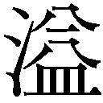

| 少女外道 | |
| 皆川博子 | |
| (2013) | |
少女外道
皆川博子
＊読む際のご注意、お断り等についてはこちらをお読み下さい。
少 女 外 道
梅雨に入る前にきてくれるはずだった葉次が腰を痛めたとかで、庭木の手入れをしないままに夏となった。
葉次は六十三か四か。角刈りの頭は胡麻塩だが足腰は達者で、脚立の上にすっくと立ち危うげもなく枝を切り落とす姿は、若かったころよりむしろ頼もしく久緒には感じられたのだったが。
パレットに残った絵の具をパレットナイフで削り落としながら、窓の外に目をやった。
濃い葉を茂らせた櫻の幹と梢が、視野の半ばを覆う。樹齢五十年に近い。古木というには早かろう。壮齢か。
夕影ののびる庭を、蟬の声が声明のように包む。夏の盛りの灼けつく暑さが鳴き音になった油蟬や夕暮れの儚さを哀惜する蜩の季にはまだ早い。ニイニイ蟬だろう。
ゆたかな樹液をもとめて、褐色のまだら模様が、目につくだけでも十匹の余、葉隠れの梢や幹にしがみついている。
樹皮のひとひらが揺れる。葉むらはそよぎもしないのに......と、老いの始まった眼を凝らすと、土をかきわけてようやく地上に出たのであろう、翅は殻に押し込められたままの蟬の幼虫が、遅々とした動きではあるけれど、幹を這い上がろうとしているところであった。幼虫とは言い条、長い歳月を暗黒の地中で過ごし、陽光の下に這い出た時はすでに老残の身である。千仞の谷底より断崖をよじ登るにひとしかろう。
土の上には、すでに地上数日の生を終えて梢から落ちた骸に蟻が群がっていた。その傍には、抜け殻が二つ三つころがっていた。
年初から変わった新しい年号にまだなじめないでいると、ふと思った。死ぬまでなじめそうもない。常命五十と聞いて育った。その齢を過ぎ、なお生きている。
若木の櫻が庭に植えられたのは、戦前、久緒が小学校に上がった年の夏であった。
櫻の枝は落とさないものだと言ったのは、葉次の父親の政吉だった。植政あるいは政さんと、久緒のうちの者は呼んでいた。櫻伐る馬鹿、梅伐らぬ馬鹿などという言葉も、政吉から聞きおぼえたように思う。
庭木の手入れだけではなく、簡単な造園も政吉は手がけていた。
敷地は四百数十坪あった。父の注文で、政吉が庭に池を作り、掘り出した土を利用して築山も作った。〈青雲の志〉という言葉が誇らかに語られた時代に、立身の志を抱いて田舎から上京した明治生まれの父親は、鯉が泳ぐ池のある庭というものに、愛らしいとも言えるほどの憧れを持っていたのだ......と、後になれば久緒も思い当たりもした。
政吉が四人の弟子たちを指図して、従来の植え込みを掘り起こし隅の方に仮植えしたり、池の形を決めて穴を掘ったりするのを、久緒は縁側に腰掛け、沓脱の石にも届かない足をぶらぶらさせて、見物した。兄は庭造りに興味は持たず、姉たちは、よけいな道楽にお父様がお金を使ってと顔をしかめる母に同調していた。
政吉が連れてきた四人のうち、二人は政吉の息子だった。次男の方が葉次で、幼い久緒の目にはずいぶん大人に見えたが、今数えてみれば、ほんの十三か四であった。
長男の幹太は他の者と同様、一人前に紺の腹掛け、紺のパッチだが、葉次は薄汚れたランニングシャツに半ズボンで、羽毛の生え揃わない鳥みたいだった。みんな、土で汚れた、これも紺の地下足袋を履いていた。
毎朝八時には職人たちはやってきた。十時と三時にお茶とおやつを出し、弁当を使う昼時にはちょっとしたおかずも添えるので、二人のねえやは仕事が増え忙しいのだが、どちらも少し浮き浮きして、職人たちと軽口をかわしていた。からかわれるのはもっぱら幹太で、頬を赤くしてまともに言い返すのが、さらにからかいのたねになっていた。もう一人いる若いねえやは、三つになったばかりの末の妹の世話にかかりきりで、台所仕事や拭き掃除は免除されていた。
お茶でくつろぐとき、縁先に腰を下ろすのは政吉親方だけで、他の四人は地べたに敷いた茣蓙に胡座をかいていた。
午前中にすませることになっている宿題帳と絵日記を、風が通って涼しいというのを口実に、久緒は、縁側の隅に文机を置いてやることにした。兄と二人の姉は二階の座敷をそれぞれ勉強部屋にしているけれど、久緒は部屋がなくて、猫の子のように茶の間と縁側を居場所にしていた。──もっと子猫に似ているのは、末の妹だった。子猫をじゃらすように職人たちは妹をあやし、久緒は強く嫉妬したが、自分から彼らに話しかけるすべを知らないのだった。
ノートの上半分に絵を描き下に文章を記す絵日記帳は、植木職人たちの立ち働く姿や一休みする姿で埋まった。
瓢簞形に掘り返された穴にコンクリートが塗られ、新たな植え込みが作られ、畚で庭石が運び込まれる。
一日の作業が終わると、職人たちは裏の井戸端で刃物を洗い、砥石にかける。葉次は兄弟子たちのためにポンプ井戸の取っ手をせっせと漕ぐ。逬る水がブリキのバケツに溜まる。代赭色の荒砥、中研ぎの青砥、そうしてきめこまかい仕上げ砥と、三種の砥石を使い分け、鎌だの剪定鋏だのを研ぎあげるのを、久緒は少し離れたところから眺めるのが常であった。青砥に、久緒は魅入られた。くすんだ灰緑色はけっして美しくはないのだが、磨いたら宝玉のように透明になりそうな気がした。
葉次が自分の道具を研ぐのは、最後になる。他の者が帰り支度をしてリヤカーに道具を積み込んでいるあいだに、葉次はいそいで鎌を研ぐ。ぬめぬめと濡れた青砥が、やわらかい粘土みたいに刃先を包むように見えた。近づいて傍らにしゃがみこみ、見とれた。
昼間、魚屋が井戸端で、盤台で担いできた魚の腸を抜いて三枚におろしていた。後を洗い流していったのだけれど、生臭いにおいが少し残り、鱗が二、三枚散っていた。
刃物のにおいが魚のにおいを消した。
危ないから、と葉次は言った。触るな。逆のことを言われたみたいに、反射的に久緒は青い石に手を出していた。リズミカルに前後させていた葉次の手が狂った。久緒から遠ざけようとした刃先が、葉次の指をかすった。ちっと舌打ちして、葉次は血を噴く指先を口に含んだ。とっさに、久緒は、鎌の鋭利な刃先に自分の指を当て、力を入れた。ぷつりと皮膚の切れる感触があった。葉次はいそいで久緒の指の根元を二本の指できつく押さえた。それから、久緒の指を口に入れた。
血は簡単に止まった。薄皮をちょっと切っただけだった。二つの小さい傷口をあわせてみた。一つの痛みを二人で感じていると、久緒は思った。
葉次が指を切ったのは、自分がちょっかいをだしたためだと久緒はわきまえ、自分にも傷をつけることでおあいこにした。
仕上げ砥にかけてから、鎌を手拭いで幾重にもくるみ、砥石も別の手拭いにくるんで、葉次は裏木戸から出ていったが、去り際に、久緒の髪をちょっと撫でた。
葉次の口の中で濡れた指をかざしたら、夕風の向きが感じられた。髪には葉次の手の感触が残っていた。
遠離るリヤカーを追って、半ズボンから伸びた葉次の足が敏捷に砂利道を蹴った。
夕旗雲の切れ目から射す茜色の光が、葉次の影を細く長く地上に描き残していた。久緒は木戸口から外に踏み出した。
影に追いつかぬうちに、リヤカーを曳く一団と葉次は路地を曲がり、姿が見えなくなった。
行く手の家並みと夕雲の間に赤い空がのぞき、巨大な太陽は熟れきって爆ぜ割れた。黒馬の群れがひしめくように空は黒ずんだ。
入相の気配が濃くなるにつれ、理由のない寂寥感が水のように肌に染みこむのはいつものことなのだけれど、この時は、いつにもまして激しい感覚に侵されたのをおぼえている。
──一日の終わりを世界の没落のように激越に感じるのは、あながち、幼かった自分だけではないのではないかと久緒が思うようになったのは、後にルドンやムンク、シーレなど、十九世紀末から二十世紀初頭にかけての画家たちの絵を画集や美術展で見たことによる──。
家に入れば、夕餉の支度に立ち働くねえやたち、権高に指図する母、お喋りに興じる姉たち......と、騒々しいのだけれど、その賑やかさは久緒の寂寥をみたすものではなかった。騒がしい家の中と、葉次たちが消えていった異空間とのあわい、何もない狭間にひとり佇んでいるように、久緒は感じたのだった。
一夜過ぎて朝となれば、〈彼ら〉は異界からあらわれる。紺の腹掛けとパッチ。葉次だけランニングシャツと半ズボン。
葉次は左の人差し指に薄汚れた包帯を巻いていた。久緒の傷は、包帯をするまでもなくふさがり、痕さえ残っていなかった。葉次は素早い視線を久緒の指に走らせ、ほっとした表情を見せた。
その日は珍しく父が縁側に立って眺めていたから、日曜だったのだろう。久緒も隣に腰を下ろしていた。昼日中ともなれば、陽に焙られた真鍮のレールが腿の裏を熱く焼くのだが、まだひやりとしていた。
応接間の西窓の際に、幹太と葉次がスコップで穴を掘っていた。柄の長さが久緒の背丈ほどもあるスコップは、獰猛な凶器のように感じられ、それを自在に扱う兄弟を久緒は畏敬した。スコップの縁に地下足袋の足をのせ、ぐいと押し込むとき、葉次の頬は紅潮し、ひどい痛みを耐えるかのように眉根が盛り上がるのだった。
鉈豆煙管をふかしながら案配を見ている政吉に、そんなところに何か植える予定があったか、と父が訊いた。
櫻でさ。政吉は愛想のない声で言った。根方を土ごと丸く縄でくくった若木が、地べたに横たえられていた。スコップよりよほど弱々しく、幹の太さは久緒の腕の半分もなかった。
一本ほしいと、旦那が言いなさったでしょう。
そうだったかな。父の左の小鼻がひくひく動くのを、久緒は見た。ちょっと気まずいのをごまかすときの癖だ。前の夜、夕餉のときに父が母に言った言葉を、久緒は耳にとめている。あいつは、勝手に植木を増やす。話の流れから、〈あいつ〉が政吉を指すのは、久緒にもわかった。朝、きたと思うと十時のお茶で、じきにお昼で、と、母も同調した。職人たちときたら、手を休めてばかりいますからねえ。給金を払っているからには、雇い人使用人の時間は、すべて主のものと、父も母も思っていた。だから、ねえやたちは、一日中なにかしら手仕事をしていた。昼の片づけを終えて夕方の掃除が始まるまでの間も、縫い物やら繕い物やらで背中を丸めていた。ときどき物差しで肩を叩き、凝りをほぐすのだが、母に見とがめられると急いで居住まいを正すのだった。
父が気まずそうにしたのは、時々気まぐれに何か言いつけ、それを忘れていることがあるからだったろう。
再来年には花をつけるでしょうと、政吉は言った。
幹太が若木を起こし穴に立てるのに葉次が手を添えた。まわりの土を二人で踏み固めた。地下足袋の痕が刻された。
西陽を逆光に浴びて櫻の幹は黒々とし、茂った葉の間から朱を帯びた光が流れる。翅のある身を殻に閉ざされたままの幼虫は、じわじわと幹を這い上り続けている。
絵の具の残りをこそげ落としたパレットにリンシードオイルを垂らし、ぼろ布で拭う。長年使い込んだパレットは、激しい色、淡い色が混ざり合い、それ自体一つの芸術作品のようだ。
漁師の家を一夏借り、久緒の一家が海辺に避暑に行ったのは、櫻の若木を植えた年の翌年だった。
葉次が同行した。姉たちのお喋りから、久緒は理由を知った。ねえやの一人が、避暑に出かける直前にいとまをとった。郷里の親がわずらい、世話をしなくてはならないということだった。ほんとは、縁談らしいのよ、と上の姉が下の姉に言っていた。でも、縁談なら後が決まるまでのばせって、お母様に言われると思って、のっぴきならない理由をこしらえたのよ。
父は仕事を休めないし、兄は中学受験の準備で家庭教師を家に招き猛勉強の夏だったから、ねえやの一人は家事をするためにおいていかなくてはならない。避暑先に、ねえや一人だけでは手が足りない。ちょうどそんなとき、植政が不始末をし、父に弁済しなくてはならなくなった。父が高い値を払って植えさせた庭木の一つが、半年足らずで枯れてしまった。代金を返させようとしたが、植政には手持ちの金がなかった。それをいいことに、母が、葉次を下男がわりに伴うことにしたのである。海で遊べるのだから、政さん、こんないい話はないでしょう、と母は恩に着せたのだそうだ。
葉次は遊ぶ暇などなかった。早朝から飯炊き掃除と酷使され、午前と午後、二度水浴びに行く久緒たちに、葉次は付きそいを命じられている。風呂の水汲みも薪をくべて沸かすのも、薪割りも、すべて葉次の仕事であった。母は日焼けするのを厭い、浜にはこなかった。磯浜に出ても、ねえやは末の妹につきっきりなので、葉次は、まるで泳げない三人の女の子──久緒とその二人の姉──に、くまなく目を配っていなくてはならなかった。その上依怙贔屓のないよう、ひとりずつ両手をひいて泳がせてやらねばならない。辛気くさいことであったろうと久緒が思えるようになったのは、ずっと後だ。
家族を一夏避暑に行かせるというのは、庭に池を作り鯉を放つのと同様、父親にとっては、立身を果たした成功の象徴であった。本来なら別荘を持ちたいところであったが、夏しか用いないのに一軒構えるのは不経済だ、夏場だけ借りて、毎年違う場所に行く方がよいと父親は計算したのだった。
子供たちは、父が期待したほどには、海辺の暮らしを楽しまなかった。磯の窪みに蠢く船虫は気味悪かったし、陽光は、都会の空にあるそれと同じ存在とは思えない激しさで皮膚に火ぶくれを作り、風呂に入るのは拷問だった。日に二度の水遊びは、初めは物珍しさもあったが、表皮が剥け終わるころには、磯巾着をみつけて棒でつつくのにも飽きた。
植木職は陽の下での仕事だから、葉次の肌は冬でも褪めないくらい陽灼けしていたのが、いっそう濃い褐色になり艶を帯びた。
姉たちは東京に帰りたいと不平を言い始めた。家の借り賃は一夏分前払いしてある。途中で解約しても返金はされない。子供たちの退屈を紛らせるために、船遊びをさせるよう、母が漁師に頼んだ。子供の目には城壁とも見える巨大な和船で、沖に出た。母は船酔いするからと言って、残った。
艫で櫓を漕ぐ壮年の漁師のかたわらで、葉次はのびやかな笑顔を見せていた。久緒が初めて知った葉次の表情であった。
遠目に見れば凪いでいるようでも、沖の海風は船を掴み上げては放り投げ、ラムネを飲みながらはしゃいでいた子供たちの笑い声に、次第に怯えがひそみ始めた。葉次と漁師は、船が平地にあるかのように、屈託のない顔だった。海の色は青黒くなった。
陽射しを遮る麦藁帽子のつばが風を受けてめくれあがり、顎の下に結んだリボンが喉を締めつけた。ゴム紐でとめてある妹の帽子は後ろから風に攫われ、宙を舞って波間に落ちた。妹はここぞとばかり、泣きわめいた。船縁をまたぎ、ナイフのように海中に飛び込んだ葉次は、下帯一本であった。
漁師は櫓を押す手を止め、船が流れないよう碇綱をたぐりおろした。
海を愛撫するように、葉次は泳いだ。漂う帽子はじきに葉次の手におさまった。船縁から身を乗り出す漁師に、水面から跳ね上がって帽子を渡すと、水に戻った。帽子を手にしても妹はなお泣き叫ぶのを止めなかった。葉次は船の回りをゆったりと立ち泳ぎしていたが、漁師と目顔で頷き合うと、一直線に泳ぎだした。見晴るかせど陸の影はなかった。漁師は碇を上げ舳先を返した。船は葉次を追った。
船は葉次と並んで進んでいた。葉次の頭は波の間を浮き沈みし、次第に速度が落ちた。へばったら、あがれ。漁師は塩辛声で怒鳴り、船足を葉次に合わせた。葉次は泳ぎ続けた。
磯浜が薄黒く視野に入るころ、陽は西にまわっていた。
やがて、見えない手で引きずりあげられる濡れた砂袋みたいに、葉次はのろのろと立ち上がった。その時、船も、がりりと浅瀬に乗り上げた。漁師の手を借りて、子供たちは浅瀬に降り立った。ねえやの胸にしがみついていた妹は、現金に泣き止んだ。
磯の間にわずかにのぞく砂地に、葉次は仰向けに躰を投げ出し、荒い息をしていた。胸骨は激しく上下し、そのたびに、褐色の皮膚は破れそうに張りつめ、ゆるんだ。
子供たちが磯の間を歩き出すと、葉次は重い躰を引き起こした。う、と小さく呻いて膝をついた。どうしたの。ねえやが尖った声を浴びせた。早く帰らないと、お夕飯の支度に間に合わないわ。奥様に怒られるわよ。
漁師が、固く縮まって痙攣する葉次の腓を、力まかせに揉みほぐした。葉次の上半身は尾を掴まれた魚のように身悶えた。声は上げなかった。苦痛を堪える表情がやわらぎ、なおった、と言って立ち上がったが、よろめいた。岩に手をついて支えた。鋭く突きだした角が腿に裂き傷を作った。漁師は塩水をかけて傷口を洗い、腰の手拭いで縛った。そのとき久緒は、初めて知る感覚にうろたえた。決して他人に悟られてはならない感覚だと、本能的に知っていた。
無茶な遠泳ぎをしたことを、ねえやは母に告げた。葉次は黙々と風呂に水を汲みこんだ。傷を縛った手拭いに、新たな血が滲んだ。船遊びの翌日、珍しく父がきた。仕事を三日ほど休んで家族につきあうことにしたのだった。兄とねえやの一人が東京に残っていた。子供たちへの土産に、父は百貨店で求めた花火のセットを持参した。父にしては珍しい気配りであった。差し渡し一寸はある太いのから鉛筆ぐらいの細いのまで大小何本もの筒花火。手持ちの電気花火、線香花火。ねずみ花火。浅いボール紙の箱にぎっしり詰められ、セロファンをかぶせてあった。
葉次の怪我の理由を聞くと、父は不機嫌きわまりない声で、義務を忘れ気ままなことをしてはならないと、葉次を叱りつけた。
敗戦後数年を経、久緒は美術学校の洋画科に進んだ。女は早く結婚して子供を産めというのが時代の常識であったが、自由とか平等とかいう言葉が──その実態がなんだか訳のわからないまま──絶対的な価値を持ち始め、戦前に美徳とされたことはすべて〈封建的〉の一言で否定され、権力はあっても権威がなくなった世の中で、親たちも教師たちもとまどっているように、久緒には見えた。姉たちは結婚して家を出、学徒出陣で入隊していた兄も除隊になり中断された学業を終えて結婚した。一人ぐらい変わり種がいてもいいでしょうと、母は寛大に許した。父の意向を、母は問わなかった。
我意をとおしたのを機に、久緒は家を出て学校の近くに下宿した。
月に二、三度、教官室で作品の講評が行われる。画壇の重鎮といわれる先生たちの目にとまりたいと、学生たちは作品を携えて集まる。
晩秋の一日、久緒は櫻の幹に少女を描き重ねた小品を教官室の壁に立てかけた。葉の落ちた櫻の樹木に自画像を重ね描いたものであった。いくつかの作品が褒められたり、注意を与えられたりしたが、久緒の作品は、「女の子の感傷だな」「幹の割れ目のバーミリオンがよけいだ」で終わった。
素通りよりましかも知れないが、少し気落ちして教官室を出た。その時、同年配の女子学生に声をかけられた。
「ああ、このあいだは」久緒はちょっと笑顔になった。
裸婦デッサンなどはときどき日本画科と合同で行われる。数日前、デッサン教室を出てから、久緒はコンテを置き忘れたのに気がついた。取りに戻ろうとしたら、小走りに追いかけてきて渡してくれたのが、この日本画科の女子学生だった。
「あなたの、見たわ」
そう言って、女子学生は抱えていた二つ折りのカルトンを開いた。
「あなたも......」しばらく見とれてから、久緒はようやく言った。「感じるの？」
「ええ」
「わたしだけかと思っていた......」
建物の外に出て、ベンチのかたわらの落葉樹に、姓を阿星というその女子学生は、開いたカルトンを立てかけた。その隣に久緒も小品をならべ、二人でベンチに腰を下ろした。阿星が淡彩で描いたのは半開の蓮の花であった。花に重ねて、少女の姿が描かれていた。櫻と蓮の違い、水彩と油彩の違いはあっても、表現したいものは同じだと久緒は感じ、相手も同様に感じたから声をかけてきたのだと思った。
「融けるの」久緒が言うと、
「ええ、そう」相手はうなずいた。
地方の城下町の名をあげ、父が小さい寺の住職なの、と、阿星は語った。
「境内に蓮池があって」
父に命じられて作った池を、戦争末期、植政は、ふたたび父の指示で、水を抜きコンクリートを砕き、さらに掘り下げ掘り広げて防空壕にしなくてはならなかった。悠々と泳いでいた数尾の鯉はどうなったのか、久緒は知らない。植え込みの庭木はめちゃめちゃになったが、櫻は残った。幹太は応召し、葉次は徴用工として軍需工場で働いていたから、そのとき政吉が連れてきたのは、召集令もこない初老の職人たちばかりであった。
「蓮の蕾って、両手を合わせた禱りの形だと、小さい時から感じていたの」そう言いながら阿星は、両の手の指先を、ふっくらとした空間を包み込む形に、かるく合わせた。「そして、この中にわたしがいる......。わたしは蓮なんだ......って」
自分は櫻の樹木だと初めて感じたのは......と、久緒は思い返した。
敗戦の年の晩秋、不要になった防空壕を埋めるために、父は植政を呼んだ。放っておいては無様だし危険だ。
久緒はその年の春、私立の女学校に進んでいた。夏の敗戦まで、学徒勤労令により軍需工場で働いており、二学期から授業が始まったのだった。
幹太はソ連に抑留されたままで帰ってこず、葉次が父親といっしょにきた。敗戦で軍需工場が閉鎖になってから、葉次は父親のもとで植木職に戻っていた。命拾いしたわね、と、母は目顔で葉次を指し、政吉に言った。戦争中は口にできない表現であった。葉次と同年配の者の多くは、予科練に志願入隊し、特攻となって散華していた。葉次は左眼の視力を失っていたので、志願は不可能だったのだ。
久緒は縁側にいた。六年を経てしくなった櫻の幹に、葉次は掌をあて、梢を見上げた。真紅の葉はほとんど落ちつくし、褐色になった朽ち葉が梢の先に数片残っていた。
──わたしは樹液となって櫻の幹の中を流れている。
突然、久緒はそう感じたのだった。
学制改革で、女学校は消滅し、男女共学の中学となり高校に進んだ。
旗日に、門に国旗を掲げることもなくなり、父が仕事にでかけるときに、いってらっしゃいませと玄関の式台に膝をついて見送る作法も消えた。父は池を作り直す気力を失っていた。
樹木と融けあう奇妙な感覚は、久緒の意思に関わりなく、理不尽に時折彼女を掴んだ。
「先生はおわかりにならなかったのね、あなたが表現したかったこと」阿星は言った。「だから、わたしは自分の絵を提出するのを止めたの」
「自画像を重ね描きしては、説明になってしまうわね」久緒は応じた。「でも、あの感覚......わたしはこの櫻の樹だ、櫻と融けあっている......って感じたあれを、どう表現したらいいのか......」
「わたしは蓮の蕾の中で禱っている。蓮とわたしと禱り。それが一つに融けあっているのを、わたしも、どう表現したらいいか......」
禱りという感覚は、久緒の中にはなかった。樹液は血のにおいを持っていた。自分が樹液となって流れると同時に、目に見える光景がそのとき、異様に鮮やかで、微細な部分までくっきりとしたのだった。樹の肌の荒々しい凹凸。窪みにたまった琥珀色の樹脂。この世の風景と同じでありながら、その向こうにある別の光景を見ていた。
「おうちがお寺だから、あなたは浄化された感覚を持てるのかしら」
「浄化された感覚を持っているから禱るんじゃないの。浄化されたいから......というのともちがう。自然な気持ちの動きなの」
寺といっても、父は、ちっとも清浄じゃないのよ、と阿星は言った。「人前ではきれいな口をきいて説教するけれど、庫裏でお布施の勘定をしているときの顔って、たまらなく卑しい」
最後の言葉は、思いあまって吐きだしたような語気だった。言い過ぎたと思ったのか、阿星は口をつぐんだ。
「蓮の花が開く時、音がするっていうけど、ほんと？」久緒は話題を変えた。興味はなかったが、場つなぎの話題だ。「でも、それは言い伝えだけで、音はしないっていう説もあるそうだし」
「蕾が開くのは夜明けなの。わたしはそんなに早起きしたことがないから、わからない。もし音がするとしたら、生まれ出ることへの、小さい吐息かもしれないな」
櫻の蕾が開くとき音がするという話はないけれど、櫻は、声を立てず笑うのではないかと、久緒は思った。おびただしい筒花火がいっせいに火を噴き上げて笑うように。
「父の顔を見たくないというのも、東京の学校を選んだ理由の一つなの」ふこうね、と阿星はひとりごちた。
不孝という意味か不幸なのか、わからなかった。どちらも同じことだ。親を厭わずにはいられないのは、不孝だし不幸だ。
「父が他の職業なら、金に汚かろうと、別にかまわない。でも、僧侶だから。人に道を説く人だから」
「こっちでは、下宿していらっしゃるの？」
「ええ。父の知人が住職をしているお寺の庫裏の一部屋を借りて」
「そのお寺には、池はないの？」
「あるわ。小さいのが」鬱陶しい話をごめんなさいね、と言いながら、阿星は久緒の手の甲にやわらかく指を触れた。「あなたの手、きれいね」
「リンシードを使うから、荒れてるわ」
「荒れているから、きれい」阿星は言い、そうして、「清浄と淫らって、一つのことだと思うわ」と、脈絡のない言葉を続けた。「わたし、好きな人がいるの」
ほとんど初対面に近い間柄なのに、いきなり立ち入った話題を持ち出され、「そう」と応じた久緒の声は、少し素っ気なくなった。このとき久緒は、コールリッジのバラードThe Rime of the Ancient Marinerの冒頭を思い浮かべていた。結婚式に向かう三人の客の一人だけが、老いた水夫に呼び止められる。見知らぬ水夫は、彼が経験した恐ろしい航海の話を物語る。
嵐で流された船が濃霧の中を漂っている時、マストに翼を休めた信天翁を、水夫は射落とし、そのために船は呪いを受けた。
一人呼び止められた客。なぜ聞き手に彼が選ばれたのか、譚詩は語っていない。
「父の寺にいた人。わたしに日本画の手ほどきをしてくれたの。絵手本を描いてくれて、わたしはそれをまねするの。没骨法といってね、下書きなしに、肘を浮かせたまま、墨を含ませた筆で一気に、鳥だの花だのを描くの。筆とその人が一つになっていた。その人、聖痕を持っているの」
聖痕。キリスト教の言葉である。その正確な意味を久緒は知らず、聖別は神から特別に選ばれた者の意であり、聖痕は聖別された者が持つ傷というふうに思っていた。
「生まれつき、上唇の端と口蓋に縦の裂け目があって、縫合の痕が残っているの」
仏教徒と聖痕は結びつかないが、久緒は阿星の感覚のねじれを理解した。傷を持つゆえに、僧は阿星の心の中で特別な存在となったのだ。
「これ、さしあげるわ」カルトンを指して阿星が言った。
「いただいていいの？」
「そのかわり、あなたのをいただける？」
「交換？」
「ええ」
どうぞ、と言うと、阿星は蓮と少女の絵を裏返し、紙の隅に住所を記した。
「わたしが部屋を借りているお寺」
久緒は自分の下宿の場所を告げなかった。一方的に親しみを感じられても困る。
気にかけたふうもなく、阿星は久緒の小品を抱え持ち、会釈して去った。
その後、阿星を校内で見かけることのない日が続いた。
日本画科と合同の裸婦デッサンのときも、阿星の姿はなかった。同級と思われる学生に消息をたずね、ずっと欠席していることを知った。
阿星の絵は、共感できる感覚ではあったが、相手から押しつけられたのがなんだか煩わしくて、久緒は押し入れにしまい込んだのだが、そのくせ、忘れ去ることもできないでいた。
裏に記された寺の住所を確認し、地図で調べてから国電に乗り、さらに都電に乗り換えた。下りた停留所の近くの和菓子屋で、店番の女に寺の名前をあげて道筋を訊ねた。都電の通りは店屋が並んでいるが、一筋裏に入ると空襲の惨禍を免れた閑雅な屋敷町で、人通りはほとんどなかった。
なぞえの道を土塀に沿って歩いた。冠木門を持った屋敷などもあるので、小さい寺の山門もさして不似合いではなかった。
古びた賽銭箱の上に下がる鰐口の綱はささくれ、手垢で黒光りしていた。
阿星の実家も寄宿先のこの寺も浄土真宗だときいた。久緒には、浄土宗も天台宗も法華も区別がつかない。宗教には反感の方が強い。無関心ではなかった。俗世を超えた何かが存在すると思うが、教えを垂れる賢しら顔の〈人間〉が嫌いだ。
筧の水音がして、池のありかがわかった。
花の時期はとうに終わり、鈍色の水面に、すがれた荷葉が漂っていた。
池畔に僧が一人かがみこみ、葉柄にからまる藻をつまみ、傍らのバケツに捨てていた。
久緒が近づくと、顔を上げた。上唇の裂傷は縫合してあるのだが、形成外科の技術などまだ導入されていない時代だった。傷痕は鼻孔の形までゆがめていた。
「阿星さんはいらっしゃいますか」
「あやは、実家に帰りましたが」
口蓋裂傷のためだろう、僧の言葉はやや聞き取りにくかった。
「休学ですか」
「たぶん」そう言ってから、僧は久緒をまっすぐに見つめ、「櫻のお嬢さんですね」と言った。
「阿星さんに日本画の手ほどきをなさった方ですか」
僧はうなずいた。「以前、あの子の父親の寺にいたときに」
「あなたが上京なさったので、阿星さんも？」自分でも思いがけない不躾な言葉が、久緒の口から飛び出していた。
僧は非礼を咎めはしなかったが、答えも与えず、そのかわり、「あなたも辛そうだな」と言った。
久緒が返答に窮していると、「思い詰めない方が、生きるのが楽ですよ」と言いながら、池の水に手を浸した。指に絡めた藻を引き上げて捨て、立ち上がった。長身であった。
「わたしの絵をごらんになったのですね」
「見ました」
「阿星さんの蓮の蕾の絵は」
「見ました」僧は腰に下げた手拭いをとって、濡れた指を拭った。「ふこうな絵ですね」
不幸と言ったのだろうと、久緒は思った。〈不孝〉ではあるまい。
「わたしのも不幸な絵でしょうか」
僧は軽く会釈して、バケツを提げて裏の方に立ち去った。久緒の言葉を肯定したのか、ただの挨拶か、わからなかった。
さらに一週間ほど過ぎ、デッサン教室で、がりがりに痩せたモデルの裸体を素描している時、学生のひとりが寄ってきて、「阿星さんのこと、聞いたか？」と話しかけた。この前、久緒が阿星の消息を訊ねた相手であった。
「お郷里に帰ったってうかがったわ」
「その後のこと」
知らないと言ったが、予想がついた。久緒が思ったとおりのことを、学生は軽々と口にした。
樹齢五十年に近い樹肌の深い罅割れに久緒は目を投げる。あのとき、もう一度寺を訪ねれば、傷痕を持つ僧に事情を確かめることはできたのだった。しかし、久緒はそれをしなかった。
逆に、思うまいとつとめた。花火の夜のことも意識に上らせないようにした。押し込めて何十年になるか。
もう、大丈夫。地上何メートルかまで這い上った蟬に目をやって、久緒は心の中で自分に確かめる。割れ目に爪をかけ、蟬は動かない。
花火の前に、もう一つささやかなことがあった。他人の目にはささやかだろうが、自分の中に巣くう歪みをはっきり認識したときであった。腿の傷のために、葉次はその日、海辺への付き添いを免除された。かわりに父が子供たちを連れて行くと言ったのだが、嬉しそうな顔をする者は一人もいなかった。父親の威厳が失墜する敗戦よりだいぶ前だったから、子供たちは素直に水着に着替えたが、幼い妹だけが露骨にぐずった。ねえやがあやしてもべそをかいたままだったのに、葉次がちょっとかまったら、機嫌を直した。浮き輪を抱えゴム草履を履いて、三人の子供たちは父にしたがった。妹だけは庭先で葉次にじゃれついていた。精いっぱい走って、どんと葉次にぶつかる。葉次は少し身をかがめて、抱きとめる。それを繰り返していた。腿を縛っているのは漁師の手拭いではなく新しい包帯だった。妹が力一杯飛びつくので、包帯にじわじわと血が滲み広がった。久緒は軀の中に湧く感覚に困惑していた。足を止めている久緒を、上の姉が促した。前の日、葉次の腿を流れる血を見た時感じたものが、明瞭になった。それを何と呼ぶのかは知らなかったが、決して他人に知られてはならないと、本能が久緒に教えた。
夕餉の後、さあ、花火をしようと、父が一番はしゃぎたった。揃って浜に出た。葉次とねえやもいっしょであった。漁村の家々には、鍵も留守番も必要なかった。
漆黒の中天に靄を流したように薄白いのが銀河であった。散在する星々は冷徹な穴であった。提灯と懐中電灯で足元を照らしながら磯浜に向かった。夜の磯浜は波音がひときわ荒かった。
盛大に打ち上げよう。父は景気づけるように言って、筒花火を並べて立てろと葉次に命じた。岩に立てかけても不安定で倒れがちだ。磯の間にわずかにのぞく砂地を父は指し、そこに根本を埋めて立てろと指示した。
母は子供たちを筒花火の列から二、三間離れさせた。
全部一度に火をつけろ。父が言い、葉ちゃん、爆弾三勇士よ、とねえやが浮き浮きした声を投げかけた。
葉次はマッチを擦り、端から、導火線に点火していった。三、四本点火したところでマッチが短くなり、指を焼きそうになって投げ捨て、新しいのを擦った。風に吹き消され、もたついた。久緒はそばに寄ろうとした。浴衣の袖で風を防ごうと思ったのだが、近くに行っては駄目、と母にとめられた。
突然、火柱が噴き上がった。
葉次は近所の医者に連れて行かれ、さらに東京に帰って入院した。入院費と多額の見舞金が植政に支払われた。過失は無分別な点火をした葉次にあったとされ、父を責める声は、いっさいなかった。ねえやにも金銭は渡された。
細いのから順に点火していけば、何も危険はなかったのだ。よりによって一番太いやつに真っ先に火をつけるとは、馬鹿な奴だ。左の小鼻をひくひくさせながら、父は母や子供たちの前でそう言った。
筒花火の爆薬のかけらが、左眼の角膜を傷つけ視力を奪ったのだが、白濁もしておらず、見た目は変わらない。しかし、目尻からこめかみにかけての火傷の痕は、引きつれになって残っていた。
避暑はその夏一度だけで、翌年の臘月、太平洋での戦争が始まり、贅沢はできなくなった。やがて都市という都市が焼け爛れて戦争は敗北に終わった。
壕を埋めた後数年は、インフレーションやら預金封鎖、新円切り替えだの食糧難だので、庭木の手入れどころではなく、植政を呼ぶことはなくなった。
櫻の幹に手を当てて見上げていた葉次を思うと、父母の冷酷な仕打ちや無神経な言葉が同時によみがえるのだが、久緒には、両親を責める資格はないのだった。樹木と融けあい樹液となって幹の中を流れる感覚に、言いしれぬ愉悦があった。それ以前に、葉次の肉体が苦痛のなかにある時、同じ感覚に貫かれた。愉悦を何と呼ぶか、さとったのは阿星と語り合った時であった。阿星が唇には上らせない言葉が、わかった。
悦びを感じて当然の相手と口づけし、性をかわしても、あの一瞬の愉悦は絶えて生じることなく、久緒は自分の歪みを思い知らされた。
美術学校を卒業した後も、久緒は家には戻らなかった。教職課程もとっていたので、高校で美術の教師をしながら制作し、画廊の目にとまり、バックアップしてもらえるようになった。
母が病死し、次いで父も他界した。そのころは、久緒は高校教師をやめ、画業のみで暮らしが立つようになっていた。
きょうだいの中では妹だけが、戦後ほどなく病死していた。父の死によって、土地と家に莫大な相続税がかかった。兄と姉たちは、家を取り壊し更地にして売却し、税金を払った残りを等分すると言った。
櫻のある一郭だけ、売らないでほしいと久緒は懇願した。西南の隅、応接間のあたり。他に遺産は何も要らない。
土地の形が悪くなって売りにくいと姉たちも兄嫁も反対したが、兄が承知してくれた。古い家を壊した跡地は公の機関が買い上げ、閑静な公園になった。
取り壊された応接間の土台を利用して久緒は小さい家を建てた。画室の他には、湯殿や台所など一人の暮らしに必要な最低限の広さがあればいい。総二階にしたので、狭い地所ながら一応庭もととのえられた。櫻は生け垣越しに、公園の方にまで枝を伸ばす。一本だけなので、花見の何のと煩いことはない。
画室の外で、「この櫻だよ」という男の声がした時、久緒は三十になっていた。
窓の外をのぞいたが、声の主は生け垣のむこうで話しているらしく姿は見えず、雲母刷りの鈍い光沢を持った四月の空に、盛りの櫻は薄白く散りしきっていた。
久緒は庭下駄を履いて、生け垣に近寄った。頭一つ出る高さなので、見通せた。
三人連れであった。真新しい中学の制服を着た少年とその両親。
背広は、葉次を少し貧相に見せた。妻の方は無地の和服に黒い羽織を着ていた。正装だ。
「ひさ嬢ちゃんが住んでおられるとは思わなかったです」
恐縮する三人を招き入れた。画室の一隅に来客時のための長椅子とティーテーブルを備えてある。
中学一年生にはケーキと紅茶の方が嬉しいだろうと思ったが、ケーキの買い置きはないので、桜湯におかきを添えた。
「坊主の入学を祝っていただいているみたいで」と葉次は湯呑みをちょっと押し頂いた。
無口で無愛想だったのが、ずいぶん世慣れてきていた。それでも愚直なほど誠実な印象を受けた。
亡父の跡を継いで植木職を続けていると葉次は言った。「兄貴はソ連のラーゲリ（収容所）で酷い目にあって死にましたんで」湯呑みを持つ手はごつごつと節くれ立ち、洗い落としきれない土の黒さが指先に染みこんでいた。
坊主の入った中学が、うちとこちらさんのちょうど真ん中あたりで、と葉次はティーテーブルから少し浮かした指で三角を描いた。
「終戦からこっち、ずっとご縁がなかったんですが、こいつの入学式に行ったら校門の傍の櫻が満開で、ふとこちらの櫻を思い出して......。道は逆なんですが、女房と息子にも見せてやりたくなりまして」訥々と、葉次は語った。「うちから中学まで、歩いて十七、八分。それからこちらまで、また二十分ほどですかね。いや、直線距離にすれば三十分ちょっとですが。リヤカーを引っぱって、こちらにきていたんですから。今はオート三輪を使っていますが」
空になった湯呑みを替え、煎茶をいれた。「どうぞ、どうぞ、もうお構いなく」葉次の妻が身をすくめた。
「まさか、お宅のあたりが公園になっているとは。お声がかからないので、他の植木屋がお出入りしているのかと」
「すっかり様変わりしてしまって」
「皆さん、お元気で」
両親がとうに他界したことを告げると、お焼香にも上がらないで御無礼しました、と義理堅いことを言った。こき使われたことも、左眼の失明は父に責任があることも、心底、根に持ってはいない様子が見て取れた。
「ひさ嬢ちゃんが絵描きさんとはねえ」と葉次はありきたりのせりふを口にした。「そういえば、小さいころ、縁側でよく描いてなさった」
会わない方がよかったと久緒は思ったが、顔に出さないほどには大人になっていた。生きるための潤滑油としての、そらぞらしいお愛想。決まり言葉。なろうことなら使いたくはない。
「こんな、庭ともいえない小さいのなんですけど、また、時々きていただけないかしら」
裏腹な挨拶が、意思にかかわらず口からこぼれていた。
「そりゃあもう、喜んで。草引きぐらいなら女房もやりますし」
梅雨前、秋口、年の瀬、春先と、季節の変わり目ごとに、葉次はオート三輪で訪れて、よけいな枝を払い、肥料を入れ、野放図に伸びようとする藪枯らしを抜き、櫻につく毛虫をとってくれた。妻と二人でくることもあった。
それは決まった代金を払う仕事だが、春には筍、夏には胡瓜や茄子と、とれたての瑞々しいのを、時折妻が届けてくれた。葉次は広い溜を政吉から引き継いでおり、自家用の畑も作っていて、得意先への配りものにもしており、代はとらないのだった。
昔のように昼のおかずやおやつ、お茶の世話をする必要はなかった。熱湯をみたした魔法瓶と土瓶、茶の葉だけを用意しておけばすんだ。茶菓子も持参するので、請求書に茶菓子代も含めてもらうようにした。
やがて、葉次のオート三輪は小型トラックに変わった。〈植政造園〉と横腹には記されている。
葉次が血を流すことがあっても、もう、体の芯を蜜の槍に貫かれることはないと、久緒は思った。異様な性感からは解き放たれた。
阿星が自殺したと知ったときから、血と傷を偏愛する自分を認めまいとしてきた。口蓋裂傷を〈聖痕〉と崇める阿星は、自分を狂死にまで追いつめた。狂うことが死より恐ろしくて、久緒は、普通に生きようとつとめた。
それからの二十六年の何と速く過ぎたことか。息子が職人仕事は継がず勤め人になったとか、結婚したとか、孫ができたとか、葉次はその都度、笑顔で告げた。葉次は静かに老い、彼の妻も老い、久緒もまた老いた。
没落を直後に控えた最後の赫きが西の空にあった。
櫻の幹に、小さい白いものが蠢くのを、久緒は見た。樹皮と紛らわしい褐色の背が縦に裂け、柔らかい真珠のような成虫が、翅はまだ縮かんで、身は逆さに吊り下がり、かすかに揺れていた。そのまわりにぞわぞわと蠢くのは蟻どもだ。翅がのび飛び立つ前に、まだひ弱なからだを 食にしようと待ちかまえている。
食にしようと待ちかまえている。
訪客を告げるチャイムが鳴った。
「どなた」
玄関の土間に下り、扉を開けず声を掛けた。
「植政です」若い声であった。
扉を開けた。
匂い立つ少年が、布巾をかけた笊をぶっきらぼうに両手で突きだした。布巾は盛り上がっていた。ばあちゃんが、とだけ言った。笊の目の間から、艶やかな紫がこぼれた。こめかみに薄く汗がにじんでいる。傍らに自転車があった。歩いて三十分という距離を、ペダルを漕いできたのだろう。久緒が持ち重りのする笊を受け取ると、左手の甲で額を拭った。
左手には、包帯が巻き付けられ、赤黒いしみがひろがっていた。
じいちゃん、来月にはこれるって。
そう言いながら、葉次は──いや、健やかな少年は──後じさった。
怯えた表情に、久緒は、自分が今どのような目をしているか気づいた。
「ありがとう。おじいちゃんとおばあちゃんによろしく」まともな応対をすると、少年は、あ、というような喉声で応え、サイドスタンドを蹴り上げてはずし、サドルにまたがった。振り向きもせず、走り去った。
笊を抱えた久緒の右手には、ナイフがあった。平たい箆にすぎないパレットナイフは、つかの間、ジャックナイフであった。
独り暮らしでは食べ尽くすのに半月もかかりそうな茄子の山の笊を台所におき、画室に戻った。
窓の外に目をやると、櫻の幹に爪を立てているのは、抜け殻ばかりであった。夕空に飛び立つところを、見そびれた。
有るか無しの風に、もはやしがみつく意思の力を持たぬ抜け殻は、ひとひらの枯葉のように、幹を離れ落下した。
池を造ろう、と、不意に思った。葉次に頼もう。庭たずみほどのささやかな池。蓮を培おう。蕾の中で禱ろう。神仏ならぬ何ものかに向かって。
窓から乗り出して、地面を見た。梢の間から射す一筋の夕陽が、放たれた悲哀のように、小さい殻の背の割れ目に赤く溜まっていた。
未だあらぬ池の面を、夕風が吹き過ぎた。
寿司を食べながら焼き上がるのを待つというのは、なかなかにブラックな情景ではないかと彼は思うのだが、これが一般的な風習になっているようだ。
長方形のテーブルを二つずつ縦に二列に並べ、折りたたみのスチール製の椅子をおいただけの殺風景な部屋であった。熱湯を入れた魔法瓶と土瓶が二つ。お茶は銘々かってに、備え付けの湯呑みに注ぐ。
なぜ、寿司なのだろう。大勢で、もっとも簡便に食べられるからか。などと暢気なことを考えていられるのも、荼毘にふされつつあるのが、生前、一度も会ったことのない、しかもあと数ヶ月で百歳になるところだったという老女だからか。所在ないままに、朱塗りの鮨桶から、あまりいい色ではない鮪の握りを小皿にとる。
集まっているのは、老女の子供たちと、そのそれぞれの家族で、総勢十数人はいた。死者が百歳にあと一歩というところだったのだから、子供たちもその連れ合いたちも、白髪やら禿頭やら、杖がなくては歩けない者やら、誰の葬式がいつあってもおかしくはないという者が何人もいる。死者の孫に当たる世代の最年長者が四十代の半ばをすぎている。悲しそうな顔をしている者は一人もいない。時折、笑い声さえ上がる。小学生の女の子が二人いて、これは曾孫だそうだ。二人とも、寿司に箸をのばしながら視線はかたわらにひろげたコミックに向け、その世界に入り込んでいる。
鉄筋コンクリート、五階建てのビルの全館が、ただ火葬のためにのみ造られている。焼けるのを待つあいだ簡単な飲食のできる部屋がいくつかと、控え室として各階の窓際に長椅子が数脚ずつおいてある他は、廊下に番号を打った金属の──ステンレスだろうか、重厚に光っている──扉がずらりと並ぶ。何とも冷ややかな建物だ。鉄の扉の一つ一つの向こうに、一人の死者を見送る狭い空間がある。葬祭場は付設されていない。
葬儀は一昨日、別のところで行われた。牧師の都合と火葬場の空き具合で、中一日おいたこの日に繰り延べられたのである。身内だけでひっそり行われた葬儀だったという。
そもそも、死んだのが一週間前だった。冷凍室に保存してあったので、腐敗の心配はない。
彼は死者の直系ではなかった。彼の母親が死者の姪という遠い関わりである。本来なら、火葬にまでつきあう間柄ではない。
彼の母は、姪の一人として葬儀に列席すべきところだったが、膝を痛めており、外出がままならない。「代わりに行ってくれない」と頼まれたが、ウイークデイである。大叔母の葬儀では、忌引きを認めてもらえない。「義理を欠いた」と母はいささか気に病んでいた。
そこへもってきて昨日、和代が、葬儀の模様をつたえに訪れてきた。親類づきあいはあまりしていないのだが、母の従姉にあたる和代は、家が近いこともあり、ときどき顔を出す。連れ合いに先立たれ、子供はおらず、七十をすぎて独り暮らしなので、昼過ぎにきては話し込み、夕食をともにすることもしばしばである。彼の帰宅の時間は不規則なので、和代がきたときは、母は先に夕食を二人ですませている。昨日も、くたびれた顔を玄関口で笑顔に切り替えて茶の間に入ったら、ちょうど、和代が母と一緒に台所で食器を洗っているところだった。うっとうしい思いが顔に出ないように、彼は気をつけた。
和代は年若い彼を何かと頼りにしている。母が倒れたら自分がすべてみなくてはと覚悟しているが、母の従姉の世話まで責任は持てない。
「お帰りなさい」と、和代は母より先に嬉しそうな声をかけ、母が彼の食膳の支度をする間、彼の隣の椅子にべったり腰掛け、母にすでに語り尽くしたであろう葬儀の模様を、あらためて逐一告げにかかった。
「淋しいお葬式だったわよ。葬祭場といっても小さい......なんか、空き倉庫みたいなところ。牧師さんがきて、一応、キリスト教式なんだけどね」
「クリスチャンだったんですか」興味はないが、仕方なく相づちを打った。
「トサカ叔母さんの生前の希望だったんですって」煮物と飯と味噌汁の椀を彼の前に並べながら母が言いかけると、
「そう。そうなのよ」和代は自分の口から報告せずにはおかないという意気込みで、あわただしく、「宗教心なんて、これっぽっちもない人だったのにね。喪主の敏夫さんがあの席で言うには、生前、まだ意識がはっきりしていたころ、突然、自分の葬式には賛美歌がほしい、って言いだしたんですって」
死者の長男の名を、和代はあげた。
「百歳にもなろうって人が、ずいぶん少女趣味だな」彼が思わずつぶやくと、
「まさに、それ」和代は大きくうなずいた。
そういう和代自身が、とんでもない少女趣味の持ち主である。大正時代のモダンガールのようなヘアスタイルに、くるぶしまで隠れるフリルのついたロングスカート、ブラウスの襟もフリルつきで、斜めにかぶった菫色のベレー帽は室内でもとらない。この年代の女性にしては長身なほうだが、よくいえば華奢、正確にいえば骨と皮ばかりで、その上猫背だ。若いころは、少女雑誌の口絵のようだったと、母から聞いている。今でも、和代さんが見る鏡には、少女雑誌の口絵が映っているのよ、と、和代のいないところでは、母は辛辣なことを言う。彼は聞き流す。
「教会でやったんですか」
「ちょっと、裕ちゃん、話をちゃんと聞いてなかったの。葬祭場なの。あのね、葬祭場は、どういう宗派でも大丈夫なようになってるの。仏教なら坊さんだし、神道なら神主さんで、それらしく飾りつけてやるわけでしょ。賛美歌うたうんだからキリスト教よね。だれもクリスチャンはいないんだけど、どこかから牧師さんを調達したみたい」
「クリスチャンでなくても、牧師さんて、きてくれるんですか」
「知らないわよ、そんなこと。だれか身内にクリスチャンがいたのかもしれないわ」話の腰を折らせまいと、それでね、それでね、と和代はせっかちに急き込んだ。「ね、聞いて。賛美歌集は用意してあったの。トサカ叔母さんのイメージするところは、荘重なパイプオルガンで、聖歌隊みたいなのが賛美歌うたって、ようするに、ハイカラにやりたかったんでしょ。裕ちゃんたちの言葉で言えば、かっこいいってこと」
「賛美歌がかっこいいんですか」彼はそもそも自分の葬式についてなど、まるで考えたことはないが、仏式も神道もキリスト教もごめんだと思う。
「ところがさ」と、和代は身を乗り出したのだった。「葬祭場にはパイプオルガンどころか、足踏みオルガンだってないでしょ。誰も賛美歌の節なんか知らないのよ。せめて牧師さんが朗々と歌えばついていくんだけど、口の中でぼそぼそ、なの」
彼は気のない返事をした。これが和代の話のオチなんだ、笑ってやらなくてはいけないところだった、と気がついたが、いまさら、間が抜ける。代わりに母がそらぞらしく笑った。すでに一度、和代から一部始終聞いているはずだったが。
「でもね」と、あまり悪口を言って気が引けたのか、和代は付け加えた。「小人数なんだから、あのくらいの葬祭場でちょうどよかったんだわ。広いところで席ががらがらだったら、格好がつかないもの。長男のお嫁さんは、大変よね。みんなに配り物したり、あれこれ気を使って」と、また話が長くなった。「介護つきの高級なホームに入っていたから、毎日おしめを替えたりする世話はいらなかったらしいけど、それでも、ほとんど毎日顔を出していたそうよ」
あら、長居しちゃった、これで失礼するわ、と腰を上げ、一緒に立ち上がる母に、「いいのよ、お見送りは。膝が痛いのに」と、廊下を歩き出しながら制した。
「家の中ぐらい、どうってことないのよ」
そうそう、と和代が新たな話題を見つけ出し、見送りに出た母と玄関での立ち話になるのは、いつものことだ。暖房は玄関まではとどかない。母が風邪をひかねばよいが。
「苗子さんがきていたのよ」と玄関から和代の声が届く。「縁を切ったとか切られたとかで、見舞いにもろくに顔を出さなかったって聞いていたけれど、お葬式ともなれば、実の娘ですものね」
その後はひそひそ声になり、ようやく「お邪魔しちゃったわね」「そんなことないわよ、またどうぞ」と、いつものやりとりがあり、和代はひときわ声をはりあげて、「裕ちゃん、お邪魔さま」彼の愛想のいい返事を待っている。「暗いから足元に気をつけてね」母が言うのに、「大通りまで出てしまえば、大丈夫よ」和代は少し弾みすぎる声を返す。
以前は、母はこんな時気軽に、送っていってあげて、と彼に命じたものだった。近頃は、彼に対して遠慮がちだ。いずれ、身の始末ができなくなったら息子の世話になるほかはないという思いからだろうと察し、ほのかに淋しい。
和代を送り出してもどってきた母は、「すまないけど......」と口ごもりながら切り出したのだった。「明日、火葬に行ってくれないかしら」
だれだれさんも、だれだれのところも、と、母は名をあげた。「和代さんの話では、みんな、お葬式に出たんですって。巻鶴の血筋で行かなかったのはうちだけみたいなのよ。せめて火葬だけでも顔を出さないと、義理が悪いから」
トサカは六人きょうだいの末娘で、兄姉はすべて何年も前に逝ったが、その兄姉の子供たち──母のいとこに当たる──は、「和代さんの話では、ほとんどみんな、弔問にきたんですって。みんな、わたしより年上なのに。うちだけ顔を出さなかったの。いえ、だれも、なにも言うわけじゃないけど、わたしがちょっと......。トサカ叔母さんには、うちはずいぶん世話になったんだし。明日は土曜日だから、学校はお休みでしょ。せっかくの休日をつぶさせてすまないけれど......なにか、予定入っている？」
彼は何も世話になったおぼえはない。和代と母のお喋りからトサカの名前は時折聞くけれど、会ったこともないし、顔も知らない。しかし、いやだと言えば、母は膝の痛みをこらえてでも、自分で出かけていくだろう。
反抗する時期はとっくに通り越していた。行くよ、と、明るい声を作って応えると、「少しいやな思いをするかもしれないけれどね」そう言いながら、母は彼に折りたたんだ紙を広げて見せた。
「お葬式のとき、列席者が自由にとるように、受付においてあったんですって」
手書きの文字をコピーしたものであった。
「トサカ叔母さんが、気分のいいとき自分で書いたんですって。死んだら、弔問の人に渡すようにって」
遺言めいたものか、心境をつづった文章かと目をやったら、系図のようなものが書かれていた。
トサカの名前はどこにもなく、巻鶴という姓のもとに六人の男女の名が書かれ、さらにそれぞれの結婚相手、子供たち、と枝分かれしている。
「巻鶴というのは、トサカ叔母さんの実家の姓よ。あなたのお祖母ちゃんも、──わたしの母ね──巻鶴の出」
「巻鶴家・家系図ってこと？ 何でこんなもの」
「巻鶴ってね、地方の名家だったの。子供の代で、みんな東京に出てきたから、田舎に実家は残っていないけれど」
「トサカって名前、ないよ」
「トサカは、綽名よ」母は、六人の末の名前を指した。〈志げ〉と記されていた。母と和代が話題にのせるときはいつも〈トサカ叔母さん〉であった。そうして、かならず〈あの〉という言葉が強調した語気とともに頭につくのだった。文章で書くなら、〈あの〉に傍点がつくところだろう。
「あれは──あれって、志げ叔母さんのことよ──雌鶏だが鶏冠つきだって、辛島の叔父さんが言ったのよ」と母は家系図上の志げの夫の名、〈辛島徳蔵〉とあるのを示した。徳蔵と志げを結んだ線の下には、五人の子の名とそれぞれの結婚相手、そうしてその子供たちの名が記載されている。母にとっては叔父、叔母、そうしていとこたちだが、どれも彼には遠すぎる存在だ。
「うちの祖母ちゃんの実家でもあるわけか。初めて聞いたな、巻鶴なんて苗字」
「お祖母さんの実家の姓を孫が知っているほうが、珍しいわ」
「なんだかすごい学歴やら肩書きやら揃ってるな」
志げの直系の血筋の者だけではなく結婚相手やその子供たち、さらにはその結婚相手にいたるまで、東大卒で大蔵省だの、何とか銀行の頭取だの、肩書きつきだ。高名な大学の、〈先生〉と書いたのを線を引いて消して〈教授〉と書き直してある。彼は思わず苦笑した。
「いったい、どういう神経の持ち主？ トサカ・バアサンって」
「それが、あの人の気位のよりどころだったんでしょうね。才媛だったそうよ、あの人。明治生まれで女子高等師範出って、すごいことだったのよ。今みたいにだれでも大学にいく時代じゃなかったからね」小さい吐息とともに、母は言った。「短歌を詠んだりもしたけれど、素人のお遊びよね。結局、辛島さんの奥様ってだけだったでしょう。巻鶴志げの名前で世に知られたかった人だから。ひところ、学歴なんか問題にしないのが進歩的って風潮があって、あの人も表向きはそういう顔をしていたけれど......」
彼の祖母の名前は、巻鶴家の六人の下から二番目に記されていた。トサカのすぐ上の姉にあたる。ところが、その結婚相手──すなわち彼の祖父──の名も、その子供──すなわち彼の母──の名も、書かれていない。
「まるで無視されているね、うち。立派な肩書きがないからかな」彼の職業は中学校の教師だ。
不愉快という気持ちも、別に起きなかった。相手は死人だし、今現役なのはほとんど第三世代のようだ。
冷たい目で見られるかと思いながら出席したのだが、格別不愉快なことは、なかった。入り口の表示板に、この日火葬場を使う家の名と火葬室の番号、控え室の番号が列記してあった。控え室を探して二階をうろうろしていると、廊下の隅の長椅子に十人あまりの喪服姿がくつろいでおり、壁につけられた番号から、そこが指定の場所とわかった。定時より早めに着いたのだが、すでに全員揃っていた。
学歴や肩書きを鼻にかけたのはトサカだけであったようで、「や、どうも」と喪主である長男は恬淡としていたし、その妻も「わざわざ恐れ入ります」と心から恐縮したようなやわらかい笑顔を見せた。慇懃無礼なところは毛筋ほどもなかった。
列席の一人一人に引き合わされたが、その場で名前と顔を一致させて覚えきれるものではない。それでも、トサカの子供が誰と誰かはわかるようになった。系図には息子二人と娘三人の名があったが、この場にいるのは四人だけ。あとはそれぞれの家族だ。葬儀にはきたという苗子が、いなかった。縁を切ったとか切られたとかで、見舞いにもろくに顔を出さなかったって聞いていたけれど、お葬式ともなれば、実の娘ですものね。そう和代が言っていたっけ。
ほどなく黒服の係員が、準備がととのったと案内にきて火葬室に入ったのだった。
金属の重々しい扉が開かれると、その中は狭い小部屋で、病院でもちいるような車のついた台の上に白木の柩が据えられていた。そのさらに奥の正面は、金属の両開きの扉がある。こちらは固く閉ざされていた。
無宗教でも香だけは捧げるならわしか、柩の手前の台に写真と香炉がおかれ、皆神妙な顔で焼香したのだが、すすり泣くどころか、涙ぐむ者さえいなかった。いや、涙を浮かべた者はいたのかもしれないが、遠慮して隅に控えた彼の目に入るのは後ろ姿ばかりであったから、正確なところはわからなかった。
最後に彼の番になって焼香するとき、初めて彼は〈あのトサカ叔母さん〉に──写真だが──対面した。四十代か五十そこそこぐらいのモノクロームの写真であった。きちんとあわせた襟元から白い半襟を細く鋭くのぞかせ、明治生まれの権高な婦人はかくもあらんという瓜実顔は、昔なら美人の範疇に入るのだろう。陰鬱な視線をやや斜め下に向け、一片の笑みもない表情であった。くやしい。そんな言葉がふと心に浮かび、彼はたじろいだ。
彼はオカルトには関心がない。死者が脳裏に話しかけることなど、ない、と知っている。自分の気持ちの動きの底を見極めれば、なぜこんな言葉が浮かんだのか、説明がつくだろう。
この写真を撮ったときからさらに、半世紀前後を生きたのだ......と彼は思った。この写真をトサカが撮った時、自分はまだ生まれてもいなかった。そんなこともふと思った。
次の段取りがあるから、写真の前で感慨にふけっている暇はない。三度香を献じ、すぐに退いた。
「皆様、最後のお別れを」職業的沈痛さで黒服の係員が促し、長男が先に立って蓋を開けた柩のそばに行く。
彼は慎ましい態度で人々の後ろから柩の中をそっとのぞいた。白い菊に埋め尽くされた間からのぞいた顔に、ぎょっとした。髑髏に薄皮をはったような老婆でも、死化粧をするのがここの決まりなのか。くぼんだ瞼に真っ青なアイシャドウが塗られ、ナイフでへの字に切れ目を入れたような口の窪みに紅がぐいとひかれ、食いしばった歯の間からにじんだ血を思わせた。
「皆様、お別れはお済みでいらっしゃいますね」確認した上で、係員はトサカの柩の蓋を閉ざした。奥正面の扉が左右に開き、四人の係員が付き添って、柩を乗せた台車はレールの上を走るように滑らかに吸い込まれていった。荘重に扉が閉まった。重々しく人生から退場という演出だなと、彼は不謹慎な笑いが口元に浮かびそうになるのを押さえた。
その後、寿司をつまみながら焼き上がるのを待つという段取りであった。
鮨桶がおかれたテーブルの、席は別に決まっていないのだが、自ずと、男は男同士、女は女同士、孫の世代の若い者たちは男女の別なくひとかたまり、と三つのグループに分かれた。彼は若いグループの末席に座を占めようとしたが、こっちにいらっしゃいよ、と、女たちのグループが熱心に椅子をすすめた。トサカの長女と次女、二人の息子の妻、の四人である。おばあさんばかりの席は、お嫌かもしれないけれど。そう言ったのは、次女だ。名前は......と、彼は紹介されたときの記憶をたどった。思い出せなかったが、女たちが互いに名を呼び合うので、次第にわかってきた。
一番がらがら声でしゃべる次女は、カツコだ。昨日見せられた系図も思い浮かべてみて、克子、と字が浮かんだ。しゃべるとき、身を乗り出し顔を突き出す癖がある。鼻をつっこむという印象だ。唇の両端があがって、歯茎が露わになる。
隣が長女のアキコ。晃子と書いてあった。これはむっつりと不機嫌な顔つきで、あまり話に加わらない。長女と次女の仲が悪いのは、初対面の彼の目にも歴然としていた。焼香の時、順番を取り仕切っていたのは克子で、面倒くさそうに壁にもたれている晃子の肩を、早くしなさいとせき立てるように小突き、晃子は不愉快さを露骨に表情に出して、その手を振り払っていた。
長男の妻は物静かなしゃべり方で、克子と対照的だ。次男の妻はこの四人の女の中では一番年下なせいか、ごく控えめで、他の者の話に一生懸命笑顔でうなずいている。
知人などの葬儀に列したことは何度かあるが、火葬にまで立ち会うのは、彼は二十数年ぶりになる。父が急死した時、彼は中学に入ったばかりだった。通夜も葬式も自宅で行われた。集まった親類は、父方のものばかりで、母方の血縁で顔を見せたのは、近所に住む和代だけであったように思うが、遠い記憶は定かではない。近所の人々も皆集まり、深い哀悼の気配が満ちていたことは確かだ。葬儀の後、道路のわきに居並ぶ人々に見送られて、柩を乗せた車に同乗し火葬場に行った。質素な和室で焼けるのを待ち、骨を拾って骨壺におさめ、また車で家に戻ったのだが、そのあいだ、焼いた熱の名残か暖かみのある壺を、疲れ果てた母にかわって、彼は膝の上に抱いていたのだった。
「コレステロールが異常に高くて」ささやくような声だったので、かえって耳につき、追憶から引き戻された。
「そうなんですか。トサカさんは」と言いかけ、綽名だったと気がつき、本名はええと何だっけ......と口ごもった。
「トサカでいいのよ」克子が言う。「でも、今話しているのは、弓子さんのこと」
「あ、どうも」一応恐縮してみせる。
母と和代のおしゃべりの大半は、肩がこるの腰が痛いのといった軀の愚痴になるので、聞き慣れている。場を盛り上げるつもりもないが、雑談から超然としているのも愛想がなさすぎるだろうと思うくらいには大人になっていた。
「今は、コレステロールを低くするいい薬がいろいろあるんじゃないんですか」と、話の仲間に入った。
「そのお薬の副作用で、円形脱毛症になってしまって」品のいい老婦人に似合わないことを、長男の妻は口にした。
「お薬じゃなくて、ストレスのせいじゃありません？」次男の妻が口を挟み、失言したと気づいたような、間の悪そうな顔になった。
「そうね、ほんとに、弓子さんにはご面倒のかけどおしだったから」長女の晃子が言うや、「お姉さんたら、全部弓子さんに押しつけているんだもの」克子がぎすぎすした声を投げた。
「わたしは見舞いに行くたびに、様子をお姉さんにファックスしたでしょう。お姉さんは、見舞いどころか、全然返事さえよこさなかったじゃない。張り合いがないから、ファックスを送るのやめたけれど」これまでため込んでいた憤懣が溢れ始めたようだ。
「弓子さんには、よくお礼を言ってくれなくちゃ」
「あ、そんなこと、いいのよ」長男の妻が困惑した声でなだめる。「お義姉様だってお忙しいんだから」
「忙しいのは、みんないっしょよ。お姉さん、この際だからついでに言わせてもらうけれど、民恵さんだって、お天気のいいときには車椅子で外に連れて行ってくれたりしたのよ。お礼言ってね」
「わたし、楽しみでしたことですから」次男の妻は、おろおろする。「おばあちゃまがご機嫌のいい顔をしてくださると嬉しかったですし」
説明されなくても、言葉のはしばしから、無関係な彼にも彼女たちのありようは飲み込めてくる。
「晃子はなぜこないのかって、行くたびにあの人に言われて、わたしたち困り果てたのよ」
「克子、そのことなら、前に言ったでしょう。わたしはとっくに気持ちが切れてしまっているんだから」感情を抑えた声で、長女の晃子は応じる。「縁を切るって言いだしたのは、あの人のほうよ。わたしが一言逆らったのが気にくわなくて」
「それをいい機会に、あの人から離れたんでしょ、お姉さんは」
晃子も克子も、お母さんとは言わず、あの人、と冷ややかに呼ぶ。
「長女なのに、何から何まで弓子さんに」、と言いかける克子に、昂ぶった語気で晃子はかぶせた。
「長女ではなく、下女だったわよ、わたしは。わたしが結婚したら、手伝いを雇ったのよ、あの人。そして、結婚して子供ができてからも、毎日、わたしを電話で呼び出して留守番をさせたり。克子、あなたの子供の世話まで、わたしはやらされて」
途中で言葉を切り、晃子は唇を引き結び、視線を宙に投げて、表情を殺した。トサカのへの字に結ばれた口元を、彼は連想した。
若い娘ならともかく、晃子も克子も六十をすぎている。晃子は七十に手が届くかもしれない。あの人と冷たく言われる死者は九十九。どのような確執があったのか彼にはうかがい知れないけれど、切り刻みあったまま凍結された感情は、歳月によって和らげられるどころではないようだ。
二人の間では、何度もかわされた話であるらしい。二人で言い争っているようで、実のところ、他の者たちに、それぞれの立場を主張しているのではないか、そう彼は勘ぐり、居心地の悪さをおぼえた。内輪の事情など知りたくもない。
長男の妻と次男の妻──弓子と民恵──は、何度も聞いている話とみえ、困惑した視線をかわしている。
男たちのグループ、孫世代のグループは、それぞれ歓談していて、こちらの様子には気づかないようだ。気まずい無言の時がつづいた。
不愉快な話題にけりをつけるつもりか、自分の言葉の棘をいくぶんなりとやわらげようとしてか、「まあ、苗子みたいに火葬にこないのだっているんだから」克子は言った。
和代の話に出てきた名前だ。五人の子供のうち、二人まで、トサカは絶縁を言いだしたとみえる。一種の脅しだろう。本当に絶縁するつもりではなかったのは、晃子の見舞いを望んでいたということから察せられる。トサカの言葉を盾にとって、会うのを拒み通した晃子も、ずいぶん強情なのだなと、彼は思う。
克子が少し折れても、晃子は固い表情をくずさず、視線をそらせたままだ。
「バアサンといい、お姉さんといい、どっちもどっちね」克子は投げ出すように言った。その一言が、晃子を再び激高させたようで、「あなたは何も知らないんだから」と冷静さを欠いた声をあげた。
場違いに大きい声だったので、皆の目が女たちのほうに集まった。
折りよく、入り口の扉が開き、注意がそちらにむいた。
入ってきたのは、喪服の女であった。
誰にともなく会釈し「遅くなりました」と小声で言った。
「遅いも何も」克子が独り言めかしてぶつぶつ苦情を言う。「まるで間に合わなかったわよ」
「やあ」と屈託のない声をかけたのは長男であった。
「出がけに急な用事が」と女は言いかけたが、弁解がましいと思ったのか、それ以上は何も言わず、出入り口に近い椅子に腰掛けた。
「あれは末の苗子」克子が、内証話のように彼の耳に口を近づけて教えた。
「克子さん、ダンスの方は？」いい機会だと思ったのだろう、次男の妻が話題を変えた。
克子はとたんに笑みくずれ、女たちの話題は克子が習っている社交ダンスのことに移った。
「コンテストに出るのよ。わたしみたいな素人ばかりのだけれど」みんな、じいさんばあさんよ、と克子は自虐的につづけながら、得意げでもある。
「もう、ずいぶん長いですよね」次男の妻はこの話題にしがみつく。
「年月だけはね。ストレス解消には一番効き目があるわよ」
ストレスという言葉から、またさっきのような棘のある展開に巻き込まれるのを避けて、彼は苗子の隣にそっと席を移した。
「笹尾苓さんですね」
トサカが残した家系図に、末の娘の連れ合いは書かれていなかったから、独身、本名は辛島苗子なのだろう。ペンネームめいているとは思っていたが、笹尾苓は本名を公にしていなかった。
「お目にかかるのは初めてですが」と言いながら、彼は名刺を出して渡した。「美術雑誌をよく見ていますから。画廊の個展を拝見したこともあります。親戚とは思いもよりませんでした」
「裕樹さん、バアサンたちの相手より、少しでも若い人のそばがいいんだ」離れた席から克子が、なれなれしく──いささかの悪意もこめて──、声を投げた。「でも、その人、若く見えるけれど、五十を過ぎているのよ」
「はい、お年は存じ上げています」にこやかに、彼は答えた。
笹尾苓は、生年はあかしている。美術誌にも個展のパンフレットにも、顔写真と略歴が記載されていた。彼が一番最近写真を見たのは、数年前に美術誌に彼女の特集記事が載った時で、三十四、五歳に見えるものを使っていた。目の前に見る笹尾苓は、その写真とほとんど変わっていなかった。
五十代ともなれば、それまでの生活の澱が、表情にも態度にもしみこむものだが、笹尾苓に生活の澱を感じないのは──和代のような少女趣味とは異なるが──、画家という先入観に自分がとらわれているからか。
計算すると、笹尾苓──苗子──は、トサカが四十も半ば以上過ぎたころにできた末子ということになる。母が系図を見せながら彼に語ったところでは、トサカは体が大儀だからもう欲しくなかったけれど、おろすこともできなくて、いやいやながら生んだということだった。
「母が、亡くなられた方の姪になります」トサカの本名をとっさに思い出せなくて、彼は婉曲な言い回しをした。
笹尾苓は、あらためて名刺を見直した。「水沢裕樹さん......ああ、水沢の伯母様の、そうすると、あなたはお孫さん？」
「そうです。祖母をご存じですか」
「あなたのお母様も存じ上げていてよ。成子さん、お元気かしら。一昨日の葬式にはお見えになっていなかったけれど」
「膝を痛めていまして、失礼しました。今日は、そのお詫びをかねて、僕がきました」
「昔......そうね、ずいぶん昔、お正月に、母方の親戚がうちに集まるならわしだったの」唐突に、笹尾苓は言った。「うちが一番座敷が広かったからでしょうね」もう、取り壊してしまったけれど、と笹尾苓は小さく付け加えた。「そのときは、母のきょうだいやその子供たち──いとこたちね──大勢で、カルタ取りだの羅漢回しだの......羅漢回しって知ってる？」
「いいえ」
「わたしは、一番年下でおみそだったけれど。おみそって知ってる？」
「そのくらいは」少し笑って応じた。
「そうしてね、子供たちは、伯母様たちのうちに時々遊びに行ったの。水沢の伯母様のところにも押しかけていって。成子さんは、小さいわたしをうるさがらず、よく相手をしてくださった」
穏やかな話しぶりが意外であった。母に好意的なのが嬉しいが、少し物足りなくも感じた。あの絵を描いたのが、この人なのか。
もともと彼は絵に興味があった。父を早くになくし暮らしは楽ではなかったし、画業で食べていくほどのずば抜けた才はないと自覚していたから、進路に迷いはなかった。美術展を見たり、図書館や書店で画集を眺めたり、給料に多少の余裕ができてからは、よくよく気に入った画集を買い求めたりするだけで満足していた。
笹尾苓の絵を初めて目にしたのは、十七、八年も前になる。高校三年の夏、大学受験の追い込みで塾に通っている時であった。学資の安い国立を目指さねばならず、浪人する余裕もない。切羽詰まった時だからこそ、塾から帰宅する途中、ふと、駅への道をそれ、脇道を通りたくなったのだった。午後四時をすぎても陽射しは強く、涼を躰が欲しがってもいた。陽が遮られる脇道に入ると、雑居ビルが窮屈に押しあいながら建ち並び、入居の大半は飲み屋などでまだ閉まっていたが、とある小さいビルの地下への下り口におかれたイーゼルが目についた。イーゼルに乗せた画板に絵葉書が張ってあった。カラーの絵である。裏面は個展の案内状なのだろう。無料でもあったし、階段を下りてみた。
画廊の事務員らしい男が受付のデスクにいるほかは、だれもいなかった。二十号ぐらいの絵を十数点飾っただけでいっぱいの、小体な画廊であった。
アカデミックな絵ではなかった。釉薬をかけた陶器のようなマチエールで、極度にデフォルメされた人物画が多かった。装飾的な画風であるにもかかわらず、彼はエゴン・シーレを連想したのだった。不自然に激しく歪んだ姿態と表情が、痛々しいほどの内面の不安、苦痛、そうして抑制的であるにもかかわらず滾りたつエロティックな欲望がにじみ出ていると感じたのである。彼自身の持つ不安や性への希求を、他人の絵に投影させただけか、とも彼は思った。受付で買ったパンフレットには、顔が陰の中にあって目鼻立ちのよくわからない写真と美術評論家の解説、そうして略歴がのっていた。電車は混んでいたので、家に帰ってからパンフレットを読んだ。彼が得た印象は見当違いではなかったようで、評論家の解説にもエゴン・シーレが引き合いに出されていた。略歴によれば、笹尾苓は、美術学校で学んではおらず、独学であった。最初に出した画集は発禁になったと、堂々と記されていた。どのような絵だったのかはわからないが、エゴン・シーレの絵は画集で見ている。自慰にふける自画像や性器を露出した女の像などがあり、図書館の一室で借り出したのを見ながら、胸がどきどきしたのを覚えている。見る者に性の刺激を与えることだけを目的とした春画とは違うとも、彼は感じたのだった。エゴン・シーレは、少女を保護者に無断で家に泊めたことから誘拐罪に問われ、猥褻な絵をその少女に見せたことも重なり、拘留された経歴がある。
中学の教職についてから、美術誌を毎月買うようになった。時折、笹尾苓の名前や作品を目にした。美術関係の賞を得て特集が組まれたりし、中堅として地位を確立してきていた。画風は次第に、よりいっそう装飾性が強くなり、露骨ではなくなった。だが、そのためにかえって、悲痛なほどの不安と抑圧されたエロティシズムは色濃く伝わる。釉薬をかけたように硬質なマチエールは、内側のマグマを噴出させないために用いられているのではないかと、彼は感じるほどだ。ごくまれに、もはや制御しきれないというふうに、荒々しい作品が顕れることがあったが、その数は少なかった。シーレより、師のクリムトを連想すべきなのかもしれない。金箔を多用し、装飾的な絢爛とした画風のクリムトだが、表現法こそ異なれ、官能と不安は、師弟の究極の主題だ。シーレが愚直なまでに執着した死と表裏のエロスを、師は琳派のような様式美で表現している。
トサカに絶縁されたのは、画集が発禁になったためかもしれないと、彼は思った。学歴や肩書きを重んじるトサカとしては、許し難いスキャンダルであったろう。
画風から、もっとエキセントリックな女を彼は想像していた。昔を懐かしむようなたちではないと思っていたのである。
そんな気持ちを敏感に感じ取ったのか、
「絵に興味がおありなの？」
苗子は話題を変えた。
「それとも、何か美術関係のお仕事？ 画家の名前って、一般にはほとんど知られていないわ。テレビにしじゅう出るとか、何か特別な話題のある人でないと」
「笹尾苓の追っかけなんです、僕は」
さらりと言ったつもりだったが、苗子の表情から、世間話のときの柔らかさが消えた。
「それじゃ、生き辛いわね」突き放すような声音であった。
「ええ」躊躇なく彼がうなずくと、笹尾苓は微笑した。
好意を含んでいると彼は感じ、微笑を返した。
ここが荼毘の終了を待つ席であることも、周囲を他人の目で取り囲まれていることも、つかの間、彼は忘れた。
扉が開いて係員が入ってこなければ、彼は笹尾苓の手に自分の手を重ねるところだった。笹尾苓の指は、どのように洗っても落ちない絵の具のしみで、まだらに彩られていた。
「どうぞ、こちらへ」
ざわざわと、皆が椅子をずらし立ち上がる。彼は遠慮して、最後尾についた。克子がつかつかと彼の方にきた。なにか文句を言われるのかと思ったら、彼のかたわらにいる笹尾苓の肩を小突き、「もたもたしないで」と、小声ながらきつい調子で促した。焼香の時の、長女晃子と次女克子の無言の小競り合いを彼は思い返した。似たような情景であった。克子は儀式に際しては、長幼の序を重んじるたちらしい。「わたしの後ろ」と、克子は眉間に苛立たしそうな縦皺を刻んで末の妹の袖をひっぱった。晃子はさっき、露骨に不愉快な顔で克子の手を振り払ったのだが、笹尾苓は逆らわず従った。
先ほど見送ったのと、同じ小部屋であった。焼香台に使われた小机に、写真だけがおいてある。そのほかには何もなくて、この部屋自体がコンクリートで固められた地下の墓窖を思わせた。
奥正面の扉が荘重に左右に開き、台車が押し出されてきた。
ぴたりと止まった。
死化粧の遺骸を見たときより強い衝撃を、彼は受けた。
人体の骨格標本のように整然と並べるというのは、いったい、いつから始まった仕来りか。この火葬場だけのやり方か。それとも、自分の記憶が間違っていて、昔からこのようにしていたのだろうか。
骨の多くは砕けたとみえるが、それでも、頭、鎖骨、肋骨、腕、骨盤、大腿骨、脛骨......とわかるほどに、白布をかけた台の上に順序よく並べられていた。
白布の上に薄墨で描かれたように、あわあわと儚い骸骨であった。その周囲に、細かい灰になった骨片が散っていた。
骨盤のあたりに、金属の筒がころがっていた。目測だから正確ではないが、直径三センチ、長さは十センチぐらいか。トサカが生前大切にしていた何かだろうか。
愛用品を柩におさめ一緒に焼くのは珍しいことではないが、灰になりにくいものは、入れないはずだ。筒を芯にして、紐を巻き付け、まわりに紙粘土をつけて固め、彩色して花瓶でも作ったか。それがトサカの自慢の手作りであったとか......。
彼は思い出した。母と和代の話の断片から、聞き知っていたではないか。二人の老女の折に触れてのとりとめない話をまとめてみれば、こうだ。トサカは、夫が八十をすぎて現職を離れ隠居したのを機に、持ち家を手放し、有料の高級老人ホームに夫婦で入居した。そこでも住み込みの手伝いをおき、身の回りを万端世話させ、不自由なく暮らしていたのだが、加齢による肉体の衰弱は容赦ない。腰痛を訴えるようになった。夫の辛島徳蔵は、強な意志による鍛錬が強な肉体を維持させるという自説に固執しており、運動しろ、歩け、と老妻を叱咤した。しかし腰痛はますますひどくなり、ホームと提携している病院でレントゲン検査を受けたところ、大腿骨の付け根が潰れていることが判明した。転んだというような原因はなく、老化して脆くなった骨が、自然に潰れたのであった。骨の代わりに金属を挿入する手術を行うほかはなかった。その後、トサカはまったく起きられなくなった。寝たきり状態である。無理に運動させられたからだと、トサカは夫が死ぬまで──いや、徳蔵の没後も、執念深く恨み言を繰り返していたそうだ。
肉はすでに焼失したトサカの、手荒く触れたら崩れそうな儚い骨格標本のかたわらに、骨の代替品である銀色の筒は、いとも頑健に存在を誇示していた。
係員が骨をかき集める道具は、塵取りと小箒に似ていた。小机の上におかれた浅い盆に、ざらりとあけた。
写真のトサカの、斜め下に向けられた視線の先に、骨の盆があった。
金襴の布をかぶせた箱を盆の隣に据え、布ごと蓋を取り払う係員の手つきは、手品師のようにもったいぶっていた。
白緑色の壺の蓋があけられる。長男から順に、長い箸で骨を挟み上げ、壺におさめる。父の骨は、ひとまとめになっていた......。遠い記憶だが、父のときは、二人ずつ組んで一つの骨を拾ったと思う。そういう仕来りは消滅したのだろうか、などと思いながら、最後に、彼は残り少なくなった骨の一つを壺に入れた。
係員は落ち葉をかき集めるように灰と骨片を塵取りに浚い、壺に入れた。金襴の布ごと箱の蓋をかぶせるときは、手つきが恭しくなった。箱を喪主に渡すときは賞状授与式のように、いっそうもったいぶったが、後がおしているのか、渡し終わるやいなや、動作がせかせかした。
高速道路は珍しくすいていた。笹尾苓が慣れた手つきで運転するプジョーの４０６クーペは、軽快に速度を上げた。左ハンドルなので、チケットは助手席の彼が係員に渡した。
火葬場は、車のない者には不便な場所にあった。彼は、行きは駅前でタクシーを拾った。帰りは、流しを拾いにくい場所なので、受付に頼んでタクシーを呼んでもらうことになる。列席者は自家用車できていた。遺骨と写真は、喪主である長男夫婦が自分の車で持ち帰った。地下の駐車場で、全員で見送ってから、それぞれの車にそそくさと乗り込んだ。館内は暖房がゆきわたり季節を感じさせないが、地下の駐車場は底冷えした。足元から腹の方へと、徐々に凍えて動かなくなるような錯覚を持った。トサカは、死亡した日から五日間、冷凍保存されていたのだと、突然、思った。そうして、一昨日解凍されて葬儀の場に安置され、再び冷凍され、亡くなって一週間後の今日また解凍され、肉が灰になるほどの高熱で焼き尽くされた。
それがどうした、と、妙に意味づけしたくなる自分を嗤った。トサカではなく自分の母親だったら......と思いそうになるのを強引に断ち切り、一階の受付に行こうとエレベーターの方に行きかけたとき、「ごいっしょにどうぞ」後ろから声をかけられたのだった。「駅まででいいです」と遠慮する彼に、「今日は、この後何も予定を入れてないの。お宅までお送りするわ」笹尾苓は言った。「成子さんにも久しぶりにお目にかかりたいし」
「あ、それは......」彼は首を振った。
「いけません？ 急に押しかけたら、ご迷惑かしら。玄関先でご挨拶だけして失礼するけれど」
「いえ、そういうことじゃないんです。母とお会いになる時、笹尾苓じゃなく、辛島苗子になられるでしょう。顔が全然違うんです」
彼の言いたい意味は、まっすぐ、伝わった。
「わたしも、辛島苗子の顔をつくるのはくたびれるわ」微笑して笹尾苓は言った。
「僕は水沢裕樹のほかの人間にはなれないんですが、それでも、母といっしょのときと〈笹尾苓〉と二人だけの時では、顔が違いますよ」
「アトリエには、わたしはだれも呼ばないの。こういうの、どう？ しばらく二人でドライブするの。目的地はなく」
「最高です」
高速道路を、西に向けて走っている。走り続ける。
両側に遮音壁をそびえさせた高速道路は、火葬室のように殺風景だ。
遮音壁がとぎれた。広い川に架けられた鉄橋を車は渡っていた。
笹尾苓は、左手でハンドルを操りながら、右手で膝の上の黒いバッグの留め金をさぐった。
「どうしたんですか」
「さっきから、おかしいの。わたし、何も......」
路側帯の際に寄せて車を止め、笹尾苓はバッグの口を開けた。
中をのぞき、「まさか......」つぶやいて指先を差し込み、唇から赤みがひいた。
「どうしたんですか」
中をのぞき込んだ彼の目に、銀色の筒が映った。手術で埋め込まれた代用骨だ。
顔色から、笹尾苓自身が入れたのではないことは明らかだ。
克子あたりの悪意のこもった悪戯ではないか、と思いながら、彼も何気なく代用骨に手を伸ばした。
「だめ、触っては」
笹尾苓の言葉は間に合わなかった。
凍土に埋められてあったかのように、金属は、薄霜を帯びていた。人差し指の頭の皮膚が貼りついた。肉が焼け焦げ灰となる高熱を浴びたのだ。冷たいというのは錯覚で、火傷しているのではないか。いや、火葬の熱だって、とっくに冷めている......。
笹尾苓も、貼りついた自分の人差し指を剥がそうと焦っていた。
彼は、空いている片手で、バッグの上から骨を押さえつけた。それを梃子に、女は貼りついた右の人差し指の関節を左手で掴み、強引に引っぱった。皮膚が剥がれ、指頭に血が滲んだ。つづいて、彼は自分の指を引き離した。指頭の皮膚が骨の上に残った。
「火葬はほんの一時間だけれど、冷凍は一週間だった」
そんな言葉が、心の中に浮かんだ。
笹尾苓に目を向けると、相手は、彼をまともに見つめた。
バッグの口を、笹尾苓は広く開け、大型の札入れと免許証だけ取り出してから、代用骨はそのままにバッグを閉めた。
どちらからともなく、皮膚を失った指頭の、傷口と傷口をあわせた。ずきずきする痛みを、二人で同時に感じていると彼は思った。釉薬に罅が入るように、笹尾苓の表情は変化した。
窓を開け、力をこめて、バッグを川に投げ捨てた。
ひたと合わせた指はそのままに、左手でハンドルを支え、笹尾苓はアクセルを踏み込んだ。
彼は、左手を笹尾苓の腰に強くまわした。
母に疎まれているとはっきり感じるようになったのは、いつごろからか。きっかけはたぶん、あの日の集会の後だ。それ以前にも薄々と感じてはいた......ような気がする。
まだ小学校にもあがらないころ、両親に連れられて、何度か集会に参加していた。
月に一度だったと思う。日曜に限られていた。
よそいきの服を着せられ、日曜も仕事で仏頂面のお抱え運転手がハンドルをとる自家用車に乗る。後部座席に父と母が並び、運転席の後ろに折りたたまれている補助席を引き出して、私は座らされるのだった。
母が選ぶ私のよそいきはいつも灰色のワンピースで、冬はフランネル、夏は木綿で、白いピーターパンカラーか、道化の服のような赤と白のポンポンがついた襟と、決まっていた。私は内心、母のセンスを疑っていた。母自身は、冬は紬、夏は絽のひとえを品よくまとっていたから、子供服の選び方が下手だったのだろう。靴も、私はエナメルで足首をリボンで結ぶのが欲しかったけれど、母があてがってくれるのはもっさりした黒革だった。
集会に、父はいそいそと行くのだが、母は運転手にひけをとらないくらい不機嫌な顔をしていた。
どういう性質の集まりか、私はよく知らなかった。仏教も神道もキリスト教もごたまぜになった新興宗教の一種と思えるが、信心よりも精神修養を主目的とした団体であったようだ。名称も、何々教ではなく、何とか会といった。正確な名前は知らない。
会員の子供たちを集めた『小鳩会』の、月に一度の集まりに、父と母は私を伴うのだった。
その日はフランネルのワンピースで外套は着ていなかったから、秋口だったのではないかと思う。空は皺だらけで、鈍い雲が風邪引きのようにぐずぐずしていた。
自動車の中で、母は気分が悪くなり、運転手に命じて停めさせた。両側に溝がある細い道だった。
車を下りて、母はしばらく溝の縁にしゃがみ込み、空えずきしていた。ようやく席に戻った母の瞼は少し赤らんでいた。「遅れる。急いでくれ」と父が運転手に命じると、母はハンカチを顔にあて、すすり泣きをもらした。父は苦い顔になったが何も言わなかった。気まずい雰囲気のまま目的地に近づき、母はバッグからコンパクトを出し、化粧を直した。
集会のある建物は二階建てのしもたやだが、門柱の脇に大きい看板が出ているので、徒ならぬ家であることは一目でわかる。畳半分ほどの大きさのある白い看板には、団体の名前のほかに、何曜日の何時にどのような集まりがあるかなども記されていた。その右隣は米屋、左隣は倉庫のようなコンクリートの二階建てで、どちらも休日のせいか戸が閉まっていた。米屋はガラス戸なので、板ガラスの向こうに黒々とした精米機が、少し歪んで見えた。
父は足が悪いわけではないのだが、洋杖をついていた。洋杖は権威の象徴としても用いられていた。つまりイギリスかぶれである。鼻の下に黒く貼り付けたマッチ箱のような髭は、色白なので不自然に際だっていた。髭は、沼の存在を隠す、水際に生い茂った葦なのだろう。
陰で母が憤懣をもらすのを、私は耳にしている。相手は母の姉で、時折母に金の無心をするためにくるのだった。その伯母は、夫が結核で寝込んでおり、家計が迫していた。居間の掘り炬燵に膝を入れた伯母はすまなそうに肩をすくめ、母が金包みを用意するのを待つ。押し入れの中段に小型の手提げ金庫があり、日常母の裁量で使える金なのだから人目を忍ぶ必要はないのだけれど、全身で金庫を隠しそっと鍵を開け、札を数枚出す。受け取る伯母も悪事でもしているかのようにそそくさと札を帯の間にしまうのだった。
手提げ金庫の中には、お札と小銭がぎっしりおさまっている。毎晩、住み込みの看護婦がその日の収入とカルテの束をもってくる。「ごめんくださいませ」と襖の外から声をかけ、母が応じると、中廊下に膝をついたまま、敷居越しにそれらを滑らせてよこす。掘り炬燵に入ったまま、母はカルテと現金をつきあわせ、それから札を数え、十枚ごとに一つの束にして、手提げ金庫に押し込むのだった。
金を貰った代償だろう、伯母は、延々と続く母の愚痴を、身を入れて聞いていた。会のこととなると、見境無しに寄付をするのよ。むこうだって、金づるだから、先生、先生ってちやほやするわ。それでいい気になって、また寄付よ。会長が書いて出版する本の中で、あの人を持ち上げているもんだから、もう有頂天。実質的な見返りなんて、何もないの。あれだけのお金を家のことに使えたら、どんなにか楽なのに。伯母もまた母を金づるにしているのだから、居心地が悪そうになって、ついに、ちょっと棘のある言葉を口にする。でも寿恵さん、あんた、天塚さんの稼ぎのおかげで、ずいぶんといい思いをしているじゃないの。そう言いながら、母の指に目をやる。ダイヤの指輪を、姉の訪問前にはずしておく気遣いは、母にはなかった。
しもたやの玄関を入ると広い土間で、下駄箱が並んでおり、板敷きのホールの右寄りに、二階への階段がある。
正面の壁には、何とか会の会長の写真とその「お言葉」を墨書したものが額装して掲げられている。
会長の娘──私の母より年上の小母さんだった──だの、その夫である副会長だの、幹部たちだのに丁重に迎えられ、父と母は奥に通される。赤ら顔で小肥りの副会長を、豚丸と、私はひそかに呼んでいた。
父も母も、人前では刺々しさを隠している。母は品のよい上流夫人の顔になり、父は豪放磊落な態度で他人に接する。
ピアノのある洋間に、私は取り残される。『青年部』のお姉さんがピアノを弾き、開始時刻よりずっと前からきている子供たちが、回りに集まって声を合わせ歌っていた。いつものことだった。
私は隅の椅子に腰掛ける。ナンナンナンナン南京さん、南京さんの言葉は南京言葉。パーピヤパーパーパーチクパ、ピーピヤピーピーピーチクチ。
几帳面な父は、いつも集会開始の十分前に着くように時間を見計らっている。だから、母の車酔いより、時間の遅れの方が父には重大な問題であった。車酔いは病気ではない。外に出ればすぐ治る。そう父は思っている。
この十分が、私には苦痛だった。この日は、母のおかげで少し短縮された。
つんつんつんつん燕、燕の言葉も南京言葉......。ピアノを取り囲んで歌う子供たちは、私には異邦人の群れのようで──私が、ただ一人紛れ込んだ異邦人なのだろうか──ピーピヤピーピー、子供たちの環がどんどん大きくなり、ピーピヤピーピー、パーピヤパーパー......燕の巣は藁と泥、練り混ぜて安全な壁を作って、雛鳥たちは精いっぱい口を開けて、ピーチクチ、巣を叩き潰したらせいせいすると、激しい感情が胃のあたりで渦巻いた。藁と泥の壁は、堅牢な城壁となってそそり立ち、青年部の女性はピアノの前から立って、子供たちに弓矢を配り、子供らは一斉に矢をつがえ、私に向けて引き絞り、悪意を見抜かれた私は手近な武器を探す。
集会開始五分前のベルが鳴った。
みんな席を立って、二階への階段を上る。私が一番後ろからついていこうとしたら、母に呼び止められた。「もっと積極的にお仲間に入りなさい」そう母は小声で叱責した。「隅っこでいじけていないで。みっともない。先生にも、あなたに声をかけるように言っておいたから。呼ばれたら積極的にお返事して仲間に入るのよ」積極的に、と母は念を押し、私の肩を押しやった。
二階は、境の襖を取り払い、二部屋を一続きの広間にしてある。子供たちは輪を作って正座する。......足、痛い......。
講話をする会長は、司会をする豚丸副会長とは対照的な容姿をしていた。子供を相手にするとき、大人はどうしてこうも猫撫で声になるのか。
珍しい手品でも紹介するように、豚丸は前屈みに身を乗り出し、諭した。「会長先生がいいお話をしてくださるから、みんな静かにして、聞きましょう」
白髭が顎から胸まで垂れた、痩せこけた会長先生は一つだけ備えられた椅子に腰掛ける。
その日会長先生がどんな話をしたかといえば、兎と、狐と、あと何だっけ、森の獣たちがいるところに、乞食がきて......あれ、神様がきたんだっけ、細かいところは、私は忘れてしまった。実際、神様なんだけれど、最初は正体をかくしていたと思う。Ｘとしておこう。獣たちが、それぞれ何か贈って、Ｘをもてなすのだけれど、兎だけ、贈ることのできる物を何も持っていなかった。焚き火に兎は身を投じ、己を焼き肉にして、召し上がっていただく。神様であることを明かしたＸは、丸焼けの兎を月に住まわせることにした。
「いいお話でしたねえ」と、豚丸は子供たちに強制した。子供たちの何人かが、大きく頷く。私は頷かなかったのだけれど、豚丸と目が合ってしまった。
「あなたはどういうところがよかったと思う？」
よかったところなんて、あっただろうか。〈どう思いましたか〉と聞かれたのなら、〈カミサマはひどいです〉と即答できたのだけれど、いいところ、と聞かれたので考え込んでしまった。
小学校六年生の女の子が「はい」と手を挙げた。指名されると、立ち上がって述べた。
「飢えた人のために、自分を犠牲にしたことがよかったです。だから、ご褒美に神様が月に住まわせてくださったのです」
月に住むのはご褒美になるんだろうか、兎は月に住みたかったのだろうか、などと考えてはいけないのだと、私は知った。
まったく、〈正しいお答え〉は難しい。
首筋の後ろがむずむずするので振り返ったら、戸口の近くに母がいて、私に厳しい目を投げていた。他の大人たちも入ってきていた。子供の付き添いや、会のメンバーだ。
会長先生の〈お話〉の後は、子供たちが一人ずつ立って、懺悔と反省のお話をする。
全員が強制的にやらされるのではなく、手を挙げた子だけなので、私はいつも、自分には関係のないことだと思っていた。喋る子は顔ぶれが決まっていて、兎の話の美点について語った六年生は、毎回、行いを懺悔し、これからは、決してこんなことはしないと決心しました、と結んでいた。
女学生、中学生は青年部に入るから、六年生は小鳩会の最年長で、ことにこの大柄な六年生は何事にもリーダーシップを発揮していた。私は彼女を兎丸と心の中で呼ぶことにした。さらに、挙手し指名されては懺悔する子供たちに、狸子、狐、犬太、と一人一人命名していった。
Ｘをもてなすのに十分な獣が揃った。たぶん、冬で、そうして夜なんだ。焚き火をたいているんだし、Ｘは兎を空の高みにある月にぶん投げるんだから。
焚き火に飛び込むとき、兎はＸに褒められることを期待したんだろうか。でも焼け死んでしまったら褒められたってわからない。
暗い森の中で焚き火を囲み、会長のように胸まで垂れたＸの白髯に火の粉が鏤められ、燃え上がって──丸焼けになるのは豚丸がふさわしいんだけれど──私の憎しみは炎をいっそう巨大にさせ、炎は歯を剥くて彼らに噛みつき、私は陶然となって、豚丸の皮膚が火に囓り取られてゆくのを見ていたら、名前を呼ばれた。呼んだのは豚丸で、猫撫で声っていうのは、猫を撫でる時に人間が出す声だろうか、それとも猫が撫でられて出す声なんだろうか、だとしたら、猫撫でられ声というべきだ、豚は撫でられるとこんな声を出すのだろうか、と、私はまじまじと豚丸を見つめた。
「さあ、今日は、あなたも懺悔をしましょうね」
みんなの視線が私に集まった。
私は誰からも見られたくなかった。
兎丸までが、撫でられ声で私の名を呼び、「お話ししましょうね」と、なだめすかすように言う。〈撫でられ〉ではなく、私を撫でる声だから、撫で声だ。私は猫じゃないから、撫でられても少しも嬉しくはなかった。
首筋にまた嫌なものを感じた。母の視線だ。
何にも話すことなんてないなあ、と、豚や兎と目が合わないよう、窓の外を見た。灰色の壁がすぐ傍に迫り、小さい窓が向かい合っていた。
倉庫は閉まっていたのだが、曇りガラスの窓は開いていた。人影が動くのを私は目にした。
はるか後年、私は一つの愛らしい物語を読んだ。蠅と綽名で呼ばれる女の子。孤独と絶望からセーヌに投身しようとしたムーシュに、七つの人形が、かわるがわる話しかける。
操り人形一座の人形たちと、ムーシュはたちまち打ち解けて、誘われるままに一座に加わる。しかし、彼らを操る人形遣いは、粗暴で冷酷な男だった。
窓に兎の人形があらわれた時、私はもちろんギャリコの『七つの人形の恋物語』を読んではいなかった。邦訳されていなかったのだから。
人差し指を人形の首の空洞に入れてささえ、親指と中指で手の部分を動かす、もっとも簡単な形の操り人形だった。
しきりに私を手招いていた。もっとよく見ようと、立ち上がって窓辺に近寄った。
兎は私を手招いていた。
私はマッチを擦り──誰にも見えないマッチだ──小さい炎を兎にみせびらかした。窓の位置が手を伸ばせば届くところにあったら、そうして本当のマッチがあったら、焚き火のかわりになるのに。兎は嫌々をした。
腕を掴まれた。母の恐ろしい形相があった。
子供会の行事は、〈お歌〉に移っていた。歌いたい子は手を挙げて、指名して貰う。四年生が「空も港も夜は晴れて」と歌い始めると、他の子が替え歌で茶々を入れた。「ドレミっちゃん、耳なし、目はやんめ」他の子供たちの嬉しそうな笑い声に調子づいて、「頭の横ちょにはげがある」と続けるのを、豚丸が「止めなさい」と怒鳴りつけた。しかし、正規の歌詞で歌っていた四年生までつられて、「蠅がとまれば、ちょと滑る。何て便利な頭でしょ」と、替え歌の方を堂々と最後まで歌ってしまった。
子供たちの笑い声はなかなか鎮まらず、豚丸の目が険しくなった。付き添いの大人たちがいるから、頭ごなしに怒るのは憚られるのだろう、口の両端を無理に吊り上げて笑顔を作り、「さあ、次は」と見回すと、リーダーの六年生が手を挙げ、立ち上がって歌った。「さ霧消ゆる湊江の......」
子供たちはおとなしくなり、「お宅様のお嬢様は......」と、誰かが誰かに言っている。「ご利発でいらっしゃいますわねえ」「いえ、いえ」
母からよほど言い含められていたのだろう、豚丸はまたも私の名を呼んで、撫でた。「歌えるでしょ。さあ、元気に大きな声で」
私はしぶしぶ立ち、窓の方を見た。操り人形が窓枠に凭れ、その後ろに、若い人形遣いがいた。右手に嵌めた兎を持ち上げ、フレーフレーというふうに手を振らせた。
「うちの子は幼稚園に行っていないので......」母が豚丸に弁解している。
「お一人っ子さんだから、上の方から聞き覚えることもなくていらっしゃるんですわね」誰かが言う。
「レコードは聴いておりますけれど」
母の言葉で、私は納得した。レコードで聞き覚えた歌を歌えばいいのか。
窓の方を見ながら歌った。「人を斬るのが侍ならば、恋の未練がなぜ斬れぬ」運転手の部屋で聞いた。運転手は独身で、母屋とは離れて建つ車庫の二階に住んでおり、私はときどき遊びに行き、レコードをかけてもらっていた。
大人たちがざわめく気配を感じたが、歌い続けた。「伸びた月代さびしく撫でて、新納鶴千代にが笑い」
映画の主題歌だと、運転手は言っていた。
人形遣いが兎に拍手させるのを見た。
「昨日勤王、明日は佐幕。その日その日の出来心」と二番を歌った。「どうせおいらは」裏切者よと続けようとしたら、「そういうお歌は、ちょっと早いね」豚丸に遮られた。
「うちには流行歌のレコードはおいていませんのに」母の声だ。「どこでこんな下品な歌を聞きかじったんでしょう。お恥ずかしいですわ」母の険のある声は私に向けられた。「うちに、いいレコードがあるでしょう」
それで、私は別の歌を歌った。「月の吐息か、仄かな調べは闇をば流れくる。侘びしきこの身に悶える心に、響け調べよ」
会長が嚔を堪えているような顔になった。豚丸もその奥さんも、小鼻が震えている。
今ならわかる。小学校にもあがっていない子供は、「咲いた、咲いた、チューリップの花が」とか「ぽっ、ぽっ、ぽ、鳩ぽっぽ」とか、童謡を歌うべきだったのだ。童謡集のレコードが、私のために買い整えられていた。
『ユーモレスク』は、母のレコードだった。
「ひそやかに慕い寄る慰めの歌。されどなお、人知れず涙誘う歌よ。この世の憂いもしばしは忘れて、聴き入る我が胸に、月の吐息か仄かな調べは......」
会長が堪えかねて吹きだし、他のものも、笑いを爆発させたので、「ただ涙誘う」という最後のフレーズは、誰にも聴き取れなかったようだ。
焼け爛れた兎を押しつけられた月が、吐息をついたのだと私は思った。
人形遣いが操る兎は、元気よく私に手を振っていた。私はまた窓のそばに行った。窓枠から躰を乗り出した。ゼリーのように半透明な幕が、子供たちと私を隔て、一つの空間の中に、私と人形遣い、兎だけがいた。
危ない、という声とともに、誰か大人の手が、私を引き戻そうとした。私は振り払い、思いっきり突き飛ばした。相手はつんのめって、窓から上半身が落ちかかり、みんながよってたかって抱きとめ無事だったから、その騒ぎはおしまいになった。
帰りの車の中で、母は延々と私を叱った。一度叱り始めると、母の怒りはとめどなくなる。私が忘れてしまっているような前のことまで事細かに並べ、叱っているうちに怒りはさらに増幅され、何を怒っているのか母は自分でわからなくなって、ただ闇雲に怒りに振りまわされている。私もまた、何を怒られているのかわからなくなる。いや、最初から、わかっていなかった。思い当たることがないからあやまる理由もなく、押し黙っていると、「あんな流行歌を、どこでおぼえたんですか。おっしゃい」母の叱責は最初に戻った。
私は補助席で母と向き合っているから、運転手の様子はわからない。中村の部屋です、と告げる勇気はなかった。両親の目の届かないところでは、運転手は私に怖いことをする。
告げ口なんかしたら、陰でいたぶられる。
「いい加減にせんか」父が大きい声を上げたのは、母に対してか、黙りこくっている私に対してか。
「だって、あなた」母は父にくってかかった。「あなたはあの場にいらっしゃらなかったから、何もご存じないんですよ。危うく、＊＊さんが窓から落ちるところでしたのよ。この子が突き飛ばしたんですよ。＊＊さんが墜落していたら、警察沙汰だわ。この子は凶暴なのよ。生まれる前から、この子は人殺しなんだから」
「やめろ」
「ハヤを殺したじゃありませんか。あなたがそうおっしゃったじゃありませんか」
†
一衛と乙矢が結婚した時、鳰子は中学に入ったばかりであった。
お見合いの後、一衛があまり乗り気でないのを、鳰子の母親、一衛には姉に当たる初子がしきりに薦めていた。
「住まいを用意してくださるっていうんだから、結構なことじゃないの。公団アパートも住宅公社も、抽選が大変な倍率でしょう。万一当選しても、あなたのサラリーではお家賃を払いきれないし」
「......でも」と煮え切らない一衛に、
「住宅難なんだから、住まいを持てるのは、何よりよ」初子は少し語気を強めた。敗戦から数年、焼け野原になった東京はさかんに復興されていたが、住宅の供給は追いついていなかった。
「あちらさんは乗り気だって、駒野さんも言ってるじゃないの」
仲人を商売にしている駒野という男は、二、三度うちにもきている。ずんぐりした小男で、何だか卑しい顔つきだと鳰子は感じていた。紹介してうまくまとまれば両方からかなりの礼金をとる。気に入らないと、次々に別の話を持ち込む。一衛は駒野の紹介で二度見合いし、一度目は一衛が断り、二度目は向こうから断られ、三度目だった。二度目の相手には一衛はかなり惹かれたようだったと、鳰子は察していた。
一衛の弟でまだ大学生の祐希は、口ははさまず、見合い写真を眺めていた。鳰子も横から覗いた。振り袖の正装が窮屈そうだった。
「おとなしそうないいお嬢さんだと思うわよ」
八畳の座敷の床の間を、黒檀の仏壇がほぼ一杯に占めている。豪勢な仏壇を誂えたのは、鳰子の祖父だった。しかし、祖父と祖母は、まだ五十にもならないうちに位牌になった。二十を少し過ぎて結婚していた初子が、弟二人を世話することになった。一衛は旧制中学の二年、祐希は小学生だった。初子と夫は借家住まいだったが、弟たちを同居させるには狭すぎるので、実家の広い持ち家を売り払い、借地に建つ小さい建て売りを買った。その差額と、遺された多少の動産を少しずつ食いつぶして、二人の弟の生活費と学資にあてた。ゆとりのない暮らしではあった。
やがて生まれた鳰子は、両親ばかりか二人の叔父からもこの上なく可愛がられて育った。叔父様と呼ぶことはなかった。初子が弟たちを呼び慣わしていたのをそのままに、一衛が会社員、祐希が大学生となっても、イッチ、ユッチと呼んでいた。
「うち、両親がいないじゃない」写真を閉じた祐希が、ゆったりした口調で言った。「向こうにしたら、煩い舅姑がいないのって、美点なんだろうな」他の者なら毒々しく聞こえそうな言葉だが、祐希の口から出ると、ユーモラスでのどかだと、鳰子は思った。
皆の視線が鴨居の上に注がれた。鳰子の祖父母の写真をおさめた額が飾ってある。初子と一衛は角張って肉厚の父親に似ており、祐希には細面の母親の俤が濃かった。
二人の弟を同居させ世話をしていることで、初子は夫とその実家への気兼ねもあるようだった。
初子の夫──鳰子の父──は、いたって穏やかな気質で、妻の弟たちが同居していることに何の不満も持っていない......そう鳰子には感じられた。その温厚さが母には物足りないようで、父への態度は突っ慳貪だった。
「今すぐ恋愛感情が持てなくたって、いっしょに暮らすうちに、好きになるわよ」初子は一衛に言った。「そういうものなのよ。恋愛結婚なんて、決してうまくいかないわ。だんだんアラがみえてしまうから」
父と母も見合い結婚だったと、鳰子は聞いている。恋愛感情なしに結婚した母が、次第に父を好きになったとは、鳰子には思えなかった。
二人の弟のための食事には細やかな心遣いで皿数を多くしたが、弟たちが食事を取らず夫と子供だけの時は、初子はまるで手を抜いていた。
「乙矢さんより、お袋さんの方が美人だった」一衛は冗談めかして笑いながら言った。
「結核の既往症を、あちらさん、気にしていたけど。もう完治しているんだけどね」
「そのおかげで、イッチ、戦争に取られなくてすんだんだから」祐希が口をはさんだ。
「そう、俺の同期、みんな学徒出陣で敗戦でシベリア抑留だからな」
結納を終えて数日してから、乙矢は母親に連れられて鳰子の家に遊びにきた。一衛は会社の出張が急に延びて、家にいなかった。そう告げたのだが、「かまいませんわ。お宅様を拝見したいだけですので」乙矢の母は言ったのだった。
一衛の婚約者を、鳰子は興味を持って観察した。見合い写真とは別の、紫の総絞りの振り袖を着せられた乙矢は、窮屈そうに正座していた。
たしかに、母親の方が顔立ちはととのっている。乙矢はまるで途方にくれているみたいだ、と鳰子は思った。乙矢の母親と初子、ふたりの会話はなめらかには進まなかった。どうでもいいような話題をしきりに探しては口にするのだが、すぐにとぎれた。
「飼っていらっしゃるんですか」
狭い庭を横切る猫に、乙矢の母は目を投げた。
「いえ、野良ですのよ。時々遊びにきますの」
「猫は、粗相して汚しますからね」乙矢の母は応じた。
「メダカを飼っているものですから。それで、猫が狙うんですわ」初子はたいそうおかしな冗談を言ったみたいに、手の甲を口元にあて、笑い声をたてた。乙矢の母親は、にこりともしなかった。
沈丁花や小手毬、雪柳、白玉椿などを雑然と植え込んだ庭の片隅に、古い瀬戸の大火鉢を半ば埋め込み水を張って、メダカやオタマジャクシの住み処にしている。
「お宅様でも、何か？」話題を繋ごうとする初子に、
「宅が生き物を飼うのを嫌いまして」乙矢の母は素っ気なく言い捨てた。
「乙矢さん、メダカ見る？」鳰子は声をかけてみた。ぎごちない雰囲気を和ませようと、子供なりに気を配ったのだが、
「叔母様とおっしゃらなくてはいけませんわね」乙矢の母は咎めた。
そうですわね、と初子は気まずい笑顔を見せた。
「見せてね」乙矢が言い、立ち上がったので、鳰子は縁側に誘い、二人で庭下駄を突っかけた。「叔母様じゃなくていいのよ」乙矢はささやいた。
年からいえば十歳も違うのだが、鳰子は同年配の子と話しているような気がした。叔母様とは呼びにくい相手であった。
土から十センチほど縁が突き出た大火鉢の傍に並んでしゃがんだ。振り袖の先が地にひろがった。
浮き草や藻を少し入れてある。時々水を入れ換えるのは祐希の役目で、そのときは鳰子も服を濡らしながら手伝うのだった。
「これ、足が生えかけてる！」
「近くの川で、卵をとってきたの。そうしたら、孵って、大きくなった」
袖口をたくし上げ、乙矢は水の中に右手を突っ込んだ。
「オタマジャクシ、掬っちゃだめよ」小さい子供を諭すみたいに、鳰子はたしなめた。「いじると、死ぬって」
乙矢が藻の陰からつまみ上げたのは、飴色の小さい破片だった。
「ああ、それ、ネッチの、 の欠片」
の欠片」
一衛と祐希が、初子を姉貴と呼び慣わしている。幼いころ、鳰子は真似をしたが舌がまわらず、ネッチと呼んだ。咎める者はおらず、むしろ若い叔父たちはおもしろがって、そのまま母を呼ぶときの通り名になった。イッチ、ユッチと語呂も合っていた。中学生になってからはさすがに、人前では〈母〉と言うが、乙矢には気安さからネッチと口にしてしまった。
「鼈甲みたいだけれど、セルロイドなの。何かのはずみで折れちゃった。どうしてこんなところに落ちていたのかな」
顔を寄せ合って喋っているとき、裏木戸が軋んだ。
「ユッチ、おかえりなさい」
来客をもてなすために、初子に命じられて祐希は近所の和菓子屋に買い物に行ってきたところだ。
「やあ、いらっしゃい」と祐希は人懐っこい笑顔を乙矢に向け、縁側に菓子箱の包みを置き、「一衛の下の祐希です」と初子が乙矢の母に引き合わせると、照れくさそうにちょっと肩をすくめながら会釈した。
座敷には上がらず、そのまま鳰子の隣に長い脚を折り曲げてしゃがんだ。
その間、乙矢の視線がずっと祐希から離れないのに、鳰子は気づいていた。
「乙矢さんて、珍しい名前ですね」無意識の仕草だろう、祐希は指を水に浸して軽く動かしながら言った。「名前聞いたとき、二番目かと思ったけど」
釣書によると、乙矢の下に弟が二人と妹が一人いる。
「わたし、双子だったんです」乙矢は水面に視線を落としてそう言った。「もう一人が、甲矢でした」
「あ、亡くなられたんですか」なんだか恐縮したみたいな声で祐希は言った。
「妹が生まれた時、母は、死んだ者の名を取って、甲矢と名付けました」
祐希と乙矢は、呼吸を合わせたふうに立ち上がった。間に挟まれてしゃがんだまま、鳰子は二人を見上げた。乙矢の袂の端は泥遊びをしたように汚れていた。
の欠片を握りしめた右手の拳を、乙矢は少しずつ祐希の方にのばした。
握手を求めていると思ったのだろう、祐希は右手を出そうかどうしようかと途惑っていた。
無意識の動作だったらしく、乙矢は拳を作った右手をひっこめ、まじまじと祐希を見つめた。
周囲の空気がひきつれたように鳰子は感じた。
そうして乙矢は何か言いかけたのだが、そのとき、鳰子は「ユッチ、何買ってきたの？」と言葉をかぶせてしまっていた。
「栗饅。さあ、手を洗って食おう」祐希は促した。
華燭は物々しく、ほとんど乙矢の実家の意向に沿って進められた。
仲人屋の駒野は夫婦揃って末席に座を占めていた。正式な仲人は一衛の勤め先の専務か何かだった。
豪華な織物の振り袖で、乙矢は膨れあがっていた。
家を新築してくれるという話は立ち消えになり、その代わりに、乙矢の実家が裏でどう手を回したのか、一衛と乙矢は住宅公社が供給するアパートに入居できた。家賃は乙矢の実家が負担した。
二間に狭い台所がついた公営アパートには風呂がなかった。
うちに入りにいらっしゃい。初子がそう言ったので、乙矢は月に二、三度、前触れもなくふらりと訪れてくるようになった。そのほかの日は近くの銭湯を利用していると乙矢は言っていた。
公営アパートにも鳰子の家にも電話はないので、突然なのはやむを得ない。電話局に申し込んではあるのだが、なかなか順番が回ってこなかった。
乙矢は玄関で案内を請わず、じかに庭に入ってきて、火鉢の池のほとりに屈み込んでいた。もう振り袖で着膨れることはなく、毛玉のできた灰色のセーター姿だった。
「いらっしゃい」と愛想のいい声をかける前に、初子の眉根にちょっと皺が寄り、それから笑顔を作るのを、鳰子はめざとく目にとめていた。
乙矢がきた日の夕食は、近所の肉屋で揚げて売っているカツレツと、初子は決めていた。時間を見計らって、鳰子が買いに行った。
買い物から帰るころには祐希が帰宅していて、裏庭の井戸水をバケツに汲み、湯殿に運ぶのだった。
台所には水道がきていたが、後から建て増した湯殿は土間に風呂桶を据えただけで、水道の配管はなかった。石炭をくべて沸かすのも祐希の仕事だった。
風呂が沸くと、乙矢は鳰子といっしょに入った。服を着ているとき、乙矢のからだつきは何だかバランスが悪く不格好に見えるのだが、裸体になると、鳰子の目にはきれいに見えた。画集で見たルノアールの女性のようだと鳰子は思った。淡い桃色の上に半透明の乳色をかさねたような肌の色で、ふわふわと輪郭が定まらないのだった。
一衛の帰宅はたいがい深夜十二時を回ってからだということで、乙矢は湯上がりのぼうっとした顔で、一人で帰って行く。バス停まで祐希が送ることもあった。
一年も過ぎたか。夏、ラグビー部の合宿中に、祐希が右脚を骨折した。帰京して入院した。
初子といっしょに鳰子は見舞いに行った。
六人用の大部屋の、窓際のベッドを祐希は占めていた。祐希の隣のベッドは空なので、仕切りのカーテンを開けていた。入り口に近い方のベッドはふさがり、カーテンが引き回されていた。
居住の心地よさなどは全く無視された、殺風景この上ない空間である。
ギプスで固めた祐希の右脚の上には、毛布が直に当たらないよう、木の枠が置かれていた。
折り畳みのスチール椅子が一脚、ベッドの脇に広げてあった。初子に命じられ、隣のベッドのための椅子を鳰子は運び、並べて広げ、腰掛けた。
「不精髭、汚らしいわよ。剃ってあげようか」初子が言うのに、「いいよ」祐希は、自由に動く手を振って笑い、「果物があるよ」とサイドテーブルの上を鳰子に目で示した。
いかにも病院のお見舞いという風情の果物籠が乗っていた。つや出しを皮に塗った夏蜜柑。黒ずんだバナナ。皺ばんだマスカット。セロファンをかけ、どぎついピンクのリボンで飾られていた。
「どれを食べる？」
リボンをほどいて巻き取りながら初子は鳰子に聞いた。
どれもおいしそうには見えなかった。いい加減に夏蜜柑を指した。
「ナイフを持ってくればよかったわね」
「抽斗にあるよ、ナイフ。ネッチが入院の支度をする時、荷物に入れてくれたじゃない」
「ああ、そうだっけ。私、気が利いているんだわ。お見舞い、どなたから？」
分厚い皮に、初子は切り目を入れ、かぱっと二つに割った。中の房は水気を失っていた。
「イッチが昨夜、会社の帰りに寄ってくれたんだ。面会時間は過ぎていたけれど、身内だから、看護婦さんオーケーだった」
「毎晩午前様だって聞いたけど、昨日はいくらか早かったのかしら」
「七時ごろだったな。イッチ、また少し太ったよ」
「正月にきたときも、太ったなって思ったけれど、もっと？」
「乙矢さんの手料理がおいしいって。呑んで帰って寝る前に食べるから、どうしても太るって言っていた」
「お料理上手なの？ 乙矢さん」
「結婚してから半年ぐらい、毎回違うものを作ってくれたって。このごろはさすがに、そうもいかないらしいけど」
そう言って、祐希はちょっと気まずい顔を見せた。姉の料理を貶めることになると気がついたようだ。しかし、初子はそこまで気を回した様子はなかった。
「でもね、乙矢さん、あまり買い物はしたことがなかったらしい。あそこんちお手伝いがいるから。八百屋で、もやしを三匁くださいって言って、八百屋の親父に睨みつけられたって。料理の本に書いてあるとおりの分量を言ったんだってけど、もやし三匁って、どのくらいだろう」
「普通、三十匁とか五十匁とか買うわよ。三匁じゃ、十本もない。八百屋さん、からかわれたと思って怒ったんじゃない。イッチから聞いたの？ 乙矢さん、無口みたいだけれど、イッチにはよく話をするのね」
「いや、乙矢さんが自分でそう言ってた」
「ユッチに？」
「さっき、きて」と言いかけて、祐希は口ごもった。
「乙矢さん、見えたの？ ここに」
「見舞いに」
「果物、乙矢さん？」
「いや、イッチ」
「これ、何？」果物籠の陰におかれた縫いぐるみを、鳰子は取り出した。
手を突っ込んで操る、幼稚園児が喜びそうな兎の縫いぐるみだ。素人の手作りであることが明らかな稚拙な人形であった。
「ああ、それ、乙矢さん」祐希は苦笑とともに言った。
「なあに、これ。お見舞いのつもり？」鳰子の手から兎をとり、初子はしげしげと点検した。
「乙矢さんが自分で作ったって」
「大学生へのお見舞い？ これが......」
嘲笑をつづけようとする初子を、少し慌てたふうに祐希が目顔でとめた。
鳰子の視野でカーテンが揺れ、乙矢が入ってきた。その手に、空の溲瓶があった。
初子に会釈し、鳰子には笑顔を見せて、臀を突き出して屈み、溲瓶をベッドの下に押し込んだ。薄い木綿のワンピースの裾がめくれた。
「あらあら、お世話をかけてしまって、申し訳ないわねえ」
初子は大袈裟に恐縮した。しかし、「そんなこと、看護婦さんに頼めばいいのよ」と祐希に向けた言葉には、明らかに、乙矢への非難がこめられていた。出過ぎたことを。初子の目はそう言っていた。
鳰子は立って椅子を乙矢に譲ろうとした。
「あ、いいの。私、もう帰りますから」乙矢は辞退した。
初子は引き留めなかった。
「じゃあ、また」と乙矢が月並みな挨拶をするのに、
「いえ、じきに退院ですから、そんなに度々見舞いに来てくださらなくていいのよ」初子は言い、バッグから財布を出して札を一枚抜いて、「一階の売店のそばに喫茶室があるでしょう。二人でジュースでも飲むといいわ」と、鳰子に渡した。
デコラ張りの安っぽいテーブルにビニール張りのスチール椅子をおいた喫茶室には、普通の服を着た客に混じって、寝間着姿の入院患者もいた。
心做しか権高に感じられるウエイトレスに食券を渡し、「あっちとこっちの境界みたいな場所ね」乙矢は言った。独り言のように聞こえた。
運ばれてきたジュースは、粉末を溶いたみたいにただ甘ったるかった。
出入り口は開け放されており、看護婦が押す車椅子に乗った患者や松葉杖の男などが行き交うのが見えた。
「鳰子ちゃんのお誕生日、もうじきね」
ジュースの色素で口のまわりをオレンジ色にした乙矢は言った。
誕生日を知っているのが、鳰子には不思議に思えた。鳰子にあまり関心を持っているようには感じられなかったからだ。
「何か欲しいプレゼントある？」
「縫いぐるみはいらない」ひどく意地の悪い言葉が、ふいに鳰子の口から飛び出していた。こんなことを言うつもりはなかった。思いがけない申し出にめんくらって、思案する暇もなく、反射的に言葉がでていたのだった。
ひどく傷つけてしまったかと思ったが、乙矢は表情をこわばらせることもなく、ごく自然な口調で、「欲しい物、言って」と促した。
「解剖の道具......かな」
小学校の時、生物の時間に鮒の解剖実験をした。器具が全員にいきわたらず、鳰子はただ見ているだけだった。
「お医者さんになりたいの？」
「別に、そうじゃないけど」
母は今、わたしに聞かれたくない話を祐希にしているのだな、と鳰子は思った。
数日後、また、乙矢はふらりと鳰子の家を訪れてきた。
「ネッチは」と言いかけて、「母は」と鳰子は言い直した。「今日、ユッチが退院するんで、病院に行っているの」
「もう退院？ よかったわね」
乙矢の喋り方は、いつも、感情がこもっていなくて、科白を棒読みしているみたいだと、鳰子は感じていた。
躰と心の半分だけを、この場所でぎごちなく動かしていて、残りの半分はどこかよそにおいてあるというふうだ。
よかったわね、と言いながら、本心から喜んでいる様子でもない。
はい、プレゼント、と乙矢は紙包みをよこした。「まだ少し早いけれど」
鳰子があげた賛嘆の声は、本心から湧き出たものだった。箱の中に、専門家が使いそうなメスだの鉗子だの注射器だの、麻酔用の薬品だのが揃っていた。
「明日、ユッチの快気祝いとわたしのお誕生日祝いを兼ねて、うちでお夕食ちょっと豪華にすることになってるから、イッチといっしょに来ませんか」
「イッチに話しておくわ」
そう言って、乙矢は祐希と初子の帰宅を待たず、去った。
翌日のお祝い会に顔を出したのは一衛だけで、乙矢はあらわれなかった。
「気分がすぐれないって」
「おめでた？」
「じゃないけど」
「早く子供ができると、気持ちが落ち着くのにね」初子は言い、ビールの栓を抜いた。
「昨日、プレゼントは渡したから、今日は失礼するって」
鳰子はそのことを初子に言ってなかった。分に過ぎている。そうわかっていたからだ。
「何をいただいたの」初子にうながされ、ためらいながら見せると、案の定、初子は血相を変えた。「子供が持つには早すぎます。あのひと、何を考えているんだか......。大学生に縫いぐるみ。中学生の子供に、本物の解剖器具」
取り上げられてしまった。
それ以来、乙矢が一人でふらりと訪れてくることはなくなった。
だれも鳰子に言いはしないのだが、大人の会話の断片が耳に入る。一衛の同僚が急死した。三十前で夫を失い、小さい子供一人を育てることになった夫人に、一衛はいたく同情し、度を超えた援助をしている。乙矢さんには内緒で。言葉の破片を拾い集めて構成すると、そういう事情が鳰子にもわかってくる。
ひどく生々しいものが侵入してきたようで、嫌だった。
その一件は、いつのまにかおさまったようだ。一衛が自制したのか、相手が身を引いたのか、鳰子にはわかりようもなかった。
一衛はやがて郊外の小さい建て売りをローンで買い、順調な生活を送っているように見えた。新しい家には風呂場がついていたから、もらい風呂にくることもなくなった。子供はできなかった。鳰子の家の湯殿にもガスと水道が引かれた。インフラの復旧は進み、もはや戦後ではない、という声が高かった。
鳰子は高校に進み、自分のことで精一杯であり、叔父夫婦がどうであろうと気にかけなくなっていた。正月に二人でくるけれど、ことさら仲むつまじいようでもない代わり、険悪な雰囲気も感じなかった。会社勤めをするようになった祐希に、乙矢は淡々と対していた。祐希もまた、こだわりのない態度を取っていた。
だから、一衛が重苦しい顔で鳰子の家に来て、初子に話をしているのを聞いた時、鳰子は信じがたい思いがした。夕飯時だった。初子は肉屋のカツレツではなく、焼き茄子だの刺身烏賊の雲丹和えだの、酒の肴を細々とととのえ、一衛のコップにビールを注いだ。祐希も帰宅していて、いっしょの膳についた。
「署名して判を押した離婚届を居間のテーブルに置いて、出て行ってしまった」
「何があったの？」
「特別、何もなかったな」一衛は困惑しきっていた。
「......あれかな」
「何？」
「乙矢が双子だったってこと、二、三日前に初めて知った」
鳰子は豚の角煮を口にはこびながら、視線を祐希に走らせた。
「それ、聞いたよ」祐希はあっさり言った。「ずっと前。いつだっけか。ああ、向こうのお母さんといっしょに初めてうちに挨拶にきたときだった。死んだって言ってたな」
「初めて聞いたわ、そんなこと」
「お腹の中で、死んでいたんだそうだ」一衛は言った。「それも......ちゃんと人の形になる前で、このくらいの」と親指と人差し指で輪を作った。「なんか、変な......鼈甲の欠片みたいな形だったって」
「嫌ね。気持ち悪い」
「そう。僕も不気味だなあと、率直な感想を言ったんだ」
「それで気を悪くして？ まさか。子供っぽすぎるわ。そんなことで離婚なんて」
「乙矢だって、笑っていたからね。私が命を全部吸って殺したんだわ、なんて冗談を言って」
「前にあなた、他の女の人にちょっと気持ちを移したじゃない。それを根に持ち続けていたのかしら」
「あれは、どうってことないよ。たいしたことじゃない。まあ、乙矢が別れたいって言うんなら、僕は別にかまわない。だいたい最初から僕は乗り気じゃなかったのを、ネッチが薦めたんだから」
「イッチ、乙矢さんにそう言ったの？」鳰子は思わず口をはさみ、「子供は黙っていらっしゃい」初子にたしなめられた。同時に、一衛が頷いていた。「ああ、言ったよ。姉が薦めたので、って」淡々と一衛は言った。
秋、病葉のように一通の封書が鳰子宛てに届いた。
差出人は乙矢であった。住所は記されていたが、苗字はなく、ただ乙矢とだけ書かれていた。
中に入っていたのは、押し葉が一葉だけ。
初子にも一衛にも、祐希にも告げず、鳰子は地図で場所を確認した。交通機関を確かめ、細部まで記された地図を買った。
駅前でタクシーを拾い、場所を告げた。
住所からいったらこのあたりだが、と、雑木林のそばで降ろされた。
林の中に分け入った。
群がる羊歯のあいだに、沼があらわれた。地が見開いた眸のように、水は比類なく透明であった。
光りのいたずらか、水底の鮮明な石くれは、かすかに揺らいでいた。
沼縁の羊歯の陰に、鼈甲の欠片のような小片を、鳰子は見出した。
乙矢は透明な水の底の、さらに奥に逝ったのだと、鳰子は識った。同じ道を行きたい誘惑に、精魂をこめて逆らい、鳰子は地に靴の先をめりこませた。
初子に取り上げられてしまったけれど、乙矢に貰ったメスを一本だけ、鳰子は身につけていた。左の手首の内側に先端を触れ、軽く引いた。
滲んだ血を水面に滴らせると、紅い流水模様がひろがった。乙矢への返信であった。屈み込んで、手首をさらに水に浸した。
兎、焼いたから。
誰の声かわからなかった。
風の音かも知れないと、鳰子は思った。
風は沼の底から吹き上がって、鳰子の唇は水の雫に濡れた。
指先を握られる感触があった。戻れなくなるなと思いながら、乙矢の指を握り返した。風はいっそう強くなった。
羊歯の茂みは静かに倒れ、沼を隠した。
目的もなく歩いていた。歩くことが心地よかった。
海外旅行が自由になったのはほんの数年前からだ。
羽田から、私は飛び立った。大学に入ったものの、ロックアウトだのゲバルトだので講義を受けるどころではなく、学生たちは連帯を、連帯をと、相手の誰彼をかまわず語りかけ、大人を信用するな、すべてを破壊しよう、我々は破壊する、建設するのは次の世代だと叫び、新宿の地下道でギターをかき鳴らし自作の拙い詩をガリ版刷りにしたのを売りつけ、三島由紀夫は自決し、騒擾の中心には虚無の空洞が居座り、アルバイトで稼ぎ溜めた金がどうにか旅費に足りるとなった時、私は決心がついた。
飛行機の中に閉じこめられている時間は、距離の移動ではなく、静止の空間であり、到着は、環境の瞬時的な激変であった。
空港からさらに列車に乗り、空無の中を漂った。
そうして、今、異国の田舎を歩いている。東京での連続した時間から、ふいにはずれて、別の時間に入り込んだ。あまりに静謐であるため、破壊、破壊、と絶叫する声が、かえって耳の奥に執拗にざわめいていた。
緩やかな起伏を持った草原が続く。地を踏みしめている実感がなかった。強い陽の下で土は白茶けひび割れ、生えている草はやるせない絃のように頼りなかった。
草葺きの家のまわりに足場が組まれ、最上段の板を撓ませて男が一人、立っていた。形はルパシカに似た白い上着も、よれよれのズボンも、顔料のしみが散っていた。
後ろ姿しか見えないのに同国人だと直感したのは、髪の色のせいばかりではなく、肩から背にかけての体つきだった。異国の人間にくらべて、背丈は同じでも骨が細い。特別に鍛え上げたスポーツマンでさえ、体格はひ弱に見える。
壁面の下三分の二ほどはすでに絵が完成しており、左の上部を上塗りしている最中だった。
上塗りが終わると、男は溶いた顔料で絵を描き始めた。それがフレスコ画の技法だという知識を、私は持っていた。従兄の一人が、美学校でフレスコ画を専攻していたからだ。
この地方の風習らしく、白壁に絵が描かれた農家を道々見かけもしたが、異国の片田舎で同国人に出会うとは、ましてその男がフレスコ画を描いているとは、予想もしなかった。
一日に描ける面積だけを上塗りする。水と混合された石灰は生きている。空気中の炭酸ガスを吸い水分を吐き出し、凝固していく。呼吸作用を止めないうちに、その部分に一気に描いてしまわねばならない。化学変化が完了したら、壁は顔料の浸透を許さなくなる。油彩と異なり、描き損じはできない仕事である。大理石の彫刻と同様な緊張を強いられる。それを知っているので、私は声をかけることはひかえた。存在が妨げにならないよう、身じろぎせず、息づかいもひそやかにした。
何時間そうしていたか。緊張にたえられなくなって、そっと立ち去った。
私が宿泊する小さな旅人宿は、ベッドを提供してくれるだけで、朝食すらつかない。食堂がないのだった。そのかわり安い。フロントさえなかった。農家の納屋を改造したような造りで、母屋が別にあり、どうやって宿泊の手続きをするのかと、困惑して佇んでいると、母屋から出てきた若い女が、私の旅券を調べてから部屋の鍵をくれた。この国の言葉を私は話せないし聞きわけられないが、身振りでどうにか通じた。客は私のほかに誰もいなかった。
路傍の露店でパンと果物を求め、部屋で食べた。
一夜を過ごし、朝食は前夜の残りですませた。思い返したくないのに、夢が生々しく脳裏にあった。夢の中でも、私は足場の上の男を見つめていた。目ざめた時に感じたのは虚脱感と疲労、そうしていわれのない不安であった。
顔もろくに知らない相手なのに、フレスコ画に没頭している画家の、背中しか見ていなかったのに、自分の肉体に裏切られた。そう私は思った。肉体を意思が制御できないのは不愉快なことであるべきだ。
それにもかかわらず、行き当たりばったりで歩いているつもりでいながら、この日も自ずと前日の道を辿っていた。
足場の最上段、前日よりやや右に寄ったあたりに立ち、画家は上塗りをほどこしていた。
†
圭雄がそれを見たのは、コメのメンコの裏側だった。
つきあいの始まりは、圭雄が風邪気味で学校を休んだとき、コメが宿題の刷り物を届けにきたことにある。尋常高等小学校が国民学校と名称を変えた年であった。三年までは学級が別で、四年の組替えで同級になった。それから一ヶ月と少し。新たに同級になった生徒とは、圭雄はまだほとんど口もきいていなかった。
朝礼で背丈の順に整列すれば後ろから二、三番目の大柄な体軀なのに、小粒な愛らしい子供を想像させるコメという名で呼ばれる理由を、圭雄は知らなかった。担任教師も、出席を取るときは「西ヶ谷」と名字で呼ぶが、そのほかのときは、「おい、コメ」だ。
女中の案内で二階の圭雄の部屋に通されたコメは、物珍しげに眺めまわした。
畳の上に敷いた絨毯は、毎朝女中が座敷箒で掃除するのだが、毛足の間に詰まった微細な埃は取りきれず、雨もよいの生暖かい日は黴に似たにおいがした。
この日は晴れわたっていたが、本棚に詰まった雑誌や書物のにおいは晴天でも部屋に漂っていた。
少年雑誌に目をつけたコメは、借りていいかと訊いた。全部読んだのばっかりだから、返さなくていいと言ったら、笑みこぼれ、そそくさと数冊抱え込んだ。それからコメは、勝手口に置いてある空き箱を一つもらってもいいか、と訊ねた。
「どうせ屑屋に払うんだから、欲しいだけ持っていっていいけど」どうして空き箱の置き場を知っているんだろう。
疑問を口にすると、「表の玄関、あんまりでかいから」屈託ない口調でコメは言った。「勝手口から入った。カステラの箱、いいか？」
父親の職業柄、盆暮れには、患家からの中元歳暮が多く、茶の間の出窓にカステラはもちろんのこと、日本酒、洋酒、チョコレートの詰め合わせ、果物の詰め合わせ、母親が重宝する鰹節やら銘茶やら角砂糖、味の素......と、熨斗紙つきの箱が山積みになる。盆暮れに限らず、何かと到来品は多い。
「カステラ、食べる？」
女中を呼ぼうとしたら、
「ちがう、ちがう。空き箱だけでいいんだ」とコメは慌てたように言った。そして、しまった、という表情をちらりと見せた。意地汚いと思われるのがいやでとっさに断ったものの、惜しいことをしたと思ったのだろう。
階段の上から「よしや」と女中を呼んだ。
「紅茶とカステラ、持ってきて」
部屋に戻ると、コメは、期待ときまり悪さが入り混じった複雑な顔をしていた。
「箱、手工か何かに使うの？」
「戦利品を入れる」
「戦利品て？」
「メンコ」
さらりと言われて、圭雄はたじろいだ。朝礼の訓示で、校庭はもちろん、どこでも、メンコで遊んではいけないと言いわたされている。きわめて悪質な遊技という印象を、圭雄は持っていた。
おまえ、やったことないんだろうな、と続けたコメの口調は、意地悪くはなかった。むしろ気の毒がられているように、圭雄は感じた。
「見たこともない？」からかいぎみにコメは言った。
「見たことはあるけど......。吉田屋においてある」
駄菓子とセルロイドやブリキの安物の玩具を扱っている店だ。
丸く切り抜いた粗悪なボール紙に有名な人物の顔を印刷したものが、なぜ学校で厳しく禁止されているのか、それなのに、なぜ駄菓子屋で堂々と売っているのか、圭雄にはわからないことばかりだったけれど、さして興味もないままに、大人に問い質したことはなかった。
「その吉田屋と角万のあいだの路地で、いつもやってるんだ」大人に言いつけるなよ、とコメは言い添えた。
「告げ口なんかしない」
「おまえ、優等生だからな」口を滑らせたのを少し悔やむように、コメはませた溜息をついた。優等生は大人の側につくと思っているのが明らかだった。そのとき、紅茶とカステラが運ばれてきた。無防備にコメは嬉しそうな顔になった。
翌日は熱が下がり、二日後に登校した。母親が用心して首に巻かせた湿布がうっとうしかった。
昼休みに、弁当を食べ終えた圭雄が本を読もうとしているところにコメが近寄って、「放課後、あそこでやる」と、さりげなく言った。
試されているような気がした。優等生の告げ口屋かどうか。
学校が退けたら決して道草はせず、まず帰宅せよと、母親に命じられている。遊びに行くのは、宿題を済ませてから。
そんな掟は、コメとその仲間には通用しないようだった。
コメはあからさまに誘いはしなかった。帰りしな、ちょっと視線を投げただけだったが、数人の仲間と一団になって下校するコメの後を、圭雄はついて行かずにはいられなかった。これもやはり、試されている......と感じた。七、八人いるコメの仲間は、皆、毬栗坊主だった。男の子の髪型ははっきり二つに分かれる。坊主刈りと坊ちゃん刈り。後者は数が少ない。
道々、コメは振り返り、圭雄と目が合うと満足げに微笑した。子犬がついてきてもこんな顔をするのではないかと圭雄は思った。他の者は圭雄をまるっきり無視していた。
駄菓子屋と酒屋の狭い廂間に入り込むや、コメたちは、ランドセルを肩からはずし、どぶ板の上に放り出した。羽目板の裾もどぶ板も湿った青苔で厚く覆われ、汲み取り口が路地側にあるので、腐った金属のような悪臭が漂っていた。
子供たちは中腰になり、あるいはしゃがみこみ、ばしっとメンコを叩きつける音に殺気が漲る。
圭雄は子供たちの輪からはずれて、後ろに突っ立っていた。勝負が見下ろせた。
コメの強さに、圭雄は目をみはった。地面に置いた一枚が相手に裏返されることはめったになく、コメが叩きつける一枚に、相手のメンコは他愛なくひっくり返った。叩きつけるだけで、どうして相手のを裏返せるのか、初めて見る圭雄には、手品か魔法のように思えた。
コメが傍らに積んだ戦利品は数十枚になった。
負けると、取られるのだ。卒然と圭雄は理解した。単に勝ち負けを競うだけであれば、教師や大人たちがメンコをこうも悪徳視することはない。賭博性によって、たかがボール紙のメンコが、圭雄の目に光輝を帯びた。
騎士と愛馬のように、勝負者とその持つメンコは意思が通い合っていた。地を蹴って跳ね上がる馬は相手を高々と蹴り上げる。その瞬間、火花が散る。ボール紙にそんな力はないとわかっていても、そう圭雄には感じられた。
コメが苦戦する相手が一人いた。コメのやり方は攻撃的だ。コメのメンコが艶を持っているのは、蝋をぬりつけて強度をましてあるからだ。受けて立つ強敵のメンコは、逆に、ぐにゃぐにゃしていた。そのために、攻め手の風圧を受けても裏返りにくい。もっとも、ぐにゃぐにゃのメンコは攻撃には向かなかった。
手こずった末にようやくぐにゃメンをひっくり返したコメは、「全部賭ける」と言って、誇らしげに戦利品を片手で叩いた。
「俺に勝ったら、これ、全部やるぜ。そのかわり、負けたやつは俺に全部よこせ。だれが相手になる？」
おまえ、と名指された子供は、「やだ、お呪いのやつ使われたら、取られちゃうもの」と尻込みした。
やってみな。コメの声は圭雄に向けられた。
そうして、自分のを一枚、コメは圭雄に差し出した。
「これ、やるよ。稼いでみな」
カステラのお返しの好意。そんなふうに勘ぐるのが恥ずかしくなるほど、コメの表情は無邪気だった。拒絶は、コメが差し出してくれた好意の糸を断ち切ることになる。
受け取ったものの、圭雄はとまどった。この汚らしいボール紙の円盤が、どうしたら鋭い武器になるのか。
「おろせよ」
そう、一人に言われるまで、革のランドセルを背負ったままなのを忘れていた。
こうやるんだ、とコメは手本を見せた。一枚先においてあるメンコが翻った。
「コメ、トーシロ相手だ、お呪いのやつ、使うなよ」仲間の誰かが言うのを、
「わかってるって。一番ちっこいので相手してやる」コメは軽くいなした。
圭雄は力をこめて叩きつけたが、手にしびれが伝わって、顔をしかめた。まわりから笑い声が降った。
「手は離すんだよ」大人びた苦笑でコメは諭し、もう一度やって見せた。
圭雄は、啓示のように、感じた。路地の子供たちに、自分は好意を持たれている。メンコがなぜ悪徳であるかを悟った時のように、この感覚も、不意打ちであった。
本来なら、彼らに妬まれ疎まれて当然だと、圭雄は思っていた。親が裕福であること。教室で優等生であること。成績がいいこと。すべて路地の子供たちが持たないものだった。それなのに、なぜ彼らが迎えいれてくれるかといえば、メンコが下手くそだからだ。みそっかすだからだ。彼らは真剣勝負で臨んでいるのに、ひとりだけ、赤ん坊みたいなのが混じり込んだからだ。
子犬が愛されるのと同じだ、と自覚するのは屈辱的であるべきなのに、圭雄は居心地のよさをおぼえていた。妬まれるのは優越感を肥大させる肥やしになる。その逆の立場に置かれていると知りながら、圭雄は快く愛玩の視線を浴びていた。
圭雄のあまりの無様さにコメは匙を投げ、子供たちの闘志も鈍くなり、帰ろ、帰ろと、誰からともなく言いだし、路地を出はずれると、まだ高い陽が、薄暗がりに馴染んだ目にまぶしくて手庇した。
「うちにこないか」コメが誘った。
「行こ、行こ」仲間が応じると、「今日はこいつだけ」コメは圭雄を指さした。
漣のように広がった小さな舌打ちの連打に、圭雄は敏感に悪意を感じた。富裕であることも成績がいいことも嫉視は買わなかったが、コメに特別扱いされるのは、仲間を刺激するのだと知った。「つーまんね。行こ、行こ」とランドセルを肩にひっかけ、先に立って走り出したのは、コメの好敵手であった。他の者が追随した。
圭雄は少し胸苦しくなった。自分への過剰な寵愛が、王の権力を損ねたのではないか。
コメは気にしたふうはなく、戦利品を蓋がめくれ上がって傷だらけのランドセルに詰め込み、こい、と身振りで誘った。
道草が、どれほどの罪悪なのか。帰宅時間が遅れ、母親に厳しく叱られたことは何度かある。圭雄は今では悟っている。帰宅が三十分や一時間遅れたって、どうということはないはずだ。命令に服従しなかったことこそが、母親の激怒の理由なのだ。最も重いのは、不服従の罪だ。
そうとわかれば、対処法も講じられる。何を言われようと、聞き流していればすむ。幸い、母親は手をあげることはしない。食事を抜かれることもない。ただくどくどと長時間同じ小言をきかされるだけだ。
父親は道草を叱りはしなかった。口数の少ない父親は、まれに少年時の思い出を口にすることがあるが、相当なガキ大将だったらしい。手下をひきいて上級生の教室に殴り込みをかけ勝利したというような話を得々と語り、母親が困惑したこともある。道草がなぜ悪いか、父親は理解できないようだった。父親も子供のころ常習犯だったのだ。父の生家では、道草は禁忌でも何でもなかったようだ。母親にせっつかれて、ようやく、お母さんがいけないと言うことはするなと、間が悪い顔で父親は言っただけであった。しかし、時に理不尽な叱責をするのも父親で、便所の溜にスリッパを圭雄が落としたとき、拾って洗えと厳命した。半べそをかきながら長い竿でかき回して引き上げ、井戸端で洗ったのだった。スリッパは結局捨てられた。
さわやかな気分で、圭雄はコメと肩を並べた。
途中、普請中の家の前を通った。まわりに高く足場を組んだ二階建ての家の下の方はすでに壁土が塗られ、上半分はまだ木舞があらわだった。
前の道路で、若い左官が、畳一枚分の大きさはある浅い木箱に入れたスサ混じりの土を鋤で捏ねあわせていた。薄汚れた木綿のシャツの上に紺の腹掛けとパッチ、紺の脚絆、紺の地下足袋。短く刈り込んだ頭に捻った手拭いで鉢巻きをしていた。
足場の上から三段目の板に、同じ格好をした中年の左官が立ち、木舞に鏝で土を塗りつけていた。
「ギイ」とコメが呼びかけた。土を捏ねていた若い男はちょっと表情を動かしただけで、ほとんど無視した。
「兄ちゃんなんだ」コメは誇らしげに圭雄に教えた。
足場の上の男が、綱をたぐってバケツを地面に下ろしてよこした。コメの兄は捏ねあがった土をバケツに掬い入れた。
バケツが足場の上に上がってゆく。男の足元の板に据えられた。
「あっちはお父さん？」恭しく圭雄が訊くと、「そうだ」とコメは短く答えた。
ギイは両の手のひらに唾を吐き、擦りあわせてから、足場を上り始めた。腰に下げた袋は鏝だの板きれだのでふくらんでいた。
丸太から丸太へ、渡り板から渡り板へ、敏捷な動作に圭雄は見とれた。
男の脇にギイは立った。直立した丸太に荒縄で縛りつけてある渡り板は、弓なりに撓んだ。バケツの土を左手に持った板きれに盛り上げ、ギイは横這いに動いて、男と距離をあけた。そうして、板きれの上の土を鏝で掬っては、木舞の上に塗り始めた。
目の眩みそうな高場で、柱に掴まりもせず、平地にいるように立っている、それだけでも、圭雄には人間のできる業とは思えないのだった。
父親だという中年の男も同じようにしているのだが、圭雄はひたすら、ギイに目を奪われていた。
「お兄さん、まるで水兵みたいだね」
学校の講堂で見せられたニュース映画の一場面を、圭雄は思い重ねた。
マストの天辺近くに取り付けられた台に立った若い水兵は、恐れげもなく両手の小旗を振り、手旗信号を送っていたのだった。
「ギイだって、手旗信号はできる」
兄が万能の神であるかのように、コメはきっぱり言った。
「俺もできる。ギイに教わった」
ギイと呼びかけ、足場の上で振り向いた兄に、コメは左手を下ろしたまま、右手を肩と水平にあげ、それから両手を水平にした。
「ほんとは、赤と白の旗を持ってやるんだけど」と言いながら、いったん下ろし、両手を高々と垂直に上げ、振り下ろし、左手を斜めにあげた。下ろしてから、右手だけ水平にあげる最初の姿勢をとり、さらに左手を斜め上、右手を斜め下にして、斜線をつくった。
動作はさらに続いた。たいそう素早く動かすので、圭雄の目には、徒手体操でもしているかのように映った。
「ばか」と声を投げただけで相手にせず、ギイは壁に向き合い、仕事に専念した。
「その、ばか、っての、手旗でやってくれよ、ギイ。友達に見せてやってよ」
せびる弟に、ギイは指で父親の方を指し、目で叱った。
父親はちらちらコメとギイに目をやっていた。
「コメは、何を手旗信号で送ってきたんだ」
父親の問いに、
「コヅカイクレだって」ギイは解読し、「さっさと行け、馬鹿野郎」と浴びせた。
「な、ちゃんと伝わっただろ」コメは家の方に歩きながら、圭雄に自慢した。
「モールス信号なら、僕も少しできるんだけど」
「イトー、ロジョーホコーな」コメは応じた。
イはト・ツー。ロはト・ツー・ト・ツー。それぞれ、おぼえやすい言葉があてはめられている。ハはツー・ト・ト・トだからハーモニカとおぼえる。自慢できるかと思ったら、コメも心得ていた。
「ギイが教えてくれた。俺、ンまで全部言えるぜ。九九は駄目だけど」
「お兄さんがいて、いいな」圭雄は少年雑誌で独学した。ヲのあたりまでで挫折した。ヲはト・ツー・ツー・ツー。和尚焼香だ。
「一人っ子？」
「そうじゃないけど」
異母兄とは十二も年が離れている。ほとんどかかわりを持つことはない。圭雄の母は後妻であった。
「俺、姉ちゃんもいる」得々とコメは言った。
コメの家は二軒長屋の一つで、小さい玄関の格子戸を開けると、三和土に続く二畳間に、姉のだろう、千代紙や小綺麗な包装紙を貼ってささくれを隠した蜜柑箱が、勉強机代わりに置かれていた。
「あがんな」
コメの勉強机は縁側の隅にあった。やはり蜜柑箱で、これは新聞紙が無造作に貼られていた。
カステラの桐箱がその上にきちんと乗せてあった。蜜柑箱の縁と平行に歪みなく置かれた様が、まわりに散った他の物の乱雑さの中できわだっていた。桐箱の下にはブリキの四角い缶があった。
この日使わなかった教科書が放り出されていた。記名欄に西ヶ谷義一と墨で記され、義一という名前の上に斜めの線が引かれ、脇に宏明と、下手な字が書かれていた。兄からのお下がりらしい。消された名前はギイチと読むのだろう。だから、ギイなのか。〈西ヶ谷義一〉の墨書は、堂々とした、子供の目にもみごとな文字だが、横の〈宏明〉は福笑いのおかめみたいに一画ごとにばらばらで、判読しがたい字だった。
「ああ、だから、コメなんだ」納得して、圭雄は思わず声に出していた。「ヒロアキなんだね、名前。それを音読みして、コウメイ......コメ」
「知らなかったのか？」
「先生までコメって呼ぶから、うちが米屋さんなのかと思っていた」
「ギイも同じ小学校で、同じ担任だったから」
コメはカステラの空き箱の蓋を、校長が教育勅語の巻物がおさめられた桐箱を扱う時のような重々しい手つきで開けた。
縁がよれたメンコが、大きさの順におさまっていた。
下のブリキの缶も開ける。こちらには小さいメンコが雑に放り込まれていた。
煎餅の空き缶よりカステラの桐箱の方が位が高いというふうに、コメは思っていたようだ。つまり、煎餅よりカステラの方が高級なのだ。圭雄には、中におさめられたメンコによって、空き箱が高貴な物に変容していると感じられた。
この日の戦利品をランドセルから出したコメは、縁側に並べた。粗末な印刷の色がずれた双葉山、楠木正成、鍾馗、白い口髭と顎髭がいかめしい乃木大将......と、実在、架空ごたまぜで、時代もばらばらな絵がずらりと並んだ。
筆箱からコメはちびた蝋燭を出して、塗りつけ始めた。圭雄にも一本よこした。
「破らないように気をつけろ」
障子が開け放してあり、茶の間のようすがのぞけた。卓袱台と茶簞笥があるだけで、人の気配はなかった。
「お呪いしたメンコって、どれ？」
圭雄が問うと、コメは含み笑いして、大型のを一枚取り出した。ぐにゃメン相手に奮戦し、ついに相手をひっくり返したやつだ。縁まで丹念に蝋が塗られていた。
表は西住戦車長の半身像だ。といっても、本物の戦車長の写真ではなく、映画で軍神に扮した役者の写真に色を付けたものだ。
『西住戦車長伝』の映画は去年の暮れ、学校の講堂で全生徒が観た。小隊を率い八九式中戦車を駆使して、第二次上海事変から徐州会戦で名誉の戦死を遂げるまで、わずか一年の間に三十余の戦闘に従事した西住中尉は、剛毅であり沈着、戦闘にあたっては勇猛果敢、部下思いで占領地の住民にもやさしい武人の理想として描かれていた。部下を後方にさがらせ一人で敵陣を視察している時、敵のトーチカから狙撃され被弾しての最期に、生徒たちの吐息と声で講堂はざわめいたのだった。
コメは裏を返して見せた。
「ギイがお呪いしてくれたんだぜ」
「ああ、有翼日輪だね」
圭雄が言うと、コメは怪訝そうな顔をした。
両側に翼がのびた太陽の象徴的な図柄は、軍神を讃えるのにふさわしいと、圭雄は思った。
その紋様を、圭雄は父の蔵書で見たのだった。美術に関する全集を、父は書棚のみばをよくするために買い揃えたが、見ることはなく、愛読しているのは圭雄であった。
キリスト降誕より時を遡ること千数百年、古代エジプトあるいはアッシリアなどから発掘されるレリーフには、しばしば長大な翼を持った太陽が刻まれている。
メンコの裏の呪術画は、その略画だと思えた。
圭雄がそう言うと、「へえ、おまえ、難しいこと知ってるんだな」コメは感心したが、「ほんとにそんな凄い絵なのか？」と半ば疑わしげでもあった。「ギイはそんなこと言わなかったけど。マンコの絵なんだけどな」
†
次の日も、私は男がフレスコ画を描いている現場に行った。
高みに立った男の背はうっすら汗ばんでいた。
†
次の日は、小雨が降っていた。今日は寄り道しないでまっすぐ帰りなさい。母親に厳重に言い渡されたが、圭雄は返事をしなかった。昨日帰宅後、一週間分は先取りして叱られたと思っている。
駄菓子屋の軒下が戦場になった。
雨 の割れ目から納豆の糸みたいに伸び落ちる雨脚は、子供たちを閉じこめる格子のようでもあった。
の割れ目から納豆の糸みたいに伸び落ちる雨脚は、子供たちを閉じこめる格子のようでもあった。
「雨のしょぼしょぼ降る晩に」と、コメは子供にしては少し嗄れた声で口ずさんだ。「ガラスの窓からのぞいてる、マテツのキポタの馬鹿野郎」
初めて聞く歌詞だし、マテツもキポタも意味がわからなかったが、メロディは圭雄も知っている。「何処まで続く泥濘ぞ、三日二夜を食もなく、雨降りしぶく鉄兜」という『討匪行』の替え歌らしい。
「触るは五十銭、見るは只。三円五十銭くれたなら」と歌うコメの背に、「ガキがそんな歌を歌うんじゃない」店番の婆さんの罵声が飛んだ。
「かしわの鳴くまで」
婆さんが投げつけた帳面が頭に当たり、コメの歌は途切れた。
「帰んな」おそろしく不機嫌な声で婆さんは子供たちを追い出した。
メンコの賭場はお開きになり、子供たちは散った。
「雨の日は、ギイどうするの？」
「仕事は休みだ」
左官殺すに刃物は要らぬ。雨の三日も降ればよい、とコメは鼻唄を歌った。
「家にいるの？」
コメはうなずいて、「うちで猛勉している」と言った。「ギイは予科練受けるんだ」
「凄い」圭雄は吐息をついた。「少年航空兵か......」
数年前に三菱重工が開発し、去年、制式採用された零式艦上戦闘機は性能が素晴らしく、大活躍している。それを乗りこなす航空兵に憧憬の念を持たない男の子はいない。
「甲飛？ 乙飛？」
「甲飛は、中学の三年だか四年だかまでやってないとだめだろ。ギイは小学校の高等科卒だから、乙飛だ」
「試験、すごく難しいんだってね」
「一中受かるより難しい。だから、俺、今日は晩飯まで家に帰らないんだ。ギイの勉強の邪魔になるから」
「コメも将来予科練？」
「ギイが戦闘機乗りになるから、俺は親父の後継いで左官屋」
うちにくる？ と圭雄が誘うのをコメは期待している顔だったが、圭雄は彼の期待に背いた。
自分の関心が何にあるか、圭雄は自覚していた。昨夜の夢の有翼日輪が、昼に余韻を引いていた。
メンコの誘いに、圭雄は乗らなくなった。コメたちが吉田屋の路地でメンコに興じている時間は、自分にとって貴重なのだと気がついたのだ。ギイが仕事をしている現場は、吉田屋からコメの家への道の途中にある。コメがメンコに熱中している間は、ここを通ることはない。
ギイを見つめているところをコメに見られたからといって、何も不都合なことはないのだった。女の子を見つめていたら、覿面にからかいの的になるが、同級生の畏敬と憧憬の対象がコメの兄なのだから、むしろ、誇らしく思うだろう。
しかし、圭雄は、初めて知る不穏なまでに激しい感情に、困惑していた。
家が裕福ではあっても、圭雄が自由に使える金は乏しかった。必要な物があれば、その都度、母親に買って貰う。だから母に内証の買い物はできなかった。路地の子供たちの方が、買い食いする銭は持っていた。
画帳が一杯になったので、新しいのが欲しいと、母におずおず申し出た。絵を描くのが好きという息子の嗜好を、母親は苦々しく思っていた。前妻の息子のように理科や数学に頭角をあらわすことが、母親の希望であった。父兄参観日に、校内の壁に特別張り出してある息子の作品を見るのは悪い気持ちではないようなのだが、図画の授業で描く静物画などと違って、私物の画帳に圭雄が好んで描くのは少年雑誌の挿絵の模写が大半であり、それらの絵が母親の気に入らないであろうことを、圭雄は直感していた。不肖の息子の画帳をめくる母の顔色を、圭雄はうかがった。
最後の方の数枚は、戦闘機の操縦席についた航空兵を描いていた。機種の知識もなく、爆撃機と戦闘機の具体的な違いもわからないが、戦闘機は俊敏で、敵機との一騎打ちもあり、最も華やかで最も死に近いと、圭雄は想像していた。ペンの細密画で人気のある挿絵画家を真似、芯の先を針のように尖らせた硬い鉛筆で描き、色鉛筆で彩色した。その色鉛筆は描いた上から水で濡らすと溶けて、水彩画のようにきれいにぼかせるのが特徴だった。絵筆と水彩絵具を使うより繊細に描けるので、気に入っていた。
航空兵の実態も、まして整備兵の仕事も、具体的には何も知らないのに、圭雄はギイが操縦する戦闘機の整備にあたっていた。手を黒くする油のにおいまで、夢が覚めた後もおぼえていた。
自分が操縦桿を握り敵と渡り合う場面は、夢の中にすらあらわれなかった。上昇し、飛翔し、敵編隊の攻撃を巧みにかわし、銃火を浴びせ墜落させるのは、常にギイであり、しかも、必ずギイも重傷を負わねばならず、無事に帰還し着地した機に、待機していたものたちが駆け寄ると、ギイは操縦席で息絶えているのだった。覚めたとき、枕がいつも濡れていた。悲哀はたぐいなく甘やかであった。戦死者こそが、最も愛される。西住戦車長も広瀬中佐も橘大隊長も、点火した爆弾を抱えて敵の鉄条網に突っ込み自分たちの躰もろとも炸裂した爆弾三勇士も。
「この絵は何？」
「有翼日輪」
翼ある太陽。戦闘機に乗り戦死するギイを荘厳するのに、これ以上ふさわしい象徴はない。
「ユウヨク？」
無知な母に、説明する労を圭雄はとらなかった。
上古の大和にあって、日は霊であった。古事記を易しく読み解いた本に、そう注釈がついているのを圭雄は読んだことがある。薨った魂が太陽となるのは、当然であった。
画帳がいるなら、文房具屋で買いなさいと、珍しく母親は五十銭玉を一枚くれた。お釣りはきちんと返すのですよ。日曜日だった。握りしめて学校の前の文房具屋に行ったら閉まっていた。足は自ずとギイの仕事現場に向かった。日曜日だからギイも休みかも知れないと思ったが、左官には日曜は関係ないのか、それとも雨のおかげで遅れた日程を取り戻すためか、一番高い板の上にギイは立っていた。シャツの肩が破れ、汗ばんだ肌が一部分露出していた。磨き込んだ樫材のように艶やかだった。父親はおらずギイ一人なので、気詰まりを感じることなく、圭雄は見つめ続けた。
足場は視野から消え、空のただ中に立っているように感じられた。戦場の空であり、たたなづく雲の合間に煌めくのは連ねた銀翼であり、翼が上下するのは、地上にある圭雄への空からの挨拶であった。空は死で充たされていた。
ギイはすでに戦死したのだと、圭雄は思った。目に映るギイは仮象に過ぎない。毎夜繰り返される夢の方が、世界に焼きつけられた真実なのだ。
かすかな物音に、圭雄は我に返った。バケツが視野を垂直に下降しつつあった。そうして、ギイが足場を下りてきた。浅い木箱の中の壁土をバケツに掬い入れながら、圭雄に目を向けた。話しかけたり笑いかけたりはしてこなかったので、圭雄はほっとした。崇拝する対象は、地上のものと対等に言葉を交わしてはならないのだ。
整備を終えた機に乗り込むように、ギイは足場をのぼり、バケツの縄をたぐった。
圭雄は帰途についた。家の近くまできて、愕然とした。手の中に握りしめていたはずの硬貨の感覚がなかった。おそるおそる手を開いて、何もないのを確認した。
溝にまで目をやりながら、工事現場への道を戻った。ギイはもういなかった。しゃがみこんで探しまわりながら、圭雄は思った。硬貨は、軍神ギイに献納したのだ。ギイが実際に手に入れたと思ったのではない。硬貨が物陰に落ちていたとしても、それはすでに抜け殻なのだ。
いつもなら、物をなくした時、圭雄は母親にどう嘘をつこうかと必死に策をめぐらすのだった。あまり叱らない父も、物をなくしたときだけは、厳しく叱責した。なくすのは物を大切にする気持ちが欠けているからだ、というのが父の考えであった。
ギイに自分の魂を捧げた。そう思うことで、圭雄は両親が浴びせる叱責をやり過ごした。
†
露店の果物は信じがたいほど安かった。母国で買えば一つだけの値段で、一山手に入る。私はパンと果物だけで過ごしていた。それで十分だった。物への欲望が希薄になってきていた。売り子は私の顔を見覚え、人懐っこい笑顔を見せるようになった。若い娘であった。私は笑顔を返す。上の空で。
麻薬めいた夜の夢に蝕まれ、フレスコ画家の昼の仕事現場に向かう。
どうして？ と、時たま自問する。相手の何に惹かれるのか。言葉に表せる理由はなかった。
素性も知らず気質もわからず、言葉も交わさず、そうして私は、フレスコ画をとりたてて好むわけでもなかった。白い壁の中に沈んだ色彩は淡い。
ただ、見ていた。無意味なことだと承知していた。未来に伸び変化する生は、ない。閉ざされた時間の一点にいる。
画家もそれを知っているかのように、振り向かなかった。
画家がその日一日の上塗部分を描き終わらないうちに私は立ち去るようにしていた。画家と私の絆は一方的なもので、画家自身の日常のありようとは何のかかわりもない。どうしてこの地でフレスコ画を描くようになったのかとか、家族がいるのかとか、何一つ興味はなかった。この地に不似合いな絵を、画家は描いていた。エジプトやメソポタミアの発掘物に刻まれていたらさこそと思われる意匠であったが、そのことにもさして関心はなかった。高い足場の上でフレスコ画を描いている存在。それを見つめている私。それ以外は夾雑物に過ぎない。私に必要なのは緊張した画家の肉体であったが、肉体の接触もまた、私の願望の中にはなかった。言葉を交わしただけでも壊れてしまいそうな危うい均衡のみが存在していた。
画家は私を少しずつ意識しだした。そう感じられた。私はそれを望まなかった。
やがて画家も再び私が存在しないとみなすようになった。
そのようにして何日を過ごしていたか。
何メートル四方かを残して、壁画は九分通り完成した。
画家は緊張を解いた。休憩をとるつもりか足場を下りて平地に立った。その時気づいた。画家は左足の動きがぎごちなかった。
初めて画家の風貌をまともに見た。四十代半ばか。穏和な雰囲気であった。画家は私に軽く会釈した。躰の中が収縮するような感覚を、私はもてあました。
「明日で終わります」
昨日までの会話を今日続けるというふうに、画家は言った。その声音も穏やかだった。
同国人をほとんど見かけない場所で行き会った、こういう時のありきたりの挨拶を、男はせず、私もしなかった。私が何も問わなかったように、画家もまた私に、何をしに来たのかとか、学生かといった当然の質問はしなかった。
私たちは、順当な手続きを踏まず、いきなり互いの魂の割れ目に嵌りこんでしまった。
歩き出した画家の後を私はついていった。歩を踏み出すたびに画家の肩は少し揺れた。
めったに人影を見ないのだが、荷をのせた驢馬をひいた子供とすれちがった。子供の髪はひび割れた土に生えた草と同じにやるせなかった。
草原を裂いて蛇行する小川のほとりに出た。このあたりだけが、湿気を帯びていた。幾つかの木製のベンチが、湿った草を踏みしだいて据えられていた。
画家はベンチに腰を下ろし、私に目を向けた。隣に、私は並んだ。
「このベンチは、どれも、墓標の代わりなんですよ」画家は言い、上体を少し捻って背もたれの板を指で示した。
文字と数字が刻まれていた。名前と生年没年。
「遺骸は教会の裏の墓地に埋葬されますし、そこに墓石もあります。ベンチは、死者のメモリアルと言った方が正確ですね」と画家は言い添えた。「愛している者が死ぬと、所有地の木を伐ってベンチを作ります」
「変わった風習ですね」
「生きている者に憩いを、という気持ちでしょうね」
明日、描き終えたら、去ります。そう私に告げた画家の表情は、孤児に向ける聖職者のように感じられた。
「あなたはどうするのでしょうね」
私はうろたえた。
終わるということを意識にのぼらせていなかった。地に根をのばしかけた時、引き抜くといきなり言われたようなものだ。
「一つの選択肢。あなたが私を殺す」画家の口調があまりに淡々としていたので、私は何か聞き間違えたのかと思った。
画家はさらに続けた。「そうすれば、絵は未完のままです。あなたの〈時〉は停止し、動かない空間にあなたは存在することができる」
「あるいは、私が死んでも、私の〈時〉は停止しますね」
「存在しないあなたに空間は無意味になるでしょう」
そう言って画家はわずかに微笑んだ。「私自身がすでに非在なのかも知れませんが」
「あなたは死者なのですか」
「あなたが、見たいものを見ているだけです。私の存在非在にかかわりなく」
「私のいる場所は何処なのでしょう」
「私は九歳の時、死んだんですよ」画家は言い、すぐに言い添えた。「誤解を招く表現ですね。肉体は死にそびれました。ですから、年齢を重ね、躰は生きています」
困ったことですと言ってから、「いや、かなり滑稽なことです」と苦笑した。「生きるのは難しいが、死ぬべき時に死ぬのも難しい」
「私はあなたに引き寄せられたのでしょうか」
「その逆かも知れません」
躰が生きている間は、全き無にはなれないので......と、画家はルパシカめいた上着のしみに目を落とした。「仕事を続けています。故国ではフレスコ画の需要は乏しいですが、こちらでは多いので」
「いつも有翼日輪を描かれるのですか」
「画題を指定されていない時だけです」
ベンチの背板に刻まれた数字を、私は指でなぞった。この地で生きそうして死んだ人の、確実に存在した時間が証されていた。
「中世の教会はうまい理屈を考えたものですね」画家は言った。「すべては神の思し召しである。神の業は人間にははかり知ることができない。そう宣言されたら、どんな不条理も、受け入れざるを得なくなる」
絵が完成し、画家はいなくなる。
そのあとにつづく躰が生きている私の時間を、私は思った。空無の中で、空無を包み隠す肉体は、しぶとく生きていく。
†
西ヶ谷義一の葬式は、二軒長屋には不釣り合いに豪勢なものになった。柱と板を結びつけた縄が弛んだか切れたかして足場が崩れ、墜落した。足の傷が化膿し、切断した。義一はその後自死したのだが、遺書に、御国のために働けない身になったのを深く恥じると、みごとな字で墨書してあった。義一と父親に壁を塗らせていた家の主の知人に新聞記者がいた。愛国美談として大々的に紙面に取り上げた。遺書は新聞にも掲げられた。弟の宏明の談として、兄の遺志を継ぎ立派な少年航空兵になります、と発表されていた。新聞社だの区会議員だのから贈られた薄墨色と白の造花の花輪が、長屋の前に並べられた。コメの同級生は担任教師に引率され、焼香したあと、道の端に整列して柩が霊柩車で運び去られるのを見送った。
柩にコメがメンコをおさめた桐箱を入れたのは、勉強に専念する決意を形にしたのだが、圭雄はギイがお呪いを描いた一枚だけを、コメに頼んで、もらった。
コメは圭雄にこっそり教えた。遺書はでっちあげだ。新聞記者が書いたんだ。足を切った後、ギイは親父に、穀潰し野郎と罵られたんだ。
家に帰ってから、圭雄は庭に出て、一人でメンコを焼いた。不敗のメンコはあっけなく灰になった。夢想の死が、現実に追いつかれてしまった。
高い足場に上るのは、運動が苦手な圭雄には不可能なのだが、縄が切れたのは自分のせいだと思った。整備兵の点検不備から、事故は生じたのだ。手のひらに残る荒縄の感触。ナイフで切れ目を入れた時の、手応え。自分がギイを死なせた。それは甘美な痛みを圭雄に与えた。圭雄は足の甲に刃物を突き刺し、ギイに殉じた。
やがて戦況が悪化し、コメの一家は空襲で焼死した。
圭雄の肉体は、なお、生きている。
「『標本箱』おぼえている？」と聞かれ、とっさに思い浮かんだのは、薬品のにおいのする理科室だった。骨格標本。いいえ、あれは、箱じゃない。
夏休みの宿題に提出した昆虫の標本？ 女の子は押し花、男の子は昆虫標本だった。どちらにも興味がなかった。
「違うよ」
二十数年ぶりに帰ってきた。
郷里に戻ることはないと思っていた。
話しかけてくる相手が誰なのか、思い出せない。
鉱石の標本。そう思った。
あの標本箱なら、忘れるわけがない。でも、標本箱を思うのは、千江叔母を思うことでもあるから、そうして、叔母を思うと胸苦しくなるから、記憶を封じ込めてきた。
あれをみつけた時、十五だった。
梅雨だった。
物置になっている北向きの小部屋は、千江叔母が使っていたという。
黴臭いので母が押し入れの中まで調べた。「全部焼いてしまえばよかった」母はつぶやいた。
押し入れの天井にも壁にも、雨染みが薄黒くひろがっていた。
引きずり出された行李には青黴が生えていた。蓋を開こうとしたら、「やめなさい」母の声が甲高くなった。「死んだ人の物にさわるんじゃないの」
職人を呼んで雨漏りを修理させることになったが、行李をはじめ、様々な収納物を即座に処分はできず、母はめんどうなのか、とりあえずその部屋に倫が立ち入ることを禁じた。
母の妹である千江叔母の顔を、倫は知らなかった。何かたいそう悪いことをして死んだ人だから、叔母のことを口にしてはいけないと、いつとはなく思いこんでいた。
ごく幼いころに、そう言い聞かされたのかもしれない。だれにどういう言葉で言われたのかも明瞭ではない。家族が映っているアルバムからも叔母の写真は剥がされていた。
ごく幼いころは言われるままになっていたが、十五ともなれば、理由が知りたくなる。
母が外出している間に、禁忌を犯す恐れを感じながら、倫は行李の蓋を開けてみた。
セルの単衣やよそ行きらしい御召しの袷など、数枚の着物、帯などがきちんと畳まれ、数冊の書物もおさめられていた。どれも湿気て、黴が広がっていた。
その中に、鉱石の標本箱があった。
†
倫が木に拾われたのは、手違いからだった。
生後半月と経っていない倫の小さい躰は、産土神社の賽銭箱の上にそっとおかれていた。綿入れと毛布で十分にくるんではあるが、空を削る二月の凩を長くは防ぎきれない。
母親の利江は産後の疲れから伏せっており、利江の妹の千江が、狛犬の陰から見守っていた。
父親が倫と名付けたものの、まだ出生届は出しておらず、厄除けがすむまで、赤ん坊は存在しながら非在の子である。
拾い手は、利江・千江の亡母の従兄弟、兜太に頼んであった。
倫が生まれる前年の夏、兜太を夕餉に招いた。子供がなく、妻にも先立たれた兜太は、招かなくても飯時には始終訪れてくるのだったが。
悪阻で床についている利江に替わって、千江が夕餉を作った。荒仕事をさせる下男のほかに下働きの小女も一人雇っていた。小女は芋の皮むきや菜の泥洗いぐらいはできるが味付けはまかせられず、食事作りのあらかたは、千江の仕事になっていた。
利江の夫は入り婿で、瀧澤の姓を継いでいる。千江が女学校に入った年に両親が相次いで他界し、義兄が家長になった。亡父はかなりの土地持ちであり、数軒の家作を持ち、地代、家賃だけでも楽に暮らしは成り立っていた。そのほかに、動産もかなりあった。ほとんど姉夫婦が相続したが、遺言で千江も学資に困らない程度のものは受け取れた。姉夫婦に負担はかけることはなかったが、千江は小女と一緒に拭き掃除から風呂焚き、炊事と、朝夕まめに働いていた。
このあたりで、女学校に通う子はそう多くはない。千江はさらに、卒業後は上京して女子専門学校に進む希望をもち、学校の授業だけでは飽きたらず、独学もしていた。
蚊遣りを焚いた茶の間で義兄と兜太は酒を酌み交わし、「拾い手？ ああ、いいとも」兜太の上機嫌な声が、土間の七輪の前にしゃがみ込み渋団扇で煽ぎながら魚を焼いている千江の耳に届いた。
「千江ちゃん、お銚子もう一つ」これも兜太だ。
「シズや、お燗つけて」焼き上がった魚の串を抜いている最中で手がはなせず、襷がけの小女にそう言った。
「お燗つけるって、どうやるんですか」
「そこに、お銚子あるでしょ。一升瓶はそっち」
指図している千江の背後に、兜太が立った。汗をかいているじゃないか、と首筋を指で撫で、その指を単衣の身八つ口から忍び込ませ、胸の方にはわせた。止めてください。小声で、しかし語気は強く言った。指の動きが止まないので、まだ熱い焼き串を兜太の手首に軽く当てた。
兜太のわめき声に、義兄が立ってきて厨をのぞいた。どうしたんですか。
兜太は火膨れのできた手首を水甕につっこんで冷やし、何でもないと言葉を濁した。
状況を察したようだが、義兄は何も言わなかった。
着く刻限の前から、神社で待っていてほしい。利江は兜太にそう頼んだのだが、「それでは、通りがかりの者がたまたま捨て子を見つけた、ということにならないじゃないか」兜太は言った。
丈夫な子に育ってほしかったら、いったん捨て子する。見つけた者が拾って、親元にとどける。
「決まりどおりにやらなくては、利かない」
いつごろから始まった迷信なのか、この地方だけのものなのか、千江は知らない。昔は、拾い手を前もって決めることなく、赤子を置き去りにし、たまたま通りかかった者が拾うのにまかせた。それでも、狭い地域でほとんどの者が顔見知りだし、誰が生んだということも知れ渡っているから、不都合はなかった。場所は産土様とは決まっておらず、人の往還の多い四つ辻に捨てることも多かったという。
時がくだるにつれ、よそから移ってくる者が増え、しきたりを知らず駐在所に届けたりするので、拾い手を決めておくようになった。その時点で慣わしは形骸化し、昨今やや廃れてきたのだが、無事に育ってほしいと願う親は絶えず、最初の子を赤痢で亡くしている利江は古い慣習にすがった。「姉様、迷信よ」千江は言ったが、利江は聞き入れず、義兄は妻の主張に逆らわなかった。義兄はよその土地からきた入り婿だから遠慮があるのだろう、土地の風習がどのていど根強いものかわからないから、口出しをすまいと思っているのではないか。そう千江は察した。
せめて、刻限ぴったりにきてくださいね。そう頼んだのに、約束の時刻を十分過ぎた。
ラジオの天気予報では一日中晴れということだったが、拝殿の後ろの杉木立が黒々となり、深い穴の底に昼の明るみが吸い込まれていくようで、仰げば空は透明な骨のように明るいのだが、賽銭箱の上の倫に視線を向けると、拝殿の軒が落とす不穏な影に包み込まれていた。凩に巻き上げられ降りかかる落ち葉さえ、倫を傷つける剃刀の刃のように千江には感じられた。狛犬の裾をおおう苔が、ちりちりと小波立っていた。
社務所は閉ざされている。神主が没し、後任がまだきていない。氏子代表が、後任を早くとどこかに頼んでいるというが、千江はそのあたりの事情は知らない。神主不在の神社というのは、千江には不気味に感じられる。神も霊も存在しない、と思っている。ならば、神主など不要なのに、理を超えた恐怖感はなぜ生じるのだろう。神主が制御していないと、社殿の奥に封じられている何か禍々しいものが、溢れ出てきそうな......馬鹿げていると思っても、神社は怖い。
千江は袷の上に対の綿入れの羽織、そうして毛織物のショールを掛けていたが、それでも寒さは肌に食い込む。
抱いて帰ろうか。丈夫に育つどころか、風邪をひかせてしまう。決まりを守らなかったと姉は怒るだろうし、後々、倫に何かあったら、あんたが厄除けの決まりを破ったからだと責められるだろうけれど、みすみす風邪をひかせるより......。
そう心を決め、狛犬の後ろから立ち上がろうとした時、石段を上ってくる足音に気づいた。
ようやく兜太がきたかと、身をかがめた。この場に身内などがいてはならない建前なのだ。千江は、いないふりをしなくてはならない。兜太も、千江がいることは承知だが、何も知らないことにしなくてはならない。
石段を上りつめた男は、拝殿の前を素通りしかけて足を止めた。着流しの上に羅紗の鳶を羽織り、鳥打ち帽をかぶった、三十前後の男であった。片手に重そうな風呂敷包みをさげていた。
包みを地べたに置き、賽銭箱の上の倫を抱き上げた。
声をかけようとして、ためらった。千江が口を出すのは、しきたりに悖る。
見知らぬ男だ。土地の風習を知っているかどうか。でも、置き去りにされた赤ん坊を拾えば、駐在に届けるだろう。駐在の巡査は土地の者だ。利江の出産を知っているから、事情を察するだろう。そうして、利江夫婦に連絡するだろう。
男はあたりを見回し、「赤ちゃんのお母さん」と大声を上げた。「子供が風邪をひきますよ」
返事がないとみて、男は社務所に行った。戸は施錠され、無人だと知ると、男は鳶の前をあけて胸元に毛布ごと倫を抱え入れ、片手でささえ、もう一方の手に風呂敷包みを持ち、少し前屈みになって歩き出した。その後ろを、千江はつけた。
拝殿の脇を抜けて、裏から外に出た。
駐在所への道筋とは違う。
どこに連れて行くつもりか。見届けなくてはならない。
小さい杉山を切り通した裏道の両側は、赤土を剥き出した崖で、断ち切られた杉の根が断面を見せている。
切り通しを出外れると、末枯れた芒野がひろがる。地元でありながら、千江は初めて通る道であった。
向かい風に阻まれながら歩む。
藁葺き屋根の農家がみえてきた。
枝折戸を、男は足で押し開けた。両手がふさがっている。
入って行く背に、思いきって声を掛けようとしたとき、男は振り向いた。「あなたがお母さん？」そうして、お入りなさい、と言った。「母屋じゃなく、こっち。離れ」
離れというのは、裏庭の掘っ立て小屋であった。
土間から一段高い板張りの部分に茣蓙が敷いてあった。土間の竈に薪が燃え、狭い小屋の中をほっかり温めていた。竈には大鍋がのせられ、湯気が立ちのぼっていた。
板の間の真ん中あたりに、置き炬燵が据えてあった。
男は板の間に上がったが、そのとき、下駄をきちんと揃えて脱いだので、千江は少々意外に感じた。住まいはぼろだが、育ちは悪くないらしい。
赤ん坊をくるんだ毛布の裾の方を炬燵の中に入れ、男は目顔で千江に上がるように誘った。
炬燵に掛けた蒲団をあげ、行火を出し、埋み火に被せてある灰を灰均しで掻き退け、炭をくべ足して炬燵櫓の中に戻した。
炬燵の中に膝を入れ、千江は櫓の足を握った。凍えた手の平がぬくもった。
小屋の中をそれとなく見回した。
炬燵のほかに家具はほとんどない殺風景な部屋だが、壁際に本が山積みになっていた。
「厠なら、外だよ」
「いえ、そうじゃありません」
耳が熱くなり、うろたえた自分に腹が立った。
「育てられないのなら、私があずかってやるよ」男は真顔で言ったが、「お母さんじゃないな」苦笑を見せた。
「若すぎる。赤ん坊の身内？」
「はい。わたしの姪です」
「どうして？」あんな吹きさらしの所においていた？ と聞いている。
知らない男と二人きりでいるのだと、この時ふいに意識した。しかも、炬燵で差し向かいだ。とんでもない不良行為とみなされることをしている。
「捨て子じゃないね」
「いえ、あ、はい。すみません」
炬燵から膝を出し、千江は正座して両手をつき、頭を下げた。
「お願いがあります。この子を、瀧澤という家にとどけて頂けませんか」
「盗んだの？」
「え？」
「いや、おかしなことを言ったらごめん。どういうことなんだろうと、いろいろ想像してね」
「わたしはいなかったことにしてください。そして、瀧澤のうちに行って、産土様で赤ん坊を拾った、と言って渡してください。瀧澤がお礼します」
†
母方の祖母の従兄弟だという飲んだくれの兜太は、倫が物心ついたころ、すでに居候していた。
いつも、陽の高いうちから、茶の間で酒をかっくらっていた。
部屋数は多く、倫と弟の誠也がそれぞれ自分の勉強部屋をひとつずつもらうという、このあたりではずいぶん贅沢なことをしていたのだが、間仕切りは襖だから、独立性は乏しかった。だれもが、声もかけず襖を引きあけて入ってくる。もっとも頻繁に倫の部屋に闖入するのは兜太で、女学校の制服を普段着に着替える時など、倫は自分の部屋でありながら、衝立の陰にひそまねばならなかった。兜太は、衝立越しにのぞきこみ、倫が荒い声を上げても、いっこうにひるまないのだった。
母に訴えたが、効き目はなかった。父も母も、跡取りである弟にばかり目がいき、倫を早く外に出したがっている。そう、倫は感じていた。外といっても、独り立ちを許すわけではなく、早く嫁ぎ先を決めるということだ。まだ数えで十五なのに、婚約だけでもと、母はあちらこちらに口をかけていた。
母はこの酒臭い居候に妙に遠慮していた。目上の者は敬えという庭訓のせいばかりではないようだと、倫には思える。
行李から母に内緒で持ち出した鉱石標本の箱を、文机の上に置いて眺めていた時、ずかずかと入り込んできて、肩越しに覗き込んだのも、この兜太であった。
急いで蓋をし隠そうとしたが、間に合わなかった。
兜太は倫の隣に胡座をかき、それは何だ、と箱に触れようとした。
年長者に礼を欠いた振る舞いをしてはならないと叩き込まれているので、手を払いのけることもできず、不愉快さだけは露骨に表情に滲んだ。
倫の不快感に無頓着なのか、気づいても嫌われていると認めたくないのか、兜太は箱を手許に引き寄せた。蓋の裏側に記載された文字に目を落としたとたん、兜太の表情が変わった。
「どこにあった、これ」
「千江叔母様の行李の中」
返事はかえってこなかった。
長い沈黙を、倫はもてあました。兜太が着ているのは縞のセルだが、浴衣のように着崩れ、丹念に洗い張りされているのに、何だか垢じみている。五分刈りの白髪が薄くなり、頂点のあたりは禿げている。
「千江によく似とる」
兜太はぼさりとつぶやき、部屋を出て行こうとした。
「じいちゃん」倫は呼び止めた。
祖母の従兄弟という遠縁の居候を、そう呼んでいる。倫の方から兜太にことさら話しかけることはめったになかった。
「千江叔母様って、わたしと似ていらっしゃったんですか」
兜太は足を止め、ちょっと振り向き、千江はお下げだったなと独りごちただけで、去った。素足の踵のひび割れが、老いをあらわしていた。
襖を開け放したままなので、閉め直し、部屋の隅におかれた鏡台の前に坐った。梅雨のせいで、座布団が湿っぽい。三面鏡を開いた。正面と斜め横の顔が映る。おかっぱの髪が三つ編みのお下げだったらどんなふうに感じが変わるだろう。
文机の前に戻り、標本箱に目を戻した。
幅は十五、六センチ、長さが二十数センチ、厚みは二、三センチで、たかが紙の箱なのだが、蓋は蛇皮のような模様の紙が貼られ、平打ちの紐で結び留められ、古代の書物のように重々しかった。
蓋を開けると、内部は五列、七段の三十五区画に仕切られ、底に薄綿を敷き、区画の一つ一つに鉱石の小さい破片がおさめられている。敷き綿は黄ばんでいた。
†
地図を書いて渡したものの、一抹の不安があり、千江は男の後をついていった。
神社の境内を通り抜けるのが一番近いので、きた道をまたたどりなおす。
拝殿の前で、褞袍を羽織り毛糸の首巻きをした兜太がうろうろしていた。
男を見ると、血相変えて駆け寄り、倫を奪い取った。
「人攫いか、おめえ」くってかかる兜太を、「ちがいますよ」と苦笑混じりに男はいなした。
「置き去りになっていて凍えそうだから、うちに連れて行って世話をしていたんですよ。でも、念のために戻ってみた。あなたのお子さんですか」
返事もせず、兜太は倫を抱いて走り出そうとしたが、思い直したように、男の手に戻した。
「ちょうどいい。あんた、まさに、拾い子をしてくれたわけだ」
瀧澤という家だ、と、兜太は道を教えた。そうして、拾い子の慣わしを説明した。
先に千江から聞いているのに、男は初耳のように調子をあわせた。
「私がたまたま拾ったので、瀧澤さんにとどけた。そういうことにするのですね」
「そう、そう。厄除けの正しいやり方だ」
「しかし、私は、どうして瀧澤さんのうちの子だとわかったのでしょうね」
それは......と、兜太は口ごもった。「あんた、東京者だな。東京者は口達者でかなわん」
倫がぐずり始めた。お襁褓が濡れたか、お腹が空いたのか。こんなに手間取るはずではなかったから、何も用意していない。
「ありのままを、瀧澤さんに話せばいいじゃないですか。私が拾って、自分の住まいに連れて行った。しかし、気になって神社に戻ってきたら、あなたと行き会った。そうして、あなたに渡した、と。そもそも、あなたが拾う手はずだったんだから、それで不都合はないでしょう。早く連れて行かないと、赤ちゃんがまた冷え切ってしまいますよ」
「そうよ、急いで」千江は思わず声に出した。
泣き声のひどくなった倫を抱え、兜太はあたふたと石段を下りて行った。
「ほんとにおかしな迷信なんですけど、でも、やりはじめたら、きちんとやり終えないと、何だか不安で」
「そうかもね」
じゃ、と軽く手を振って立ち去ろうとする男に声をかけた。
家に帰りたくなかった。
相手を何と呼んだらいいのかわからず、あの......としか言えなかった。
炬燵に膝を入れると、たいそう落ち着いた。さっきは見逃していたが、離れの入り口の柱には、表札というにはお粗末な──たぶん蒲鉾板だろう──が打ちつけてあり、墨で記された文字は雨に滲んで、木という二文字が辛うじて読み取れた。
「女の子が面白がるようなものは、何もないんだよ」
倫を保護する役目から解放されて、やっと、自分だけになれた。そのほかに、何もいらなかった。
「まだ、晩飯には少し早いけれど」と言いながら、木は土間に下り、煮え立っている鍋の中身を木の椀によそって盆にのせ、炬燵の上に置いた。
自分のは飯茶碗によそい、千江にはちりれんげをよこした。余分な箸などおいてないらしいと思った。
野菜をごたごた煮込んだ粕汁であった。
「自炊ですか」
「母屋からわけてもらった」
食べ終わった食器を、千江は土間の流しで洗った。
「布巾はどこですか」
「ないよ。適当にそこらに置いといて。自然に乾くから。手が冷たいだろ。もう一度炬燵で暖めて、そして、お帰り」
帰れば厳しい叱責が待っている。初対面の人の家にあがりこみ、食事までよばれるなんて、姉は決して許さない。まして、相手が男性とあっては、ふしだら、と罵られるのは当然だ。傷物。お嫁のもらい手がなくなる。決まり文句は、そう続く。
「それ、何ですか？」
山積みの本の上に置かれた薄い箱に、千江は目を留めた。
†
煉瓦塀は、果てしなく続いているように見えた。
塀の上には不規則な形をした硝子の破片が埋め込まれ、乗り越えようとする不届き者を阻んでいた。
鉄の門扉は閉ざされていた。呼び鈴を押すと、門衛があらわれた。
「面会です。瀧澤千江に会いたいのですが」
倫はしばらく待たされた。
千江は死んではいない。兜太がそう教えたのは、標本箱を見つけた数日後であった。
「駆け落ちだの、心中のし損ないだの、外聞が悪すぎる。死んだことにして、葬式も出した。しかし、不憫で、気にかかっていた」
東京の女子専門学校に合格し、単身上京したのを汐に、兜太に教えられていた場所を訊ねた。
古い旅館のように、廊下の片側に和室が並んでおり、それが、患者の居室なのであった。
八畳の和室の壁際に、四人分の寝具が畳まれてあった。
一人分の寝具の脇に行李が一つずつ。
そのほかには、何もない。
掃除が行きとどき清潔だが、殺風景だ。
「ミチ？」
怪訝そうな目を向けられた。
「どちらのミチさん？」
三十半ばのはずだが、髪が半ば白かった。青白い肌の、目の下に薄い雀斑が散っていた。
同室者は三人いた。一人は所在なげに積み上げた蒲団にもたれ、一人は寝そべり、もう一人は部屋の隅に蹲って目を宙に据え、数珠をくりながら、なにかつぶやいていた。それぞれが隔絶された別個の空間にいるようだった。
倫の訪問相手は、厚い辞書を片手に、英文の本を読んでいた。
本から目を上げた相手の視線は、倫の制服のベルトに向けられていた。校章を刻んだ大きいバックルが、倫が合格した女専の制服の特徴になっている。
千江叔母は、女専の名をあげ、「＊＊の生徒さん？」と、嬉しそうな声になった。「わたし、＊＊を目指しているんです。でも、机がないので困っています。お願いしているんですけれど、一人だけ特別扱いはできないって言われて」
ジャスミンの香りを仄かに感じた。兜太は言っていた。「母さんが、心ん中ではやはり不憫がっているんだろうな、化粧品とか、いろいろ送ってやっている」倫の前で兜太が〈母さん〉というのは、利江のことだ。「近所の郵便局で出すのはまずいから、俺がときたま本局に持っていって出すんだ。変名でな」
倫は、持参した風呂敷包みをほどいた。
正座したまま、標本箱をそっと千江の膝元に押しやった。
「叔母様の大切な物ではないかと思って」
千江は悪戯を思いついた女の子のような表情になった。「蓋の裏に、表があるでしょ。あなた、それを見ていて。わたし、全部そらで言えるから」
千江は目を閉じた。
「左隅の上から順にね。水晶、石英、瑪瑙、玉髄、方解石、二段目に移って左から、石灰岩、大理石、黄鐵鑛、黄銅鑛、花崗岩、三段目が、雲母、硫黄、石墨......」
リストの隅に、「贈 千江様 木」と墨書されていた。
†
赤ん坊の爪のように薄い半透明のものが層をなした雲母は、痛々しいほど儚かった。
一つ一つに番号が付され、蓋の裏に記された表と照らし合わせれば、鉱石の名前がわかる。
小指より小さいガラスの筒が二つあり、それぞれに、砂鉄と火山灰がコルクの栓で封じ込められていた。
厳めしい漢字が並ぶ表には、振り仮名がカタカナで付されていた。硫黄、方 鑛、閃亞鑛、火山礫、などと記された文字は物々しく、呪力を持つかのようだ。
鑛、閃亞鑛、火山礫、などと記された文字は物々しく、呪力を持つかのようだ。
「赤鐵鑛と褐鐵鑛は兄弟かしら」
千江が言うと、そうかもしれないね、と木は微笑し、「身を灼熱の塊と化せしめ、敵を灼き尽くす弟、沈着に策を練る兄」と、講談みたいな口調で言った。
「泥板岩と粘板岩も兄弟ですね」
「石は生きているんだよ」木は言った。「樹木が成長するように、石も命が流れていて、少しずつ大きくなる」
旗日や式典ごとに斉唱する国歌の歌詞ゆえに、木の言葉を千江はすんなり理解できた。さざれ石──細かい石粒──が、やがて巌となる。永劫の時を、石は生きている。樹木よりはるかに成長は遅いのだろうけれど、無窮の遠から無窮の未来へ流れる命は石の中をも貫いている。
「標本箱の破片は、成長できませんね」千江は言った。「木箱の枠に押し込められた小さいかけらは、切り取られた指のように、それ以上大きくはなれない......」
†
「成長できない破片でも、夢は見ているのよ」
砂岩、礫岩、凝灰岩......と、呪文のように唱えてきた千江叔母は、ふいに言葉を切って、そう言った。
倫をまじまじと見つめ、「あなた......わたしかしら」と意味のとれない言葉を口にし、そのまま黙り込んだ。
長い影を引いて、猫が入ってきた。
「あら、もうこんな時間」
千江が小さい声をあげたので、倫は腕時計に目をやった。
「いいえ、時計はいりません。この子の眼で、時間はわかりますから」
そう言ったきり、一心に辞書をひきはじめたので、倫は辞した。
「深更、私の寝床は大理石になる」と千江がつぶやくのが耳に届いた。
†
「僕は溺死しかかっているんだから、近づかない方がいいよ」
東京に引き上げることにした。そう告げてから、木は言ったのだった。
言葉の意味がわからず、千江は黙っていた。
「溺れそうになっている者は、手近にある何にでもしがみつくだろう。僕にしがみつかれたら、君も溺れる」
「溺れてもいいです」千江は言った。
†
再度訪問するのは、気力がいった。夏休みに帰省する前に、思い切ってもう一度訪れた。
「瀧澤さんは、急性肺炎で亡くなられました」と告げられた。「こちらで火葬して、身内の方がお骨を引き取られました」
あなたのお母さんかな、よく似た方が見えた。そう言われた。
女が職業を持つのは難しいが、英文タイピストの口があったので、倫は女専を卒業した後、帰郷せず、東京で自活した。結婚しろと急きたてられるのがわずらわしかったからだ。業を煮やした母は、嫁がない娘がいるのは外聞が悪いから義絶すると言ってきた。そのまま、消息が遠くなった。タイピストとして働く傍ら、翻訳の下請けをしていたが、そのうち、自分の名前で訳書をだせるようになった。
兜太が死去した知らせがきたが、そのときも帰郷しなかった。
ふと、三十半ばになっている自分の年を意識した。千江叔母に会ったとき、叔母はそのくらいの年だった、と思った。
汽車に乗った。
必勝祈願の幟を立てた神社の前をとおり、墓地のある檀那寺への道を歩んでいるとき、声をかけられたのだった。
「『標本箱』おぼえている？」
男の子の声だった。
水晶、石英、瑪瑙、玉髄、方解石、二段目に移って左から、石灰岩、大理石、黄鐵鑛、黄銅鑛、花崗岩、三段目が、雲母、硫黄、石墨......。歴代の天皇の名を暗記したように、鉱石の名をすらすらと千江叔母はそらんじたのだった。
五つずつ七段。三十二番目が砂岩、三十三番目が礫岩、三十四番目が凝灰岩。叔母の声が耳によみがえる。
三十五番目、最後の升は、何だったっけ......。
「あなた、誰？」
男の子に訊ねた。
「僕はあなたの、生まれなかった従弟」
男の子の声は言い、そうして続けた。「倫さんは、生まれてしまって気の毒だね」
倫は思い出した。最後の升におさめられていたのは、絹針ほどの大きさもない、透明な骨であった。
通学班の集合場所になっている提灯屋の前でトラックは停まった。
「ありがとう」運転席の伊作に声をかけ、佐倉梓は荷台から下りた。
「おう」
半白髪を短く刈り込んだ伊作は軽く返した。
毎朝のことだから、互いに挨拶は軽い。
徒歩では四、五十分かかるので、女学校に通うようになって以来、毎朝の習慣になっている。トラックは走り去った。伊作には息子が二人いるが、どちらも戦地だ。
「お早う」
待っていた班の生徒たちと挨拶を交わす。
「遅かったなや、あずちゃん」市村キヨ子が言った。「班長さんがびりっこだ。全員揃った。行くべ」
梓は仲間を見渡し、「まだだ」と言った。「ま一人くる」そう言って提灯屋に目を投げた。
表通りに面した引き違いのガラス戸は、数ヶ月前、主が徴用されて以来、内側に白木綿のカーテンが引かれ鍵が閉まったままだった。
その引き戸が開いて、牡丹色のもんぺに牡丹色の上着の小柄な生徒が出てきた。
班の七人はどれも紺絣や縞木綿の古着を利用した防空服だ。学則に色の決まりはないとはいえ、牡丹色はひどく場違いだ。
他の生徒と同じに、学校から支給されるカーキ色の戦闘帽の上に、これも支給品の日の丸の鉢巻きを締めていた。左の胸に規定通りの布の名札を縫いつけ、学級と姓名、血液型が墨で記されていた。県立＊＊高等女学校 四年二組 篠井江美子 Ａ型。
前日、梓は担任のピッツから知らされていた。「焼け出されの疎開が一人、うちの組さ入る。通学班はお前の班だ」「東京からすか」「んだ。東京者は派手でませとるから、他の生徒が悪い影響を受けねよう、級長、気張って見張れや。作業台も、お前のとこさ」そう言ってから、ピッツは「お前も東京者だったな」と思い出したようにつけ加えた。
ピッツという綽名の由来は、梓は知らない。
梓の父親は養蚕兼業の農家の次男で、できがよかったので東京の大学に進み、職も東京で得た。結婚し子供も二人生まれ一家をなしたのだが、梓が小学校三年になった年、郷里の家を継いでいた長男──父の長兄──が急死した。年老いた両親の面倒も見なくてはならず、父は梓を連れて帰郷した。
養蚕も畑仕事もそれほど大規模ではない。裏の桑畑から新鮮な葉のついた小枝を伐って始終補給する仕事は下働きを雇っているし、畑も荒い力仕事は作男がやる。
母は、名門中学の四年になっていた兄の世話をするために東京に残った。東京の大学に進ませるには、田舎にこもるわけにはいかない。多分、母は田舎暮らしも夫の両親の世話も嫌だったのだろうと、少し年がいってから、梓は察するようになった。そのおかげで梓は年に一、二度は東京に遊びに行くことができた。功は年の離れた妹をあちらこちらに連れて行ってくれた。銀座で洋食を食べたり、映画館に入ったりした。そういう時、母は同行しなかった。梓ったら田舎臭くなって、と母は露骨に言った。
屋根裏が蚕室になっていて、枝つきの桑の葉を敷き詰め、蚕の群れがもぞもぞと葉を食い荒らしている情景は、珍しくもあり面白くもあった。昔は繭から糸をとり紡いで織るのも一家でやったというが、祖父の代あたりから、繭は業者が集めにきて、その後の作業は工場でやるようになっていた。
最初は風習のあまりな違いにとまどったが、地元の女学校に進むころは、梓は女の子も〈俺〉〈お前〉と呼び合うのになじみ、土地っ子と見分けがつかないほどになっていた。
成績のよさときびきびしたリーダーシップを買われ、教師のおぼえめでたく、毎年級長に任じられ、同級生からも一目置かれている。
上も下も牡丹色の〈疎開〉に目を投げ、「べんべんだっちゃ」聞こえよがしに、市村キヨ子が言い、「ピッツにごっしゃがれっぺな」キヨ子の腰巾着の白木つや子が応じた。
「揃ったなや」梓は、ことさら数えるまでもない頭数を、一人一人指さして確認し「整列」と命じた。
牡丹色の篠井江美子が列の後ろについたのを目の隅に入れてから「出発」歩き出しながら「歌うべや」梓は音頭をとった。
命一つとかけがえに
百人千人斬ってやる
日本刀と銃剣の
切れ味知れと敵陣深く
振り向くと、最後尾の〈疎開〉は無表情に押し黙り、足並みだけは皆と揃えていた。
「今宵またゆく切込隊」と梓は声を張り上げた。
毎朝、工場への道すがら、隊を組んで歌いつつ行くのは、誰からともなく始まった習慣であった。野暮ったいと東京から来た子は内心嗤っている。そう梓は思い、意地を張って続けた。
草の葉擦れもしのびつつ
身には爆薬手榴弾
二十重の囲みくぐり抜け
塚田絹子のソプラノが際だった。
敵司令部のまっただ中に
散るを覚悟の......
梓は振り返った。〈疎開〉はあいかわらず無表情だった。
塚田絹子は、自分の声に陶酔するように、先立って別の歌を歌った。
いま鳴る時計は八時半
あれに遅れりゃ重営倉
和する者はいなくて、塚田絹子の声だけが高らかに流れた。
今度の休みがないじゃなし
離せ軍刀にがつく
「塚ちゃん、やめらい。ごっしゃがれっと」キヨ子が咎めた。
「何で」
「塚ちゃん、休んどったな、あの日」つや子が説明の労をとった。
「工場でよ、工員がその歌歌っとったの。ほたら、工場長がとんできてよ、ひっぱたいたんだわ。非国民だと。憲兵に引っ張られると」
「何でェ？」
秘密を告げるようにキヨ子は声をひそめた。「二番の歌詞、知ってっか」
「知らね」
薄ら笑っただけで、キヨ子はその先を口にしなかった。
梓は二番も知っていた。心の中に浮かんだが、もちろん黙っていた。大臣大将の胸先に、ぴかぴか光るは何ですえ。金鵄勲章か違います。可愛い兵士のしゃれこうべ。東京の帝国大学に進んでいた功が、一昨年、学徒出陣で出征した。梓は父と一緒に上京し母と三人で見送ったのだが、その兄が家で身支度をしながら小さく口ずさんでいるのを聞き覚えた。功が出征したので東京に残る口実がなくなった母は夫の実家に移ってきたが、養蚕や畑作の仕事になじめず、夫の両親ともうまくいかず、家の中の雰囲気はぎすぎすしている。
「ごっしゃがれねえのを歌うべ」キヨ子が言い、オーラ、ア、と掛け声をいれて声を張り上げた。
「ばかは死ななきゃなおらないとは、おいらのせいじゃない」と歌い始めると「まったくそうだよ、山でも川でもどんどん進まにゃならなんだ」と他の者が声を合わせた。「苦労察して歌ってくださる皆様ありがとう」軍馬の歌らしいのだが、なんとも意味不明な歌詞で、梓はラジオでも聞いたことがない。キヨ子がどこからか聞き覚えてきて流行らせた。
「山田伍長がよ」歌が途切れたとき、白木つや子がキヨ子に話しかけた。「つやちゃんは、いつもつやつや美すいぬ、だと。俺、ほだに美すいべか」まじめな声音だ。
「ふーん」面白くなさそうに、キヨ子は相槌を打った。
去年の夏から学徒勤労動員が始まり、生徒たちは分散して工場勤務をしている。県庁所在の市より列車で二駅南の、梓たちの小さい市には、県立の中学校と女学校がそれぞれ一校ずつあり、中学生はもっぱら松根掘りなどの重労働にあたっている。松の切り株から採取する松根油は、航空機の燃料になる。双方とも一部の生徒は京浜工業地帯の軍需工場に送られていた。
校舎をそのまま工場にしている学校も多いが、梓が在籍する女学校の建物は兵の宿舎に使用され、一部は軽症の傷病兵の療養所にあてられている。県庁所在地に兵営も衛戍病院もある。増員で収容しきれなくなったのだろうか。梓は詳しい事情は知らない。
女学生は時折、教師に引率され傷病兵を慰問する。私的な交際は厳禁されているが、私語を交わす折もある。
歌うのに飽き、雑談が多くなったころ、木造校舎の脇を通りかかった。塚田絹子が立ち止まった。梓は気が重くなった。
校舎の窓を見上げ、塚田絹子は舞台に立ったソプラノ歌手のように両手を胸の前に組み合わせた。そうして歌った。
もしもこの傷 癒えたなら
征くぞふたたび 国のため
その日を待てよ 妹よ
ああ さらばよ 白衣の
本来なら「我が兄よ」という歌詞を、絹子は「お兄ちゃん」と歌った。
毎朝の慣例だ。梓は鳩尾がくすぐったくなるのだが、だれも笑わなかった。以前慰問に行ったとき、傷病兵の前で絹子がこの歌を歌った。即興でお兄ちゃんと歌詞を変えたら、「めんこいの」とたいそう好評だった。
「毎朝、この傍を通るから、その時歌います」
絹子は張り切って標準語で言い、傷病兵たちは拍手した。だから、絹子の毎朝の儀式を通学班の仲間は咎め立てしないし、切々と悲しい短調の歌を歌い始めると窓を開けて手を振ってくれる兵隊もいる。しかし、最近では、朝っぱらから五月蠅いとか、気が滅入る歌は止めてくれとか、苦情も出ているらしい。伊作の知り合いが病棟の下働きをしており、伊作を通じて梓の耳に入ってきたのだった。担任のピッツは、兵隊が喜んでいるものと思いこみ、自慢の種にしている。教師に言いつけ口はできないし、絹子に言うわけにもいかない。なまじ内情を聞いてしまった梓は気が揉めるのだが、どう手のうちようもない。
絹子が気分良く歌い終わって、皆は再び歩き出す。
小高い丘の中腹に工場はあった。
入り口が近づいたので、「歩調とれ」梓は号令をかけ、だらだら歩いていたのが兵士の行進のように足並みを揃える。
「敬礼」戦闘帽の庇に手をあげて門衛に挨拶し、雑木林を切り開いただだっ広い敷地に入る。
木造の作業棟が幾つか建ち、その中の一つが勤労動員女学生の作業場にあてられている。急拵えの掘っ立て小屋で、むやみに大きいだけだ。卓球台ほどの大きさの作業台が数十基並ぶ他は何も置かれていない。刃物を研ぐ流しは外にあった。
作業班の構成は通学班とほぼ同じだ。簡単な朝礼を行った後、作業につくのだが、何もすることがない。
去年工場通いが始まった初めのころは、各自に鉋や錐、鋸などの工具が貸与され、給される木片を規定の寸法に切ったり削ったりしていた。何に使われるのかは知らない。次第に材料がこなくなり、最近ではほとんど仕事がなくて手持ちぶさたな時を過ごすばかりだ。
時たま、板きれや細い角材が運び込まれても、全員には行きわたらず、道具の扱いがうまいとだれもが認めている者に、まず渡される。皆退屈しているから、仕事にありつけるのはちょっとした特権だ。専門の工員にはとぎれず仕事が与えられている、そのお余りが女学生の方にまわってくる。
航空機製作関連の工場などは夜を日に継いでの猛烈な忙しさだと、京浜工業地帯の軍需工場に送られた生徒たちから話が伝わっている。空襲もたびたびだというが、梓の地元では空襲警報を聞いたことはなく、敷地内の崖を利用した防空壕にも、訓練で入るだけだ。
この日、五センチ角ぐらいの細い木材が数本ずつ各作業台に配られた。
ささやかな仕事にありついた。寸法を計り鉛筆で印を付け、小さい鋸で断ち切る。
「俺の椅子に、疎開さ、坐らせるな」
鉋をかけている梓の耳に、キヨ子の不機嫌な声が届いた。
作業台ごとに数脚ずつ配された木の三脚は、全員の分はない。要領のよい者が確保する。市村キヨ子は椅子の一つにちゃっかり自分の姓名を墨で書き入れ占有している。
「それ、キヨちゃんの椅子だ。坐らんすな」
キヨ子に忠実な白木つや子に注意され、牡丹色の篠井江美子は無言で椅子を立った。
梓はかかわらないことにした。担任教師からして、疎開の転校生を敵視している。皆の前で下手に肩を持ったら、この後自分が嫌な思いをすることになる。
疎開が椅子を立ったことに満足して、キヨ子は板削りに専念した。
仕事で割り当てられた材木ではなく、どこかで手に入れてきた板の切れ端だ。四隅に丸みを持たせ、片面に浅い溝を二本入れ、キヨ子が作っているのは自分用の高下駄だ。
せっかく工具があるのだからと、暇をもてあました生徒たちの間で、下駄作りが流行っている。分厚い板の厚みに切れ目を入れ、歯の部分を切り出す一枚板の下駄を試みる者もいたが、桐のような上質の板ではないので、重くて履きづらいと、薄い高下駄にみな転向した。錐で穴を開け端切れで作った鼻緒をすげると、結構実用になる。
昼休み、思い思いに弁当を広げる。作業台のまわりに屯する者。庭に出て食べる者。町の子はアルミの弁当箱だが、農家の子たちは握り飯が多い。一つが赤ん坊の頭ほどもある。
梓はそれとなく篠井江美子を目の隅に入れた。壁際で横坐りになり、刺繍入りのハンカチの結び目をほどき、紅いアルマイトの弁当箱をだした。他の生徒もちらちらと好奇心のこもった目を投げる。中身は麦飯に梅干し一つの黒ずんだ日の丸弁当だった。
午後を、仕事のない篠井江美子は、壁によりかかって横坐りになった姿勢のまま、手持ちの本を読んで過ごした。見まわりにきたピッツは、不快そうに見下ろしただけで何も言わなかった。
帰途は班を組まず、自由行動になる。門を出た女生徒たちは、初めのうちは一塊になっているが、道が枝分かれするにつれ、少しずつ分散されてゆく。篠井江美子は連れ立つ者もなく一人で歩いていたが、二叉や三叉路、十字路に出るごとに、不安げになった。道が不案内なのだと察し、梓はさりげなく、その少し前を歩くようにした。提灯屋の前に着くころは、二人だけになっていた。
「また明日な」と言ってから、「明日ね」と梓は言い直した。わずかな語尾の違いに、江美子も気づいたようで、表情が少し動いた。
何となく別れがたくて、「何の本読んでいたの？」と話題を探して言った。地元の子との会話なら「何読んどったのけ？」と訊くところだが、東京言葉が口にのぼった。母が決して土地の言葉を使おうとしないから、梓は学校と家とでは言葉を使い分けるようになっていた。
「アンティゴネ」
「ギリシャ悲劇ね」
梓が言うと、「そう」仲間を見つけたというように江美子の声が弾んだ。
「でも、わたし、読んでないんだわ」梓の返事には、土地の口調が少し混じった。
東京の家の、功の部屋には蔵書が書棚いっぱいあって、折々に梓も手を出していたが、ソポクレスやアイスキュロス、エウリピデスなどは、タイトルを眺めるだけで、中身にまで知識は及んでいなかった。
「どんな話？」さして興味はないが会話を続けるために聞くと、江美子は声に熱をこめた。
「ごく簡単に話すとね、アンティゴネの兄が、王位を叔父の手から取り戻そうと攻撃したけれど、戦死する。叔父である王は、反逆者の遺骸を埋葬することを禁じたの。彼のために泣いてはならない、城門の外にうち捨てて、鷹や烏がついばむままにせよ、って。アンティゴネは、禁を破って城を出て、兄の骸を弔うの。そうして掟を破った者は死刑だという叔父クレオンに、堂々と言うの。同じ母から生まれた者が死んだというのに、葬りもせず放っておくのは、自分が死刑になるよりずっと辛いって」
店の前での立ち話であった。
「わたし、小学校の二年まで東京だったの」
梓が言うと、江美子の表情がいっそうやわらぎ、「寄っていかない」と誘った。
奥行き三尺の浅い土間のむこうが、一段高い畳敷きの部屋である。店を閉める前は、主がこの部屋で提灯貼りをしているのをよく見かけた。土間の壁にはまだ提灯がいくつも吊り下がっていた。奧正面には抽斗つきの棚が作りつけられていた。
提灯と並んで、白牡丹のような服がハンガーに掛けてあるのが目についた。華やかさに、梓は息をのんだ。
「チュチュね」
「そう」
「バレエ習っていたの？」
江美子はうなずいた。「『白鳥の死』って映画、ごらんになった？」
「何年前だったかな、東京さ行ったとき」と言いかけ「東京に行ったとき」と梓は言い直した。「兄が映画館に連れて行ってくれて。『白鳥の死』を踊る場面、きれいだったな」
「わたしもあれを見て、憧れちゃった。アンナ・パヴロワの弟子で日本に亡命していた白系ロシア人の先生につくことができたの。白鳥が死ぬ場面は、パヴロワの『瀕死の白鳥』を取り入れたんですって。わたしの先生、大切なレパートリーにしていたわ。生徒の発表会が毎年あったけど、一昨年、開く直前に中止になって。バレエ教室も閉鎖になったし」
その最後の発表会で、と、江美子は言った。「わたし、『瀕死の白鳥』を踊ることになっていたの」
「あの衣裳で？」
「そう」
「踊るところ、見たいな」
「あれ、難しいの。レコードは持ってきているけれど」
「サン゠サーンスの？」
「そう。『動物の謝肉祭』の『白鳥』」
「レコード、焼けなかったの？」
「荷物は先にチッキでこっちに送っておいたの。でも、荷物制限があるから蓄音機まで送れなくて。レコードだけあっても、宝の持ち腐れね」
「東京の兄が」と梓は言った。「クラシックのレコードを沢山持っていたの。東京に行くたびに聴かせてくれたわ」
その中にはサン゠サーンスもあった。
「兄が出征して東京の家を引き払うとき、母が蓄音機を売り払っちゃった」
〈ちゃった〉という東京言葉を、久しぶりに口にした......と梓は思った。
†
女学校の建物に宿営している兵隊たちが戦地に出動することになり、お別れと慰労を兼ねた学芸会が開かれることになった。江美子が転校してきてから二月近く経った梅雨のさなか、折りよく晴れた。
講堂では全員を収容しきれないので、校庭に仮設舞台が設けられた。
演目の種類は多くはない。学年ごとの合唱がほとんどで、独唱もある。どの学年にも塚田絹子のような声自慢はいる。市村キヨ子と白木つや子はラジオで聞き覚えた漫才を披露し、そのほかに、「楠公櫻井の別れ」「曾我兄弟」といった短い劇が演じられる。
仮設舞台の裏に幕を張り茣蓙を敷いた楽屋で、梓は江美子が純白のチュチュを着けるのに手を貸していた。晴れたとはいえ、地面は雨を吸い込み、茣蓙は湿気ていた。
ここ一月ほどの間に、東京や横浜あたりから疎開してくる生徒が急増し、地元の生徒との間は険悪になってきていた。
一足早く来た江美子は地元の生徒と少しずつ馴染み始めていた。馴染んだというよりは、地元の生徒たちの方が好意を寄せるようになったのだった。好意には哀れみが混じっていた。それを敏感に感じているのだろう、江美子はだれとも積極的に親しくなろうとはしなかった。
自分のお喋りのせいだと、梓は内心責任を感じている。
「ひとりで疎開してきたの？」間借りしているという提灯屋に人の気配がないので、何気なく訊ねたのだった。父は大陸で戦病死し、母といっしょに来ることになっていた、と江美子は説明した。母が手はずをととのえ、家賃も前払いし、かさばる荷物はチッキに出し、入手が困難な汽車の切符も手に入れたのだが、出発間際に空爆を受け、母は焼死した。だから、一人で来たと、江美子はあまり感情のこもらない声で言った。借りているのは店の部分だけで、ここに寝泊まりしている、奥の住まいには提灯屋の一家が住んでいて、炊いたご飯やおかずを少し分けてくれる。そんなことを喋った。格別口止めされはしなかったから、梓は級友に喋った。悲しい話が大好きな年頃の女生徒たちは、同情心を精いっぱい発露するようになった。
地元の生徒と疎開生徒たちとの対立に、江美子は関わろうとせず、黙って本を読んで過ごしていた。両方が引き入れようとし、危うい均衡の上に江美子がいると、梓は感じていた。江美子もそれを自覚しているからだろう、ますます無口になり、表情を消した。時たま、提灯屋の店で梓と二人だけの時、読んだ本の話やバレエの舞台の話をした。
兵隊慰問の学芸会に、特技のある者は個人でも発表できると知って、「『瀕死の白鳥』踊らない？」梓は江美子をそそのかした。「学校の蓄音機を借りられるから、レコード聴けるわよ」梓自身が聴きたかった。兄の部屋で聴いたクラシックを思い出すと、絨毯のにおいだの兄が吸う煙草のにおいも記憶の底からよみがえった。
「許可が下りないでしょ。フランスの音楽だし、バレエは西洋のだし」
「わたしがピッツに頼んでみる」優等生で教師のお気に入りという自信があった。
ピッツは最初、にべもなく却下した。梓は粘った。「フランスの曲だども、振り付けたのは白系露人す。ソ連と関係ねえし、ソ連にしたって今のところ中立条約さ結んでるし。問題ねえすべ」
「ソ連は我が同盟国ドイツの敵だべ」
ヒトラーは自殺し、ドイツはすでに降伏していた。
「我々の敵も同然だっちゃ」ピッツは言った。「亡命の白系露人の中には、赤のスパイもいるっちゃ」
そう言ったものの黙殺はせず、ピッツは一応教頭に相談し、教頭と校長はおそるおそる軍にお伺いをたて、将校の中にクラシック好きがいて許可が下りた。戦時中といえど、いや、戦時中であるからなおのこと、情操教育は必要であると、その将校が他を説得したと、梓はピッツから聞いた。
兄は情操教育のために梓にレコードを聴かせたのではなかった。兄は好きだから聴いていたし、兄が好むものは、何であれたいがい、梓も気に入っていた。将校もたぶん、情操教育というのは名目で、クラシックを聴きたいのだろう、バレエを観たいのだろうと、梓は思った。
机を並べた上に教壇を置いて作った仮設舞台の床は、トウシューズで踊れるような代物ではない。爪先がやわらかいバレエシューズを用いるほかはなかった。「パヴロワへの冒瀆だわね」と江美子は自嘲した。
ガタガタの舞台に白いチュチュの江美子が立ちポーズを取ると、客席から嘆声があがった。
十分にゼンマイを巻いた蓄音機のターンテーブルで、レコードがまわっている。梓はそっと針を溝に落とした。
†
マシュマロみたいね、と、蚕を手の平にのせて、江美子は雫みたいにすぐに消えそうな笑顔を見せた。泊まっていけば、と梓は誘ったが、やわらかく拒まれた。
伊作がトラックで送っていった。
「帰ってしまったの？」母は残念そうに言った。
母が何かと東京の思い出話をするのが、江美子にはうっとうしかったのではないか。そう梓は思った。
軍が出発した後で、愛国婦人会や父兄会から、もってのほかだと、強い抗議が学校に寄せられたのだった。他の生徒に悪い影響を及ぼす。あんな非常識なことをなぜ許可したのか。校長の責任問題になりそうで、江美子は一週間の停学を命じられた。
慰問学芸会の後、生徒たちは、江美子に讃歎の目を向ける者と反感を抱く者に分かれた。讃歎にも反感がひそんでおり、停学処分が決まったとたんに、反感一辺倒になった。
停学の一週間は日曜日を挟んでいたので、梓は伊作に特別にトラックを出してもらい、江美子を招いたのだった。
帰り際、「停学期間が終わったらまた出席するけれど、工場では、あずちゃん、わたしに口をきかなくていいわよ」江美子は笑顔で言った。「わたしはいつか戦争が終わったら、東京に帰るけど、あずちゃんはずっとこっちでしょ」
梓が級友と気まずくならないためだと気づき、「気ィ遣わんすな」土地の言葉で言ってから、訊ねた。「家、焼けたんでしょ」
「親戚がいるから、居候できると思うわ」
「戦争が終わる時なんてあるのかな」
考えられなかった。百年続いた戦争だってある。たぶん、生きている間には終わらない。戦争のない状態なんて、想像がつかない。そう梓は言った。「でも、最後は勝つよね」
「神風が吹くからね」江美子もうなずいた。
「また、遊びにおいでよ。蚕が繭を作るの見に」
「うん」
停学期間が終わり、通学班に加わるようになったが、江美子と言葉を交わす者はいなかった。梓が話しかけようとしても江美子は目顔でおさえ、ひっそり本を読んでいた。
百年も続く。終わる時は日本が勝っている。そう思っていた戦争が、突然、日本の敗北で終結した。
工場は閉鎖されたので、八月の後半はのんびりした夏休みになった。
校舎は女学校に返還された。九月から授業が再開される。その数日前、梓は伊作のトラックに乗って提灯屋に行った。繭を見せようと招くつもりだったのだが、引き戸には鍵がかかっていた。呼んでも返事がないので、住まいの勝手口に回った。
「疎開の子は、荷物まとめて東京さ帰った」
提灯屋の小母さんは言った。
戦争のない生活が始まり、応召した将兵が復員してきた。梓の一家はひたすら功の帰国を待った。
翌年の春、伊作の次男壮吉が南方から復員した。伊作は壮吉を梓の家に連れてきた。
「倅が戦地で、こちらさんの東京の息子さんの部隊におったんだと。息子さんは分隊長で」
囲炉裏の端に胡座をかいた伊作は、隣に正座した次男を顎で指した。復員兵は青黒く痩せ衰えていた。
「うちの功は、いっしょに帰国しなかったんですか」梓の母はつかみかかりそうな形相で質した。
口の重い息子にかわって、伊作が説明した。「こいつが言うには、佐倉少尉殿はＢ級戦犯つうことになって、その......」
母は声が出ず、父が訊ねた。「戦犯......。功が何を」
「民間人を殺したつうて」壮吉は下を向いたままぼそりと言った。「マニラの軍事法廷で......」判決は死刑、と壮吉の声は聞き取れないほど小さかった。
「わたし、マニラに行きますよ」母親は起ち上がった。「功に会いに。母親ですもの。面会禁止なんてことはないでしょう」
「それが......もう、すんだで」
沈黙がみなを押しつぶした。
母はふいに隣の座敷に駆け込み、衣装簞笥の観音開きの戸を開いて畳紙をとりだした。慌ただしく畳紙をあけ、中の着物をひろげて肩に羽織り、その陰で帯を解き始めた。
「何をしている」咎める父に、「マニラに行きます。遺骨を引き取らなくては」腰紐が床に這った。
「落ち着きなさい。落ち着け」父の叱咤に、母は我に返って畳にくずおれた。
「功から、何か言づては」父が問うた。壮吉は首を振り、逮捕投獄された者には面会が許されなかったと言った。「遺骸がどのように処分されたのかもわからねえのす」
「あずちゃん」と、伊作が小さい声で言い、折りたたんだ新聞を渡した。「壮吉が、上野で汽車さ乗る前に買ったども」
梓が広げると、「提灯屋の疎開っ子でねえべか」と伊作は指さした。
占領軍のＧＩ相手の街娼たちが警察に逮捕され、トラックに積み込まれる写真が載っていた。
パーマネントで縮らせた髪にスカーフを巻いた篠井江美子は、荷台に両足を踏み開いて立ち、昂然と腕を組み、世界を相手に挑みかかるような眼で、前を見据えていた。
梓は母の傍に寄り、肩に手をかけた。「渡航禁止の条令が廃止になったら、わたしも一緒にマニラに行くから。お兄さんの遺骨探すから」
母は拗ねた子供のように肩を揺すって、梓の手を払いのけた。
「きっと、探し出すから」梓は言い、もう一度母の肩に手を置いた。
雑草の茂みをわけて歩いていた。あるかないかの風は、汐の香をわずかに含んでいる。
数十歩前を、背を丸めた男が杖を突きながら行く。歩くことが大切です。毎日一万歩歩きましょう。誰が言い出したんだか。その教えをひたすら守っているようだ。
追い越しざま横目で見たら、老いた男は凄まじい形相をしていた。落ちくぼんだ眼窩から飛び出しそうな眼が斜め前の地面を凝視し、吸う息吐く息が荒々しい音になり、気持ちほど足は前に出ず、苦行に耐え、残る歳月の短さに追い立てられるように歩いている。静かに朽ちるのは罪悪だと思いこんでいるのか、歩けと医者にでも命じられたのか。杖の先が石くれにあたり、よろめく。土が剥き出しになった未舗装の道だ。
ひたすら歩いた時期が、沙子にもあった。何日も睡眠に見放され、体を疲労の極に追い込めば眠れるだろうと、夜明けに、他に場所もないので、市営の公園墓地を蹌踉と歩いた。整然と並ぶ墓石の間を抜けると、住宅地として開発される以前の森林を残した公園に続く。アスファルトで固めた坂道が、樹木の間をうねっていた。自然木と植林された樹木がまじり、その一木ごとにニレだのカエデだのとカタカナ書きの名札を着けたさまは、幼稚園児のようだった。下草の中に、額紫陽花に似た白い花を見た。何という名だったか......。
早起きです、健康です、と全身で叫んでいるような人々と行き交った。一時間歩こうと二時間歩こうと、救いの睡魔に抱き取られることはなく、家に戻り、厚いカーテンを閉ざした部屋の、湿気の残る布団にもぐり込み、からっぽの金盥のような脳が休らうのを待ち、睡りもせず明瞭に醒めもせぬうちに日が暮れて、ふたたび朝がくるのを繰り返していた。食事もとれなくなって、睡眠専門の医者に相談に行ったら、二言三言話しただけで、眠りに入れる薬を処方してくれた。
致死量は、という沙子の問いに、この導眠剤は昔から用いられている睡眠剤と違い、生命系統とはかかわりないから、大量に飲んでも死なないと医師は言ったが、しかし規定量を超えて服用すればひどい副作用を生じると付言した。
睡眠剤を大量に服毒したが死に損なったことのある友人から体験を聞いている。強引に覚醒させられた後は、胃の中で火が燃え盛っているようで、耐え難い苦痛だったという。死に繋がる睡りには楽に入れたのに。あのまま苦痛なく死ねていたのに。どうして周囲は、生きろ生きろと煩いのだろう。苦笑と共に友人はそう言っていた。自死するエネルギーもなくなったら、手足縛りつけられたりして無理矢理生かされているだけだものね。栄養の点滴をはずそうとして、医師や看護婦や付き添いの身内に怒られる人、いるでしょう。はずしたくなる気持ち、わかる。生殺しの状態で生かしておいてほしくないって意志表示なのにね。困るのは亡骸の始末よね。はたに迷惑はかけたくないんだけど、本人はどうすることもできない。何の苦痛もなく死ねて、残った肉体は一瞬に消滅する。これだけ科学が進んでいるんだから、そういう方法が発明されてもいいのに。弊害が生じるだろうとは思うわ。まだ本人は死にたくないのに、まわりに強制されるとか。でも、私は、自分の意志でよ。そう言っていた友人は、その後何年かして、縊死した。苦痛はあっただろうと思うし、肉体が一瞬にして消滅する方法もまだ発明されていない。
医師が処方してくれた小豆粒ほどもない錠剤を一粒飲んだだけで、がくんと意識を失った。突然失神したみたいで、やがて覚醒した。熟睡の心地よさはなかった。しかし、とにかく、眠れた。次第に薬の作用に馴れ、自然な睡眠と──たぶん──変わらない睡りをとれるようになった。
墓地公園を義務として必死に彷徨することは不要になった。
かわりに、育った家に通じるこの道を、歩む。
遠い村である。
汐の香が濃くなるにつれ、ひっつめた髪がしっとりと重くなる。
半農半漁の村であった。漁業だけで成り立つには良港がなくて販路も乏しく、さりとて農業の収穫も多くは望めない。低地では地下水に塩分が混じる土地柄だ。山腹を削っての棚田が少しあるが、天 桶で水を運ぶのが大変な作業であった。
桶で水を運ぶのが大変な作業であった。
漁業を主とし、家族が食べる分ほどの野菜を細々と作っている集落と、棚田の稲作を本業にする者の集落、そうして木挽き、炭焼きの集落が、山裾と海の狭間に散在していた。
そのいずれをも統べるのが沙子の伯父であった。大地主であり山林地主であり、網元をも兼ねていた。
磯に向かって下る細い道を進むにつれ、草葺きの屋根が傾きかけた伯父の家が見えてくる。もはや、集落の家々は他に一つも残っていない。
広い土間に続く板の間の大黒柱には、木目と見分けがつきにくいが、幾つもの傷が残っている。
かつては磨き抜かれて黒光りしていた板の間だが、長い歳月、手入れをしないままに放置され、埃が積もっていた。
土間の隅に転がった硝子の浮き玉、ところどころ漆喰がはがれ木舞があらわれた壁に掛かった投網、どれも、もとの姿が見分けられぬほど埃に埋もれている。伯父が没し、伯母たちが越した後、今は誰の持ち物になっているのだろうか。民家園に移築する話があっても、ここまで朽ち廃れては、動かしようもないだろう。
土間の上などは太い梁が剥き出しになっているが、一部、天井が張られ、屋根裏部屋があった。駿吉が寝間にしていた......と、沙子は思い出す。手摺りもない急傾斜の梯子段を、駿吉は懐手で危なげなく上り下りしていた。襟元がふくらんでいるのは、懐手のせいだけではなく、読みさしの本をつっこんでいるためであった。
靴を脱いで框に上がると、足跡が埃を乱した。冷え冷えとした感触が、ストッキングの裏から腹の底に伝わった。
初夏の陽射しは暖かいのに床がこうも冷たいのは、この家が死んでいるからだろう。人の骸は時の経過と共に腐臭を放ち醜く崩れるけれど、静かに朽ちてゆく廃家は木のにおいがゆかしい。
かつては湯気を上げる大鍋がかかっていた自在鉤には、赤錆が浮いている。火伏せの呪いに結びつけられた飯箆だの味噌笊だのは、蜘蛛の巣がからまり埃にまみれ、薄汚れた綿屑の塊のように見える。
伯父は、家長の居場所である囲炉裏の端の横座に胡座をかき、莨をふかしていた。裾前が割れ、下帯がのぞいていた。
柱を背に、直立不動の姿勢をとった雄太の姿がまざまざと浮かぶ。
雄太の頭の上に三角定規をあてがい、鉛筆で印をつけたのは駿吉であった。紺絣の襟元と袖口から駱駝色のシャツが見えた。
その時、土間には何人ぐらいの人がいただろうか。沙子は情景を眼裏に浮かび上がらせる。
土間の大竈にのせた一抱えもある蒸籠が、濛々と湯気を上げていた。すでに蒸し上がった分は捏ね鉢に入れ、女たちが全身の重みを両手にかけて捏ねていた。
小豆餡も味噌餡も仕上がっていた。捏ねた皮をちぎって平たくひろげ、箆ですくった餡をのせる。二つ折りにしたのを柏の葉で包む。
分家の者だの、小作人やその家族、漁師やその妻子などが始終出入りしていた。誰が家人で誰が血族で、だれが使用人なのか、最初のうち、沙子にはよくわからなかった。
節句だの祭礼だの、ことあるごとに土間には女たちが群れ集まり、手際よく立ち働く。
端午の節句の柏餅作りも手馴れていて、沙子は、へたに手を出したら跳ねとばされそうな雰囲気に、ただ眺めているばかりだった。
開け放たれた赤樫の板戸の向こうは、縁のない畳を敷いた部屋が四つ、田の字の形に並ぶ。大勢が集まるときは襖を取り払って一続きにする。海側の奥座敷の床の間には、鎧櫃が据えられ、黒縅のものものしい甲冑武者が飾ってあった。前庭の柱には鯉幟が海からの風をはらんで翻っていた。
「よし」駿吉に肩を軽く叩かれた雄太は、半ズボンのポケットから肥後守を取り出した。
柱の傍に両足を投げ出し眺めていた幸次が、欲しがって手を伸ばすのを無視し、雄太はナイフの小さい把手に親指をかけた。の割れ目から刀身が、弧を描いて現れる。
鉛筆の印に刃先を食い込ませ、雄太はぐいと横一文字に引いた。
ちょうどその時、兄弟の母親が裏庭から土間に入ってきて、ばかもん、と怒鳴りつけたのだった。
「大黒柱に傷をつける馬鹿がいるか」
「なに、かまわんさ」と言ったのが伯父だったから、伯母は小言の持って行き場がなくなった。
柱の傷は一昨年の、と、雄太はそっぽを向いて口ずさんだ。五月五日の背比べ。この年、尋常高等小学校の一年坊主になった雄太は、何日か前の音楽の時間で、この歌を習った。実行しようと、端午の節句を待ちかまえていたのだった。
だからって何も大黒柱に、と伯母は不服そうにぶつぶつ言っていたが、
「幸次も測れ」伯父が命じるに及んで口をつぐんだ。
父親に言われるまでもなく、小さい幸次は早くも雄太に倣って柱に背をつけ、突っ立っていた。駿吉は幸次の頭に定規を当て、鉛筆の線を入れた。
雄太が柱に向かって立ち、気合いを入れて一気に刃先を走らせた。
二つの傷の間は、十数センチも開いていた。
駿吉が黙って手招いたのであれば、沙子は傍によって、柱を背に立っただろう。しかし、「沙子ちゃんも測るか」と駿吉は声をかけたのだった。
その時、沙子はまだ、駿吉がこの家とどういう続柄なのか知らなかったし、どう対応したらいいのかわからなかった。──それどころか、自分がどうしてこの家にいるのかということさえわかっていなかった。
なぜ、伯父の家に引き取られたのか、どのようにしてこの家にきたのか、沙子は思い出せない。
過ぎた時間は連続しない。いつのまにか、この家にいたのだが、別のところにいた記憶も断片的にいくつか残っている。スケート場など、伯父の家の近辺にはなかった。しかし、両親と手をつないでスケートをした記憶は鮮烈に刻まれている。野外の湖などではなく、屋内だった。手摺りにつかまってやっと立っている沙子の手を父と母が両側から握り、ほとんど二人にぶら下がるようにして沙子は氷の上を移動した。紅い毛糸の手袋を沙子は嵌めていた。母が編んでくれたと、なぜか、知っている。編み棒を動かす場面が浮かぶのだが、願望が創り上げた偽の記憶かも知れない。編む女は俯いているので、顔がさだかではない。百貨店の屋上で遊んだ記憶もあるから、両親と暮らしていたのは、大都会だと思う。屋上には、スリットに銅貨を入れると小さい狐が小さい神社の前まで移動し、お神籤を捧げて戻ってきて渡してくれる仕掛けや、上下に動く木馬や、覗き眼鏡があった。四角い小さい窓に顔を押しつけながら銅貨を穴に入れる。窓の中が明るくなり、紙の束がぱらぱら捲られて、目の錯覚で絵が動いているように見える。ほんの数十秒で終わる他愛のないものなのに、覗いている間は別の世界に連れて行かれるような陶酔感があった。そのときいっしょにいたのは、だれだったろう。
赤痢にかかって避病院に隔離されていた沙子が一般病棟に移り、退院するというとき、迎えにきたのが駿吉だった......ような気がする。見知らぬ若い男に、さあ、行こう、と言われて、面食らった。この数日、母が付き添いにきてくれないのを不審に思ってはいたが、入院中に、実家が隣家からの貰い火で類焼し、両親が焼死したなどと不意に聞かされても、即座に信じられることではなかった。誘拐されるのだと思い、寝台の鉄の脚にしがみついて拒んだ。
......ような気がする。
雄太と幸次の兄弟が「駿兄」と呼んでいるので、長男なのかと思ったが、この家で跡取り息子の扱いを受けているのは雄太であった。年も二人の男の子とは離れすぎていた。
駿吉が、雄太・幸次兄弟の母親の弟と知ったのは、だいぶ後のことだ。
「よその子のまで傷をつけるんじゃないよ」
伯母がそう咎めたので、沙子は、自分がよその子なのだと改めて認識した。しかし、よその子はよその家でどう振る舞ったらいいのか、わからなかった。
駿吉が命令口調で測ろうと言ったのなら、それに従ったかも知れない。測るか、と意思を問われたので、とっさに返事ができないでいたのだが、伯母の一言で決着がついた。
皮にまだ温かみの残る柏餅を伯母は大笊に盛り、小屋に、と誰にともなく命じた。
誰と名指されないときは、自分が動かなくてはいけないと、沙子はわきまえるようになっていた。自分に言われたのではないからと聞き流していると、気が利かない、尻が重い、と、罵言が続く。度重なるうちに、どう対処すればよいか飲みこめてきた。
伯父が煙管を持ったら灰吹きを近くに置く。よちよち歩きの幸次が床に漏らしたら、伯母が着替えさせている間に生暖かい水溜まりを雑巾で拭う。寄せてもらうよ、と客が上がり框に腰を下ろしたら、茶を淹れ、お茶請けの漬け物の鉢を出す。すべて、伯母が癇性な声で命じる前にやって当たり前なのだった。
伯母の手から大笊を受け取ったものの、沙子は困ってしまった。
小屋、と伯母は言ったが、それが何を指すのかわからないのだった。納屋だの物置小屋だのは裏庭にあるが、そんなところに柏餅を持って行ってどうするのだろう。
小屋ってどこ？ その一言を、沙子は伯母の前で口にできなかった。前に聞いたことがあるのかも知れない。それを忘れてしまったのかも知れない。二度三度同じことを聞くと、愚図！ と浴びせられる。雄太や幸次が悪さをすると、伯母は容赦なく頭をはたき、臀を打った。沙子に手をあげることはなかった。言葉が荒いだけなのだから、思い返せば、そうひどい仕打ちを受けたわけではなかった。しかし沙子を罵る時の声音には、他の者に対する時とはちがう冷ややかなものがあった。そう、沙子には感じられるのだった。
息子たちをひっぱたき、沙子を叱りつけても、伯母は、手伝いに集まる女たちに声を荒らげることはなかった。顎でこき使うというふうではなく、愛想のいい顔を見せていた。今になれば沙子も伯母の心情を察することができる。小作、漁師、木挽きらの妻やら身寄りやらが集まっての大人数をそつなく指図し、行事をこなすのは、並ならぬ心労もあっただろう。加えて、町で労働争議を起こさせている男たちが村にも出没して、地主の搾取に結束して反抗せよと、小作人を扇動している。そういう輩を見たらすぐに申し出るようにと、駐在が伯父に話していた。小作たちに不平不満を持たせるのは危険だ。
本家の主婦が溜め込む鬱屈の、沙子を、唯一のはけ口に伯母はしていたのだろう、無意識であったにせよ。誰しも、はけ口となる穴のような存在が、一つは必要なのだ。当時は、そんな寛大な気持ちになどなれなかった。
伯母の荒い声の前で、ただ立ちすくんでいる沙子の手から、駿吉が笊を取り、土間に下りて下駄をつっかけた。目顔で誘われたように思った。急いで沙子も下駄を履き、駿吉の後を追った。
沙子なら両手で抱えなくてはならない大笊を駿吉は片手で持ち、片手は沙子の手をひいた。
玉蜀黍畑がとぎれ、海が見渡せた。波頭は白馬の鬣のように踊り、磯に砕けて飛散した。その雫の一粒一粒が、陽光を包んでいた。
磯陰に〈小屋〉はあった。農具や漁具をおさめておくような板葺きの粗末な小屋だが、入り口の柱と羽目板の隙間に細い竹が斜めに突き刺さり、色紙で折った鯉が三つ四つ、口に通した糸でくくりつけられ、垂れ下がっていた。
蔓草が互いに絡まり合いながら伸び上がり、その先は竹に巻き付いていた。蔓には朝顔に似た小さい蕾が幾つかついていた。
開け放された板戸の奥から、子供たちの声が漏れ聞こえた。楽しそうな声ではなかった。すすり泣きさえ混じっていた。
戸口に立った駿吉が、「みお」と声をかけた。後で沙子は知る。澪と書くのだった。漁師の娘にしては難しい字は、伯父が命名したからだ。
縞木綿の裾をからげ、紅い腰紐で結わえただけで帯は締めていない娘が、すり減った敷居をまたいで外に出てきた。
肌の芯まで陽光がしみこんだような娘であった。背丈は駿吉より少し低いけれど、逞しく見えた。濃い眉の下に、目の縁がくっきり刻み込まれていた。
駿吉から笊を受け取る時、無愛想な顔の口元がほんの少し緩んだ。
娘のそばに、子供たちがわっと寄りたかってきて、我れがちに手を伸ばした。
男の子ばかり、十四、五人はいただろうか。十歳前後、一番年嵩のでも、せいぜい十二ぐらい、縞や絣の筒袖は、継ぎ接ぎだらけだ。
「小さい子が先だよ」娘は制した。「沢山あるから」
皆に行き渡ってから、娘はかがみこんで目の高さを沙子と同じにし、笊に残った中から一つとって、沙子に渡した。
太陽は真上にあった。昼飯時だ。空腹なのに沙子は気がついた。
沙子は駿吉を見上げた。駿吉がうなずいたので、受け取った。
「澪も食べたらいい」そう駿吉は言ったが、視線はそっぽを向いていた。
澪は笊を駿吉に差し出した。俺はいらないというふうに首を振って、「水がほしいな」駿吉は独り言のように言った。
柏餅が三つ四つまだ残っている笊を敷居際におき、澪は中に入り、汲み置きの水を桶から柄杓で掬った。
柏の葉を剥いて、ねっとりした柏餅を口に入れながら、沙子はこのとき、父と母に連れられていった動物園を思い出していた。獣のにおいが、記憶の底から立ちのぼった。檻のそばのベンチに、父と母にはさまれて腰掛けていた。母が籐のバスケットから竹の皮包みを二つだし、一つを父に渡した。「サコも」と、母にせがんだ記憶がある。母が、開いた包みの中の握り飯を一つ沙子に手渡すと、父も、負けじとばかりに同じことをした。両手に持った握り飯を、沙子は交互に囓っていた。水筒の蓋に入れた水を、母が沙子の口元に持っていった。
水をたたえた柄杓が沙子の目の前にあった。澪がつきだしていた。ぬるい水が、舌に残る甘い後味を流した。
喉に塊があって、別に哀しくはないのに、瞼に涙がにじんだ。
見られたくないので下を向いた。蔓草の小さい蕾を、何気なくむしった。
「雨が降るぞ」駿吉が、脅すような声で言った。え？ と見上げると、「雨降り朝顔の花をとると、雨が降るんだ」駿吉は続けた。
咎められた気がして涙がこぼれた。鳩尾のあたりからせぐりあげてくる泣き声を、沙子はとめることができなかった。
「何も泣くようなことじゃないだろ」うろたえている駿吉を眼の隅に見て、沙子は狡猾にも、今は甘えてもいい時なのだと直感した。溜まったものが逬るように沙子は号泣した。
沙子の泣き声につられたように、一時鎮まっていた小屋の中の泣き声が、また始まった。
泣き声はたちまち、「ずるい」だの「よこせ」だのという怒鳴り声、叫び声に消された。
笊に残っていた柏餅を、要領のいいのがすばしっこく攫い取り、それをめぐっての騒動になっていた。
「静かにしていないと、ここに置いてけぼりにされるよ」
どすのきいた澪の一言で、取っ組み合っていた子供たちは動きを止めた。
伯父が見知らぬ男を三人ほど連れて小屋にきたのは、その時だった。
駿吉が屈み込み、腰に下げた手拭いを取って、涙まみれの沙子の顔を拭いていた。
子供たちの異様な気配を、沙子は感じた。緊張。恐怖。そんなものが、子供たちの態度や表情から伝わってきた。
駿吉がいきなり沙子を背中に背負いあげた。もう、おんぶされるような幼い子ではない。きまり悪くて拒みたかったが、伯父やその連れの大人の前で大きな声を上げたり暴れたりすることはできなかった。
沙子の抵抗を許さない強さで、駿吉は大股に家の方に向かって歩き出した。
澪が走り寄ってきて、駿吉の背に乗せられた沙子と並んだ。駿吉が足を緩めないので、いっしょに歩きながら片手を沙子に差しのべた。
澪の手には、様々な色糸でられた手毬があった。赤みを帯びた濃い紫、真紅、淡い鴇色、純白、それらが菱形だの三角だのをつくりながら絡み合っていた。からころと小さい音がした。どこで鳴っているのだろうと、怪に思った。幻聴のように、愛らしい音は断続的に聞こえた。
すぐに沙子が受け取らなかったのは、決して、手毬が欲しくなかったからではない。指先も手のひらも柏餅でべとべとしていて、触ったら汚れてしまいそうな気がしたからだ。くれるというのか、ただ見せているのか、それもわからなかったし、澪の表情はあいかわらず無愛想だった。澪は、沙子が強情に拒んだと思ったようで、手毬を持ったまま踵を返した。振り向こうとする沙子の体の動きを感じ取って、駿吉は片手で沙子の臀をささえたまま、もう一方の手を後ろにのばし、沙子の頭を押さえつけるようにした。
駿吉が徴兵検査を受けたのが、節句の前だったか後だったのか、沙子は記憶していない。同じ年の内だったのは確かだ。
乙種合格では肩身が狭いと駿吉を責めていた伯母の口調は、はっきり憶えている。「普段、精を出して働かないから、肉がつかないんだよ」そう言いつのる伯母に、「乙種でも入営して御国のために兵役を務めるのは甲種と同じだ」と伯父は磊落に笑っていた。「これで一人前の壮丁だ。めでたい、めでたい」
伯母の言葉の端々などから、沙子は次第に事情を知るようになった。伯母の末弟である駿吉は、両親の死後、姉の嫁ぎ先に引き取られた、居候である。伯父に学資を出してもらって中学を出た。その後も、居候のままだ。せいぜい尋常高等小学校しか出ていない人々の間では、五年制の中学を出た駿吉は、インテリさんでとおっていた。あまり力仕事をしないで東京から取り寄せた本を読んでばかりいても、インテリさんだから、と、周囲は寛大だった。伯母だけが、伯父にたいそう気兼ねしていた。せっかく中学まで出してもらったのだから代用教員でもして稼げばいいと、あからさまに罵ることもあった。駿吉は笑って受け流し、これで丙種だったら穀潰しと言われるところだったな、と言い返したが、棘のある口調ではなかった。伯母が辛く当たるおかげで、伯父は駿吉に鷹揚な態度をとっていられたのだと、後になってから沙子は気づいた。がみがみ言うのは、伯母の配慮だったのだ。
土間に出入りする人々の中に、時折、澪を見かけるようになった。以前からきているのを沙子が気づかなかっただけかも知れない。
手毬を受け取らなかったことで沙子はいささか気まずかったが、澪の方で気にかけていないようで、目が合うと、にこっと笑顔を見せた。わあわあ泣いたことだの駿吉の背に負ぶわれたことだのを思い出し、沙子はきまり悪くて目を伏せてしまった。
ほしかったな、手毬......と思いながら、澪の視線がそれているときに、そっと盗み見る。
色糸でった手毬は、ゴム毬のようには弾まない。両親と暮らしていた時の記憶の断片に、雛飾りがある。内裏雛だの三人官女、五人囃子などを飾り付けた一番下の段には、ありったけの人形や玩具が並べられていた。色糸りの手毬は、沙子の玩具箱には入っていなかったから、母の持ち物だったようだ。
ついていい？ と、母に訊いたような気がする。縁側に一度落とすと転がるだけで、まるっきり弾まなかった。垣根を越えて屋根越えて、なんて嘘ばっかり、と幼い沙子は思ったのだが、膝をついて中腰になった母の手にかかると、不思議に跳ね戻ってくるのだった。それでもゴム毬のように高くは跳ねないので、母はだんだん前屈みになる。しまいには手の中にすくい取って、そっと緋毛氈の上に置くのだった。からころという音はしなかった......と思う。
澪の手はがさがさに荒れ、ことに指先は割れて黒ずみ、柏餅でべたついた沙子の手より、もっと糸を傷めそうに見えた。
囲炉裏にくべた炭が紅玉のような色で燃えていた記憶があるし、駿吉は入営の前だったから、その年の晩秋だったのだろう。伯父は炉端で刻みを詰めた鉈豆煙管をくゆらしながら、框に腰を下ろした小作のだれかと生り物のできなどを話しており、伯母も炉端で繕い物をしていた。
数人の女が土間に茣蓙を敷いて足を投げ出し、平たい笊や盆に小豆をひろげ、虫食いを選りだしており、澪はその中にいた。時折、笛に似た木枯らしの音がした。
沙子は伯母に言いつけられ小豆の選り分けを手伝っていたが、どこに座を占めたらいいのかわからず、梯子段の一番下の段に腰掛けていた。
浅い盆に広げた小豆に目をこらし、虫食いの痕のひどいのをつまんで空き箱に捨てていると、震動を感じた。見上げたら、駿吉が下りてくるところだった。
懐手はしていなかったが、ふくらんだ懐の、襟の間から本がのぞいていた。段の途中で、不意に足を止めた。体のバランスが崩れたが、足を踏み外すようなことはなく、身を立て直した。
段の隙間から本が床に落ちた。梯子段の裏側だ。沙子は小豆の盆を邪魔にならないところに置き、梯子の裏に回った。
本を拾い上げて、何気なくぱらぱらとページをめくったら、木版画の挿絵が入っていた。
何時ものやうに、ルピツク氏は、テーブルの上で、猟の獲物を始末し、腸を抜くのである。獲物は二羽の鷓鴣だ。兄貴のフエリツクスは、壁にぶらさげてある石板に、そいつを書きつける。それが彼の役目である。子供たちは、めいめい仕事を割当てられてゐる。姉のエルネスチイヌは、毛をむしり、羽根を抜くのである。ところで、にんじんは怪我をしたまゝ生きてゐるやつの、最後の息の根をとめるのである。此の特権は、冷たい心の持主であるといふところから来てゐる。彼の残忍性は、みんなの認めるところとなつてゐるからである。
途中で止められなくなった。しゃがみこんだまま読み進んでいると「お寄越し」伯母の声が頭上から降った。
二羽の鷓鴣は、じたばたする。首を振る。
ルピツク夫人──どうして、さつさと殺さないんだい。
にんじん──母さん、僕、石板に書く方がいゝなあ。
ルピツク夫人──石板は、お前には、丈がとゞかないよ。
にんじん──そいぢや、羽根をむしる方がいゝや。
ルピツク夫人──そんなことは、男のすることぢやない。
「大人の本だよ。読めるのか」駿吉の声を聞き流す。
にんじんは、二羽の鷓鴣を取り上げる。
そばから、親切にやり方を教へるものがある。
「ぎゆつと締めるんだよ、さうさ、頭んところを、羽根を逆さまに持つて......」
両手に、一羽づつ、それをうしろへかくして、彼はやり出す。
「沙子」と伯母の声が飛ぶ。「手を休めるんじゃないよ」
ルピツク氏──二羽一度にか。無茶しよる。
にんじん──早くやつちやいたいからさ。
ルピツク夫人──神経家ぶるのはよしとくれ。心ん中ぢや、うれしくつてたまらないくせに......。
「姉さん」と駿吉がさえぎる。「読ませといてやりなよ。小豆、俺がやるからさ」
「男のする仕事じゃないよ。それに女の子が小難しい本なんぞ読んだら、先々、困り者になるばかりだ」
駿吉に目顔で上のほうを示され、沙子は本を片手に、急な梯子段をのぼった。
「お前みたいな本狂いになったら、ものの役に立たないだろうが」
「絵がついているから興味があるんだろ。小学校にも上がっていない子が、読めやしないよ」
手摺りがないので、もう一方の手を段につきながらのぼった。駿吉は、沙子がしていたように一番下の段に腰を下ろし、膝に盆をのせて、小豆を選りわけ始めていた。
屋根裏部屋はささくれた床板に茣蓙を敷き、新聞紙を貼った蜜柑箱が本棚がわりに積まれ、溢れた本が床に山を作り、煎餅布団が敷きっぱなしになっていた。枕元におかれた空き缶は水をたたえ、莨の吸い殻が浮いていた。
莨のやに臭い湿っぽい布団に寝ころんで、頁を捲った。
「メロンはもうないよ、お前の分は......」と、ルピツク夫人は云ふ──「それに、お前はあたしとおんなじで、メロンは嫌ひだね」
「さうだつたかも知れない」
と、にんじんは考へるのである。
駿吉の持っていた『にんじん』はフランス装の、今にして思えば岸田國士が訳した白水社刊の本であった。
家族──父と母と兄と姉──が食べた後のメロンの皮を、にんじんは母親──ルピツク夫人──に命じられて兎小舎に持つていく。兎には種をやり、にんじんは汁を飲む。みんなが残した甘味のある黄色いところを残らず歯で囓り取り、緑色のところだけを、兎にやる。
小舎の戸は閉まつてゐる。
午睡の時間を照す太陽が、屋根の孔を透して、その光線の一端を冷え冷えした蔭の中に浸してゐる。
年が明けた一月半ば、駿吉は入営した。軍服や下着、洗濯石鹼などは入営してから支給されるので、用意しなくてはならない私物は少ない。歯磨きだの歯ブラシだの手拭い、褌、そうして氏子神社のお守り札など細々したものを伯母が取りそろえ、唐草模様の風呂敷に包んだ。
定められた入営期日の三日前に、盛大な壮行会が伯父の家で行われた。入り口の外側には〈祝入営〉の幕が掲げられ、さらに駿吉の名前を墨で大書した幟が十数本、前庭に立てられた。前の晩から準備が整えられ、当日は早暁から赤飯が炊かれ、漁師たちが巨大な鯛を持参し、集まった人々に紅白の餅が配られ、一升瓶が次々に空になった。
町からよばれた写真師が、幟の前に立った駿吉の写真を撮り、万歳三唱が繰り返された。兵営生活の経験のある者たちの中に、ラッパを持っている者がいて、進軍ラッパを吹き鳴らした。皆に囃されると得意になって、起床ラッパから消灯ラッパまで吹いて聞かせた。他の経験者が歌を和した。本来は歌詞はないのに、だれが作ったのか、兵隊の間で歌い継がれてきたものだそうだ。起きろよ起きろ、皆起きろ、起きないと隊長さんに叱られる。初年兵は可哀想だな、また寝て泣くのかな。汽車に乗り連隊のある町まで行くのに、伯母が付き添った。連隊の近くにある宿屋に一晩泊まって、伯母は帰ってきた。
その年の春、沙子は地元の小学校に入学した。雄太と同じ学校なので、いっしょに行った。入学式には新入生の母親が大勢後ろの方に群れていた。みんな、三つ紋の黒い羽織を着ていた。伯母はこなかった。紅白の干菓子をもらい校門を出たら、澪がいた。いつもとちがい、矢絣の銘仙に半幅の名古屋帯なので、気づくのに少し時間がかかった。おめでとう、と澪は言って、「入学のお祝い」と手毬を差し出した。前にもらい損ねたものだった。拒みながら内心は欲しくてたまらなかったのを察していたのだろう。
手渡される時、かすかな音がした。檀那さんのところに小さい嬢ちゃんがきたと聞いたときから、折りがあったらあげようと思って、ずっと持っていたと澪は言った。
その時から、沙子は澪になじむようになった。
手 の時、土間の上がり框に腰を下ろして、澪は沙子に手毬の作り方を教えてくれた。澪の祖母は養蚕農家の出で、漁村に嫁いできたが、夜鍋仕事の手の空いたときなど、幾つか作ってくれたという。祖母の実家では芯に繭を使ったけれど、漁村では手に入らないから、ボール紙で一寸四方ぐらいの小さい箱を作り、それを芯にして、古綿でくるみ、古毛糸を巻き付け、丸くしていく。そうして、最後に色糸で模様をるのだという。
の時、土間の上がり框に腰を下ろして、澪は沙子に手毬の作り方を教えてくれた。澪の祖母は養蚕農家の出で、漁村に嫁いできたが、夜鍋仕事の手の空いたときなど、幾つか作ってくれたという。祖母の実家では芯に繭を使ったけれど、漁村では手に入らないから、ボール紙で一寸四方ぐらいの小さい箱を作り、それを芯にして、古綿でくるみ、古毛糸を巻き付け、丸くしていく。そうして、最後に色糸で模様をるのだという。
「これも、お祖母さんが作ったの？」もらった手毬を両手にのせて沙子が聞くと、澪はうなずいて、手毬を沙子の耳元に持っていき、揺らせた。からころと小さい音がした。
「芯の箱に、桜貝が入ってるんだよ」
桜貝は薄いから、乱暴に振ると砕けてしまう。そう澪に言われ、沙子は手毬をうやうやしく抱いたのだった。
村で新聞をとっているのは伯父の家のほかに、ほんの数軒だった。重大な報道があると、伯父は集まった人々に読んで聞かせるのだった。七月、伯父は朝日や読売を始め新聞社十社が、英国に共同宣言を発したと教えた。「我が国の公正な意図を曲解して、蔣介石を援助しとるイギリスはけしからん、亜細亜の新事態を直視せよ、ちゅうことだな。イギリスもアメリカも、植民地の利権をびた一文失いたくないから、せっせと蔣介石に武器や金を渡しとる。おかげで大陸の戦争が終わらん。アメリカは、日米の通商条約を破棄して、ガソリンを日本に売らんようにすると言いよるしな。横暴な欧米列強は亜細亜の搾取から手をひけちゅう日本の言い分が、気に入らんのだ」
「この案配では、駿吉つぁんも、二年間の軍務で除隊ちゅうわけにはいかんかもしれんですなあ」聞き手の一人が言い、「出征となれば、名誉なことだ」伯父は応じた。
その言葉のとおり戦争は続き、翌年三月、駿吉は、幹部候補生の試験に合格したと知らせてきた。初年兵としての実技、学業を含めた総合点が優秀だったので、受験資格を持てた。同期の中から選抜された六十人の一人であった。あの青瓢簞がよくやったものだと、伯父は呵々大笑し、伯母は涙ぐんだ。幹部候補生の訓練は、一般の兵の数層倍も苛酷であるという。猛訓練のすえ、駿吉は幹部候補生甲種に認定された。駿吉の属する連隊は大陸に向かうので、奉天にある陸軍予備士官学校に入ることになる。戦闘訓練のみならず、戦術の学習も厳しい。訓練・学習終了後は、即戦力として戦線である。ソ満国境警備だろうと伯父は言っていた。
女たちは一人一針ずつ千人針を縫った。それだけでは足りず、大きな町まで出向いて駅の前に立ち、通行人を呼び止めて結び玉を作ってもらった。頼む側には晴れがましさがあり、通行人もその晴れがましさの余光を照り返すような笑顔になるのだった。
駿吉の属する連隊の出発を、伯父は村の有志を十人あまり引きつれ、見送りに行った。出征する将兵は連隊の最寄りの駅から特別列車に乗り込む。それを、駿吉の名前を墨書した幟を立て旗を振って盛大に見送るのだ。幹部候補生甲種で出征というのは村の誉れであった。特別列車が出るのは朝早いので、入営の時に伯母が泊まった宿に伯父たちも前日から泊まることにし、トラックに乗り込んだ。伯父は千人針や御守り袋をおさめた風呂敷包みを膝に助手席につき、他の者は幟を担いで荷台に乗り、自分たちが出陣するかのように気勢を上げた。黒い排気ガスを散らして走り去るトラックに、伯母を始め女たちは万歳を唱えた。駿吉に贈る歓呼であった。
トラックが巻き上げる砂塵が消え、家に入ろうとするところに、澪が息を切らせて駆け込んできた。ここしばらく、澪の顔を見なかった。
伯父たちのトラックがすでに出てしまったと聞いて、しゃがみこんだ。どうしたのかと伯母に訊ねられても、すぐには声が出ないほど呼吸が弾んでいた。
手にしているのは、糸りの手毬だった。白を基調とし、一端から赤が放射状にひろがって、軍艦旗を連想させた。形は不細工に歪んでいた。
戦地に向かう駿吉のために作った。見送りの人たちに託して、駿吉に渡してもらうつもりだった。そういう意味のことを、弾む息の間にとぎれとぎれに説明した。間に合わなかった。
「死んだばあちゃんのように上手には作れなかったけんじょ......」
包帯を厚く巻いた左手に伯母の視線が向くと、「おれ、ぶきっちょで、しょっちゅう指に針をさしてしまって」澪は小声で言った。
「慰問袋を送るときがあったら、中に入れてくなんしょ」そう言って手毬を伯母に渡そうとした。
伯母は受け取らず、手毬は地べたに落ちた。沙子は屈み込んで拾い、どっちに渡したものか迷った。伯母が目顔で指図したので澪に差し出した。
出過ぎたことをするんじゃない、とか、駿吉も迷惑がるとか、伯母はつっけんどんに言って、背を向けた。
伯母の目のない時は、沙子は駿吉の部屋にあがりこんで、本を読んでいた。『山椒大夫』という本を読んだとき、愕然とした。海辺の小屋が浮かんだ。自分も実はあの子供たちと同じなのではないか。浮かんだ疑念は、長い間消えなかった。駿吉がいれば訊ねたかもしれないが、伯父や伯母には訊けなかった。
慰問袋を送ると、何ヶ月も経って戦地から軍事郵便が送られてくるのだが、いつか返事は間遠になった。そうして、途絶えた。
太平洋でも連合軍相手の戦争が始まった。
澪は姿を見せなくなっていた。人づてに聞いたところでは、村を離れ、日本赤十字社の看護婦養成所に入り、卒業後、従軍看護婦として大陸に渡ったということだった。
†
埃の積もった廃家を出て、沙子は海への道を辿った。玉蜀黍畑は栽培するものが絶え、とうに荒れ地になっていた。
波の音が次第に強まる。
沙子が小学校を卒業した年に、敗戦となった。敗戦の一ヶ月前に、白木の箱におさめられた駿吉の遺骨が帰ってきていた。
戦争の間、いろいろな役職についていた伯父は、マッカーサーが発布した公職追放令にひっかかり、戦争協力者として糾弾されることになった。
それだけならまだしも、これもＧＨＱの方針による農地改革で、所有していた地所はすべて政府に強制的に没収された。山林は残されたが、資産税をかけられるだけで収益はもたらさなかった。漁師たちも強力な漁業組合を結成し、伯父は何の力も持たなくなった。
さらに伯父を打ちのめすことが起きた。人身売買を行っていたと告訴されたのである。
弁護士が伯父の言い分を主張した。貧窮をきわめる零細な漁民や農民は、子供の奉公先を求めていた。一方、人手を欲しがるところがある。その仲介をしていただけだ。双方にとって人助けになることをしていたのだ、という伯父の言い分は、裁判で退けられた。地主階級が搾取するから貧農が生じるのだと弾劾され、有罪を科せられた。伯父は、脳血で倒れ、ほどなく他界した。
所有の山林と持ち家やその敷地に、莫大な相続税がかけられた。それを払うために、土地や家を、伯母は物納した。居場所が無くなった。
沙子は伯母に言い渡された。「わたしは雄太と幸次を連れて、実家を頼るけんじょ、もう、よその子の面倒までは見られん。奉公先を探してあるから、あんたはそっちへ」
駿吉の蔵書は外国の小説の翻訳が多かったが、林芙美子の全集も揃っていた。翻訳物は前衛的な戯曲であろうとギリシャ悲劇であろうとのめり込んで読めたが、林芙美子はどうにも好みに合わなかった。『泣蟲小僧』というのだけが、子供を主人公にしているためか、どうにか終わりまで読み通せたのだけれど、この男の子啓吉は、まったく泣き虫小僧以外の何ものでもなかった。父親は死に、だらしない母親は子供の世話を放棄し、啓吉は親類の間をたらい回しにされ、ただべしょべしょと泣くばかりだ。にんじんの小生意気さや周囲の人間の本性を見抜く皮肉で怜悧な目や、秘かな意地、気概のかけらもない。
沙子は、伯母に自分の素性を訊ねる勇気を持てるほどには大きくなっていた。伯父伯母と呼びならわしてはいたが、実際は、沙子の母親が伯父の従妹という遠縁だった。赤痢にかかって避病院に入っている間に両親が貰い火で死んだという記憶は、ほぼ正確だったようだ。
伯父の太っ腹のおかげで、沙子は施設に入れられたりしなくてすんだのだった。
駿吉の蔵書は売り払われたが、沙子は伯母に頼んで、三十冊ほどもらった。奉公先に行くときの沙子の柳行李は、本の重みで底が抜けそうだった。
荒川に近いあたり、焼け跡に雨後の竹の子の勢いで建てられつつある粗末な店々。その一つの大衆食堂で働いた。復興が軌道に乗ったころ、汚い不味い食堂は潰れた。食堂の常客だった古本屋で働くことになった。仕入れは主人の仕事で、沙子は住み込みの店番兼女中であった。夜、寝床で読む本に事欠かなくなった。
魂の半分は駿吉の屋根裏部屋に置いてきてしまい、残りの半分の大部分は本の中にいるので、生活に当てるのは、さらに残ったごくわずかな部分だけだった。
雑誌で小説募集の記事を見つけ、鉛筆書きの原稿を送り、採用された。
住み込みを止め、アパートの四畳半を借り、原稿書きだけで一人口はなんとか賄えた。
やがて収入が増えるにつれ、少しずつましなところに移り、郊外の新開地に小さい家を構えた。小学校の入学祝いに澪がくれた手毬は、度重なる引っ越しの間に、そのころの記憶と共に失せた。
そうして、何十年かの間に得た物質と引き替えのように、沙子は睡りを失った。
磯陰の小屋は、立ち腐れしながらも残っていた。
高潮に濡れ、陽に曝され、を繰り返したであろう小屋は、廃船さながらであった。雨降り朝顔は他の雑草に駆逐されたらしい。
板戸は敷居からはずれていた。中に踏み込んだ。
空になった桶の中に、林 大の白い塊があった。手を差し入れて、掬い上げた。からころとかすかな音がした。
大の白い塊があった。手を差し入れて、掬い上げた。からころとかすかな音がした。
かつては紅い色糸だった部分も、色あせて白と見分けがつかなくなっていた。
捧げ持つ手に少し力を入れたら、腐った桃を扱ったときのように、両の親指がずぶりと食い込んだ。
糸は濡れた紙より弱くなっていた。たやすく二つに割れた。
かぱっと開いた白い塊に、不意に、忘れていた花の名前が思い出された。額紫陽花に似たそれは、藪手毬というのだった。括り付けられた札のカタカナの文字まで浮かんだ。
手毬の芯に、一寸角の小さい箱が、これは少しの傷みもなくおさまっていた。取り出して、糊付けしてある縁をそっと破った。
箱の中の、小鳥の脚ほどもない細い小さい骨は、肉が落ち、干涸らびて油紙のようになった皮膚がわずかに絡まっていた。爪が残っていた。
指が入った小箱を芯にして、手毬をもとの形にもどし、両手で包んで、小屋の外に出た。
凄まじい落日の一刻に遇えた。生と死が水平線でせめぎ合っていた。横雲の間から最後の光芒を放ち、空の裾に金紅を孕ませ、陽は沈みつつあった。すべてが闇に浸されていく中で、海と空の境は金泥渦巻く戦場であった。
華麗な葛藤のはて、残陽は朱の一線で海と空をわかち、静かに没した。そうして、沙子は息を呑んだ。水平線の彼方から渚に向かって一筋、金箔の連なりのように光の帯がのびていた。死への道がかくも荘厳であることを祝いつつ、沙子は白い手毬を奉じ、歩み入った。
皆川博子（みながわ・ひろこ）
昭和５（１９３０）年生まれ。東京女子大学外国語科中退。48年「アルカディアの夏」で第20回小説現代新人賞を受賞。60年「壁─旅芝居殺人事件」で第38回日本推理作家協会賞、61年「恋紅」で第95回直木賞、平成２年「薔薇忌」で第３回柴田錬三郎賞、平成10年「死の泉」で第32回吉川英治文学賞受賞。平成24年「開かせていただき光栄です」で第12回本格ミステリ大賞受賞。同年第16回日本ミステリー文学大賞受賞。近著に「双頭のバビロン」「ペガサスの挽歌」「少年十字軍」「海賊女王」などがある。
単行本
二〇一〇年五月 文藝春秋刊
この電子書籍は二〇一三年十二月十日刊行の文春文庫を底本としています。

本作品の全部または一部を、著作権者ならびに株式会社文藝春秋に無断で、複製（コピー）、転載、改ざん、公衆送信（ホームページなどに掲載することを含む）することを禁じます。万一このような行為をすると、著作権法違反で処罰されます。
〈お断り〉
本作品を電子書籍化するにあたり、一部の漢字が簡略体で表示される場合があります。また、ご覧になる機種により、表示の差が認められる場合があります。